| 报告日期 | 2026年10月16日 下午10:38:57 |
| 1. | 全局定义 | |||||
| 1.1. | 共享属性 | |||||
| 2. | 组件 1 | |||||
| 2.1. | 定义 | |||||
| 2.2. | 几何 1 | |||||
| 2.3. | 材料 | |||||
| 2.4. | 压力声学，频域 | |||||
| 2.5. | 固体力学 | |||||
| 2.6. | 多物理场 | |||||
| 2.7. | 网格 1 | |||||
| 3. | 研究 1 | |||||
| 3.1. | 参数化扫描 | |||||
| 3.2. | 频域 | |||||
| 3.3. | 求解器配置 | |||||
| 4. | 结果 | |||||
| 4.1. | 数据集 | |||||
| 4.2. | 绘图组 | |||||
| 日期 | 2026年5月28日 下午4:55:46 |
| 名称 | Film Ultrasound (70kHz).mph |
| 路径 | C:\Users\15790\Desktop\Film Ultrasound (70kHz).mph |
| 版本 | COMSOL Multiphysics 6.3 (开发版本: 290) |
| 单位制 | SI |
| 声学模块 |
| 设计模块 |
| CAD 导入模块 |
| COMSOL Multiphysics |
| CPU | Intel64 Family 6 Model 170 Stepping 4, 9 内核数, 15.52 GB RAM |
| 操作系统 | Windows 11 |
| 标记 | cminpt |
| 日期 | 2026年5月28日 上午11:45:42 |
| 描述 | 值 |
|---|---|
| 单位制 | 与全局坐标系相同（SI） |
| 几何形函数 | 自动 |
| 第一轴 | 第二轴 | 第三轴 |
|---|---|---|
| x | y | z |
| 第一轴 | 第二轴 | 第三轴 |
|---|---|---|
| X | Y | Z |
| 第一轴 | 第二轴 | 第三轴 |
|---|---|---|
| Xg | Yg | Zg |
| 第一轴 | 第二轴 | 第三轴 |
|---|---|---|
| Xm | Ym | Zm |
| 选择类型 |
|---|
| 显式 |
| 选择 |
|---|
| 域 1–5, 7–8, 10–12, 14–19 |
| 选择类型 |
|---|
| 显式 |
| 选择 |
|---|
| 边界 1–2, 4–5, 7–8, 11, 14–15, 18, 21–23, 25, 28, 30, 37, 44–46, 55, 58, 67, 74–82 |
| 坐标系类型 | 边界坐标系 |
| 标记 | sys1 |
| 第一轴 | 第二轴 | 第三轴 |
|---|---|---|
| t1 | t2 | n |
| 标记 | pml1 |
| 几何实体层 | 域 |
| 选择 | 几何 geom1: 尺寸标注 3: 域 1–8, 10–12, 14–19 |
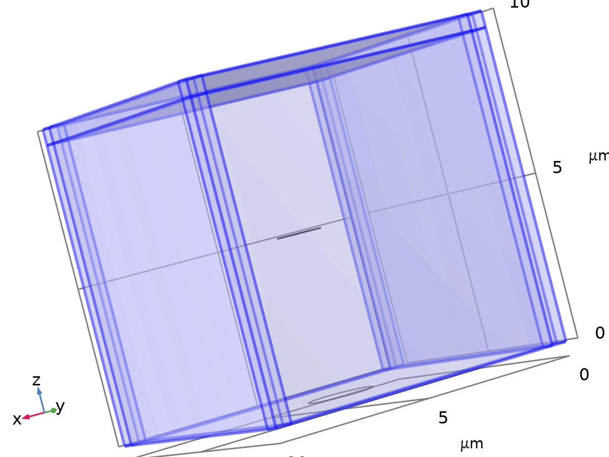
| 描述 | 值 |
|---|---|
| 类型 | 笛卡尔 |
| 描述 | 值 |
|---|---|
| 坐标拉伸类型 | 多项式 |
| 典型波长来自 | 物理场接口 |
| 物理场 | 压力声学，频域 (acpr) |

| 长度单位 | µm |
| 角单位 | deg |
| 描述 | 值 |
|---|---|
| 空间维度 | 3 |
| 域数 | 19 |
| 边界数 | 82 |
| 边数 | 120 |
| 顶点数 | 60 |
| 描述 | 值 |
|---|---|
| 宽度 | 10 |
| 深度 | 10 |
| 高度 | 10 |
| 描述 | 值 |
|---|---|
| 位置 | {0, 0, 0} |
| 描述 | 值 |
|---|---|
| 轴类型 | z 轴 |
| 层名称 | 厚度 (µm) |
|---|---|
| 层 1 | 0.5 |
| 描述 | 值 |
|---|---|
| 左 | 开 |
| 右 | 开 |
| 前 | 开 |
| 后 | 开 |
| 底 | 关 |
| 顶 | 开 |
| 描述 | 值 |
|---|---|
| 平面类型 | 快速 |
| 平面 | xy 平面 |
| 描述 | 值 |
|---|---|
| 位移 | {0, 0} |
| 描述 | 值 |
|---|---|
| 合并对象 | 开 |
| 描述 | 值 |
|---|---|
| 半径 | 1 |
| 描述 | 值 |
|---|---|
| 位置 | {5, 5} |
| 描述 | 值 |
|---|---|
| 宽度 | 1 |
| 深度 | 1 |
| 高度 | 0.003 |
| 描述 | 值 |
|---|---|
| 基准 | 居中 |
| 位置 | {5, 5, 5} |
| 描述 | 值 |
|---|---|
| 轴类型 | z 轴 |
| 描述 | 值 |
|---|---|
| 构建消息 |
“2 个实体对象”和“1 个表面对象”形成的联合体。 联合体包含 19 个域、82 个边界、120 条边和 60 个顶点。 |
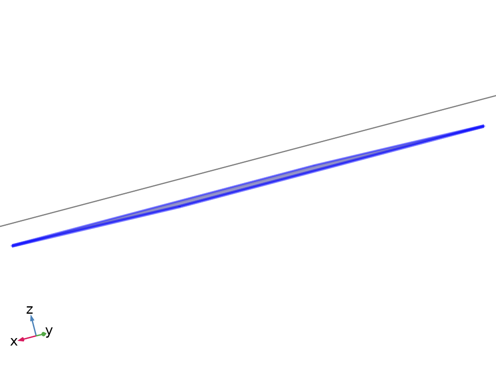
| 几何实体层 | 域 |
| 选择 | 几何 geom1: 尺寸标注 3: 域 13 |
| 名称 | 值 | 单位 | 属性组 |
|---|---|---|---|
| 密度 | 970 | kg/m³ | 基本 |
| 杨氏模量 | 7.5E5 | Pa | 杨氏模量和泊松比 |
| 泊松比 | 0.49 | 1 | 杨氏模量和泊松比 |
| Description | Value | Unit |
|---|---|---|
| 密度 | 970 | kg/m³ |
| Description | Value | Unit |
|---|---|---|
| 杨氏模量 | 7.5E5 | Pa |
| 泊松比 | 0.49 | 1 |

| 几何实体层 | 域 |
| 选择 | 几何 geom1: 尺寸标注 3: 域 1–12, 14–19 |
| 名称 | 值 | 单位 | 属性组 |
|---|---|---|---|
| 密度 | 1090 | kg/m³ | 基本 |
| 声速 | 1580 | m/s | 基本 |
| Description | Value | Unit |
|---|---|---|
| 密度 | 1090 | kg/m³ |
| 声速 | 1580 | m/s |
| 声学模块 |
| COMSOL Multiphysics |
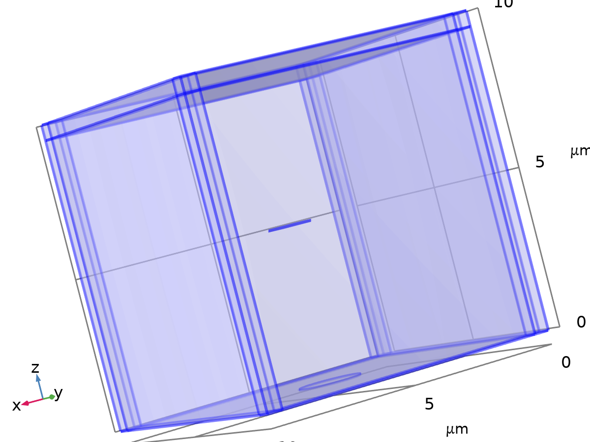
| 几何实体层 | 域 |
| 选择 | 几何 geom1: 尺寸标注 3: 域 1–12, 14–19 |

| Description | Value |
|---|---|
| 启用物理符号 | 开 |
| Description | Value |
|---|---|
| 单元阶次 | 二次拉格朗日单元 |
| Description | Value |
|---|---|
| 最大网格单元大小控制参数 | 来自研究 |
| 每个波长的网格单元数 | 自动 |
| Description | Value |
|---|---|
| 端口扫描设置 | 无端口扫描 |
| 振型归一化 | 大小归一化 |
| Description | Value |
|---|---|
| 声压级参考压力 | 使用空气的参考压力 |
| Description | Value | Unit |
|---|---|---|
| 完美匹配层的典型波速 | real(acpr.c_c) | m/s |
| 名称 | 表达式 | 单位 | 描述 | 选择 | 详细信息 |
|---|---|---|---|---|---|
| acpr.freq | freq | Hz | 频率 | 全局 | |
| acpr.omega | 2*pi*acpr.freq | rad/s | 角频率 | 全局 | |
| acpr.delta | 1/acpr.omega^2 | s² | 比例因子 | 域 9 | |
| acpr.delta | 1/acpr.omega^2 | s² | 比例因子 | 域 1–8, 10–12, 14–19 | |
| acpr.pref_SPL | 2.0E-5[Pa] | Pa | 参考压力 | 全局 | |
| acpr.Iref_SIL | 1.0E-12[W/m^2] | W/m² | 参考强度 | 全局 | |
| acpr.Pref_SWL | 1.0E-12[W] | W | 参考功率 | 全局 | |
| acpr.cref | real(acpr.c_c) | m/s | 完美匹配层的典型波速 | 域 9 | |
| acpr.cref | real(acpr.c_c) | m/s | 完美匹配层的典型波速 | 域 1–8, 10–12, 14–19 | |
| acpr.nx | nx | 1 | 法矢，x 分量 | 边界 31–32, 36, 39, 61 | |
| acpr.ny | ny | 1 | 法矢，y 分量 | 边界 31–32, 36, 39, 61 | |
| acpr.nz | nz | 1 | 法矢，z 分量 | 边界 31–32, 36, 39, 61 | |
| acpr.nx | unx | 1 | 法矢，x 分量 | 边界 48–53 | |
| acpr.ny | uny | 1 | 法矢，y 分量 | 边界 48–53 | |
| acpr.nz | unz | 1 | 法矢，z 分量 | 边界 48–53 | |
| acpr.nx | dnx | 1 | 法矢，x 分量 | 边界 33, 47 | |
| acpr.ny | dny | 1 | 法矢，y 分量 | 边界 33, 47 | |
| acpr.nz | dnz | 1 | 法矢，z 分量 | 边界 33, 47 | |
| acpr.nx | nx | 1 | 法矢，x 分量 | 边界 6, 9, 12–13, 16, 19–20, 24, 27, 29, 34–35, 38, 41–43, 54, 57, 59, 62, 64–66, 68–69, 71–73 | |
| acpr.ny | ny | 1 | 法矢，y 分量 | 边界 6, 9, 12–13, 16, 19–20, 24, 27, 29, 34–35, 38, 41–43, 54, 57, 59, 62, 64–66, 68–69, 71–73 | |
| acpr.nz | nz | 1 | 法矢，z 分量 | 边界 6, 9, 12–13, 16, 19–20, 24, 27, 29, 34–35, 38, 41–43, 54, 57, 59, 62, 64–66, 68–69, 71–73 | |
| acpr.nx | dnx | 1 | 法矢，x 分量 | 边界 1–5, 7–8, 10–11, 14–15, 17–18, 21–23, 25–26, 28, 30, 37, 40, 44–46, 55–56, 58, 60, 63, 67, 70, 74–82 | |
| acpr.ny | dny | 1 | 法矢，y 分量 | 边界 1–5, 7–8, 10–11, 14–15, 17–18, 21–23, 25–26, 28, 30, 37, 40, 44–46, 55–56, 58, 60, 63, 67, 70, 74–82 | |
| acpr.nz | dnz | 1 | 法矢，z 分量 | 边界 1–5, 7–8, 10–11, 14–15, 17–18, 21–23, 25–26, 28, 30, 37, 40, 44–46, 55–56, 58, 60, 63, 67, 70, 74–82 | |
| acpr.nxmesh | nxmesh | 1 | 法矢（网格），x 分量 | 边界 31–32, 36, 39, 61 | |
| acpr.nymesh | nymesh | 1 | 法矢（网格），y 分量 | 边界 31–32, 36, 39, 61 | |
| acpr.nzmesh | nzmesh | 1 | 法矢（网格），z 分量 | 边界 31–32, 36, 39, 61 | |
| acpr.nxmesh | unxmesh | 1 | 法矢（网格），x 分量 | 边界 48–53 | |
| acpr.nymesh | unymesh | 1 | 法矢（网格），y 分量 | 边界 48–53 | |
| acpr.nzmesh | unzmesh | 1 | 法矢（网格），z 分量 | 边界 48–53 | |
| acpr.nxmesh | dnxmesh | 1 | 法矢（网格），x 分量 | 边界 33, 47 | |
| acpr.nymesh | dnymesh | 1 | 法矢（网格），y 分量 | 边界 33, 47 | |
| acpr.nzmesh | dnzmesh | 1 | 法矢（网格），z 分量 | 边界 33, 47 | |
| acpr.nxmesh | nxmesh | 1 | 法矢（网格），x 分量 | 边界 6, 9, 12–13, 16, 19–20, 24, 27, 29, 34–35, 38, 41–43, 54, 57, 59, 62, 64–66, 68–69, 71–73 | |
| acpr.nymesh | nymesh | 1 | 法矢（网格），y 分量 | 边界 6, 9, 12–13, 16, 19–20, 24, 27, 29, 34–35, 38, 41–43, 54, 57, 59, 62, 64–66, 68–69, 71–73 | |
| acpr.nzmesh | nzmesh | 1 | 法矢（网格），z 分量 | 边界 6, 9, 12–13, 16, 19–20, 24, 27, 29, 34–35, 38, 41–43, 54, 57, 59, 62, 64–66, 68–69, 71–73 | |
| acpr.nxmesh | dnxmesh | 1 | 法矢（网格），x 分量 | 边界 1–5, 7–8, 10–11, 14–15, 17–18, 21–23, 25–26, 28, 30, 37, 40, 44–46, 55–56, 58, 60, 63, 67, 70, 74–82 | |
| acpr.nymesh | dnymesh | 1 | 法矢（网格），y 分量 | 边界 1–5, 7–8, 10–11, 14–15, 17–18, 21–23, 25–26, 28, 30, 37, 40, 44–46, 55–56, 58, 60, 63, 67, 70, 74–82 | |
| acpr.nzmesh | dnzmesh | 1 | 法矢（网格），z 分量 | 边界 1–5, 7–8, 10–11, 14–15, 17–18, 21–23, 25–26, 28, 30, 37, 40, 44–46, 55–56, 58, 60, 63, 67, 70, 74–82 | |
| acpr.iomega | acpr.omega*i | rad/s | 复角频率 | 全局 | |
| acpr.I_sn_pml | if(isdefined(root.comp1.acpr.I_sx),root.comp1.acpr.I_sx*nx+root.comp1.acpr.I_sy*ny+root.comp1.acpr.I_sz*nz,0.5*realdot(p,(-px*nx-py*ny-pz*nz)/(acpr.iomega*acpr.rho_c))) | W/m² | 法向散射强度（均方根） | 边界 31–32, 36, 39, 61 | Meta |
| acpr.P_pml | acpr.intop_pml(acpr.I_sn_pml) | W | 辐射功率到 PML | 全局 |

| 几何实体层 | 域 |
| 选择 | 几何 geom1: 尺寸标注 3: 所有域 |

| Description | Value |
|---|---|
| 流体模型 | 线弹性 |
| 指定 | 密度和声速 |
| 声速 | 来自材料 |
| 密度 | 来自材料 |
| Description | Value | Unit |
|---|---|---|
| 温度 | 用户定义 | |
| 温度 | 293.15 | K |
| 绝对压力 | 用户定义 | |
| 绝对压力 | 1.0133E5 | Pa |
| COMSOL Multiphysics |
| 属性 | 材料 | 属性组 |
|---|---|---|
| 密度 | Muscle | Basic |
| 声速 | Muscle | Basic |
| 名称 | 表达式 | 单位 | 描述 | 选择 | 详细信息 |
|---|---|---|---|---|---|
| acpr.v_bndx | 0 | m/s | 驱动边界速度，x 分量 | 边界 31–33, 36, 39, 47–53, 61 | “+”操作 |
| acpr.v_bndy | 0 | m/s | 驱动边界速度，y 分量 | 边界 31–33, 36, 39, 47–53, 61 | “+”操作 |
| acpr.v_bndz | 0 | m/s | 驱动边界速度，z 分量 | 边界 31–33, 36, 39, 47–53, 61 | “+”操作 |
| acpr.v_bndx | 0 | m/s | 驱动边界速度，x 分量 | 边界 1–30, 34–35, 37–38, 40–46, 54–60, 62–82 | “+”操作 |
| acpr.v_bndy | 0 | m/s | 驱动边界速度，y 分量 | 边界 1–30, 34–35, 37–38, 40–46, 54–60, 62–82 | “+”操作 |
| acpr.v_bndz | 0 | m/s | 驱动边界速度，z 分量 | 边界 1–30, 34–35, 37–38, 40–46, 54–60, 62–82 | “+”操作 |
| p_fld_abs_bc_0 | -acpr.k*i*p*test(p)*acpr.delta/acpr.rho_c | N/m | 吸收边界条件 | 域 9 | |
| p_fld_abs_bc_0 | -acpr.k*i*p*test(p)*acpr.delta/acpr.rho_c | N/m | 吸收边界条件 | 域 1–8, 10–12, 14–19 | |
| p_fld_abs_bc_2 | (dtang(acpr.p_s,x)*dtang(test(acpr.p_s),x)+dtang(acpr.p_s,y)*dtang(test(acpr.p_s),y)+dtang(acpr.p_s,z)*dtang(test(acpr.p_s),z))*acpr.delta/acpr.rho_c | N/m² | 吸收边界条件 | 域 9 | |
| p_fld_abs_bc_2 | ((pml1.T11*dtang(acpr.p_s,x)+pml1.T12*dtang(acpr.p_s,y)+pml1.T13*dtang(acpr.p_s,z))*(pml1.T11*dtang(test(acpr.p_s),x)+pml1.T12*dtang(test(acpr.p_s),y)+pml1.T13*dtang(test(acpr.p_s),z))+(pml1.T21*dtang(acpr.p_s,x)+pml1.T22*dtang(acpr.p_s,y)+pml1.T23*dtang(acpr.p_s,z))*(pml1.T21*dtang(test(acpr.p_s),x)+pml1.T22*dtang(test(acpr.p_s),y)+pml1.T23*dtang(test(acpr.p_s),z))+(pml1.T31*dtang(acpr.p_s,x)+pml1.T32*dtang(acpr.p_s,y)+pml1.T33*dtang(acpr.p_s,z))*(pml1.T31*dtang(test(acpr.p_s),x)+pml1.T32*dtang(test(acpr.p_s),y)+pml1.T33*dtang(test(acpr.p_s),z)))*acpr.delta/acpr.rho_c | N/m² | 吸收边界条件 | 域 1–8, 10–12, 14–19 | |
| p_fld_shift_lap_dd | -acpr.p_t*test(p)*i*abs(acpr.k[m])*acpr.delta/acpr.rho_c | N | 移位拉普拉斯贡献 | 域 9 | |
| p_fld_shift_lap_dd | -acpr.p_t*test(p)*i*abs(acpr.k[m])*acpr.delta/acpr.rho_c | N | 移位拉普拉斯贡献 | 域 1–8, 10–12, 14–19 | |
| p_fld_shift_lap_mg | -acpr.p_t*test(p)*i*abs(acpr.k[m])^1.5*acpr.delta/acpr.rho_c | N | 移位拉普拉斯贡献 | 域 9 | |
| p_fld_shift_lap_mg | -acpr.p_t*test(p)*i*abs(acpr.k[m])^1.5*acpr.delta/acpr.rho_c | N | 移位拉普拉斯贡献 | 域 1–8, 10–12, 14–19 | |
| acpr.q_totx | acpr.qx | N/m³ | 总偶极源，x 分量 | 域 9 | “+”操作 |
| acpr.q_toty | acpr.qy | N/m³ | 总偶极源，y 分量 | 域 9 | “+”操作 |
| acpr.q_totz | acpr.qz | N/m³ | 总偶极源，z 分量 | 域 9 | “+”操作 |
| acpr.q_totx | acpr.qx | N/m³ | 总偶极源，x 分量 | 域 1–8, 10–12, 14–19 | “+”操作 |
| acpr.q_toty | acpr.qy | N/m³ | 总偶极源，y 分量 | 域 1–8, 10–12, 14–19 | “+”操作 |
| acpr.q_totz | acpr.qz | N/m³ | 总偶极源，z 分量 | 域 1–8, 10–12, 14–19 | “+”操作 |
| acpr.Q | 0 | 1/s² | 总单极域源 | 域 9 | “+”操作 |
| acpr.Q | 0 | 1/s² | 总单极域源 | 域 1–8, 10–12, 14–19 | “+”操作 |
| acpr.qx | 0 | N/m³ | 偶极域源，x 分量 | 域 9 | “+”操作 |
| acpr.qy | 0 | N/m³ | 偶极域源，y 分量 | 域 9 | “+”操作 |
| acpr.qz | 0 | N/m³ | 偶极域源，z 分量 | 域 9 | “+”操作 |
| acpr.qx | 0 | N/m³ | 偶极域源，x 分量 | 域 1–8, 10–12, 14–19 | “+”操作 |
| acpr.qy | 0 | N/m³ | 偶极域源，y 分量 | 域 1–8, 10–12, 14–19 | “+”操作 |
| acpr.qz | 0 | N/m³ | 偶极域源，z 分量 | 域 1–8, 10–12, 14–19 | “+”操作 |
| acpr.p_s | acpr.p_t-acpr.p_b | Pa | 散射声压 | 域 9 | |
| acpr.p_s | acpr.p_t-acpr.p_b | Pa | 散射声压 | 域 1–8, 10–12, 14–19 | |
| acpr.p_b | 0 | Pa | 背景声压 | 域 9 | “+”操作 |
| acpr.p_b | 0 | Pa | 背景声压 | 域 1–8, 10–12, 14–19 | “+”操作 |
| acpr.Lp_s | 20*log10(acpr.p_s_rms/acpr.pref_SPL) | dB | 散射声压级 | 域 9 | |
| acpr.Lp_s | 20*log10(acpr.p_s_rms/acpr.pref_SPL) | dB | 散射声压级 | 域 1–8, 10–12, 14–19 | |
| acpr.Lp_b | 20*log10(acpr.p_b_rms/acpr.pref_SPL) | dB | 背景声压级 | 域 9 | |
| acpr.Lp_b | 20*log10(acpr.p_b_rms/acpr.pref_SPL) | dB | 背景声压级 | 域 1–8, 10–12, 14–19 | |
| acpr.Ix | 0.5*realdot(acpr.p_t,acpr.vx) | W/m² | 强度，x 分量 | 域 9 | |
| acpr.Iy | 0.5*realdot(acpr.p_t,acpr.vy) | W/m² | 强度，y 分量 | 域 9 | |
| acpr.Iz | 0.5*realdot(acpr.p_t,acpr.vz) | W/m² | 强度，z 分量 | 域 9 | |
| acpr.Ix | 0.5*realdot(acpr.p_t,acpr.vx) | W/m² | 强度，x 分量 | 域 1–8, 10–12, 14–19 | |
| acpr.Iy | 0.5*realdot(acpr.p_t,acpr.vy) | W/m² | 强度，y 分量 | 域 1–8, 10–12, 14–19 | |
| acpr.Iz | 0.5*realdot(acpr.p_t,acpr.vz) | W/m² | 强度，z 分量 | 域 1–8, 10–12, 14–19 | |
| acpr.ax | -(acpr.gradpx-acpr.q_totx)/acpr.rho_c | m/s² | 总声学加速度，x 分量 | 域 9 | |
| acpr.ay | -(acpr.gradpy-acpr.q_toty)/acpr.rho_c | m/s² | 总声学加速度，y 分量 | 域 9 | |
| acpr.az | -(acpr.gradpz-acpr.q_totz)/acpr.rho_c | m/s² | 总声学加速度，z 分量 | 域 9 | |
| acpr.ax | -(acpr.gradpx-acpr.q_totx)/acpr.rho_c | m/s² | 总声学加速度，x 分量 | 域 1–8, 10–12, 14–19 | |
| acpr.ay | -(acpr.gradpy-acpr.q_toty)/acpr.rho_c | m/s² | 总声学加速度，y 分量 | 域 1–8, 10–12, 14–19 | |
| acpr.az | -(acpr.gradpz-acpr.q_totz)/acpr.rho_c | m/s² | 总声学加速度，z 分量 | 域 1–8, 10–12, 14–19 | |
| acpr.a_tx | acpr.ax | m/s² | 总声学加速度，x 分量 | 域 9 | |
| acpr.a_ty | acpr.ay | m/s² | 总声学加速度，y 分量 | 域 9 | |
| acpr.a_tz | acpr.az | m/s² | 总声学加速度，z 分量 | 域 9 | |
| acpr.a_tx | acpr.ax | m/s² | 总声学加速度，x 分量 | 域 1–8, 10–12, 14–19 | |
| acpr.a_ty | acpr.ay | m/s² | 总声学加速度，y 分量 | 域 1–8, 10–12, 14–19 | |
| acpr.a_tz | acpr.az | m/s² | 总声学加速度，z 分量 | 域 1–8, 10–12, 14–19 | |
| acpr.vx | -(acpr.gradpx-acpr.q_totx)/(acpr.rho_c*acpr.iomega) | m/s | 总声速，x 分量 | 域 9 | |
| acpr.vy | -(acpr.gradpy-acpr.q_toty)/(acpr.rho_c*acpr.iomega) | m/s | 总声速，y 分量 | 域 9 | |
| acpr.vz | -(acpr.gradpz-acpr.q_totz)/(acpr.rho_c*acpr.iomega) | m/s | 总声速，z 分量 | 域 9 | |
| acpr.vx | -(acpr.gradpx-acpr.q_totx)/(acpr.rho_c*acpr.iomega) | m/s | 总声速，x 分量 | 域 1–8, 10–12, 14–19 | |
| acpr.vy | -(acpr.gradpy-acpr.q_toty)/(acpr.rho_c*acpr.iomega) | m/s | 总声速，y 分量 | 域 1–8, 10–12, 14–19 | |
| acpr.vz | -(acpr.gradpz-acpr.q_totz)/(acpr.rho_c*acpr.iomega) | m/s | 总声速，z 分量 | 域 1–8, 10–12, 14–19 | |
| acpr.v_tx | acpr.vx | m/s | 总声速，x 分量 | 域 9 | |
| acpr.v_ty | acpr.vy | m/s | 总声速，y 分量 | 域 9 | |
| acpr.v_tz | acpr.vz | m/s | 总声速，z 分量 | 域 9 | |
| acpr.v_tx | acpr.vx | m/s | 总声速，x 分量 | 域 1–8, 10–12, 14–19 | |
| acpr.v_ty | acpr.vy | m/s | 总声速，y 分量 | 域 1–8, 10–12, 14–19 | |
| acpr.v_tz | acpr.vz | m/s | 总声速，z 分量 | 域 1–8, 10–12, 14–19 | |
| acpr.gradpx | d(acpr.p_t,x) | N/m³ | 总压力梯度，x 分量 | 域 9 | “+”操作 |
| acpr.gradpy | d(acpr.p_t,y) | N/m³ | 总压力梯度，y 分量 | 域 9 | “+”操作 |
| acpr.gradpz | d(acpr.p_t,z) | N/m³ | 总压力梯度，z 分量 | 域 9 | “+”操作 |
| acpr.gradpx | pml1.T11*d(acpr.p_t,x)+pml1.T12*d(acpr.p_t,y)+pml1.T13*d(acpr.p_t,z) | N/m³ | 总压力梯度，x 分量 | 域 1–8, 10–12, 14–19 | “+”操作 |
| acpr.gradpy | pml1.T21*d(acpr.p_t,x)+pml1.T22*d(acpr.p_t,y)+pml1.T23*d(acpr.p_t,z) | N/m³ | 总压力梯度，y 分量 | 域 1–8, 10–12, 14–19 | “+”操作 |
| acpr.gradpz | pml1.T31*d(acpr.p_t,x)+pml1.T32*d(acpr.p_t,y)+pml1.T33*d(acpr.p_t,z) | N/m³ | 总压力梯度，z 分量 | 域 1–8, 10–12, 14–19 | “+”操作 |
| acpr.gradtestpx | test(px) | N/m³ | 方程助变量，x 分量 | 域 9 | “+”操作 |
| acpr.gradtestpy | test(py) | N/m³ | 方程助变量，y 分量 | 域 9 | “+”操作 |
| acpr.gradtestpz | test(pz) | N/m³ | 方程助变量，z 分量 | 域 9 | “+”操作 |
| acpr.gradtestpx | pml1.T11*test(px)+pml1.T12*test(py)+pml1.T13*test(pz) | N/m³ | 方程助变量，x 分量 | 域 1–8, 10–12, 14–19 | “+”操作 |
| acpr.gradtestpy | pml1.T21*test(px)+pml1.T22*test(py)+pml1.T23*test(pz) | N/m³ | 方程助变量，y 分量 | 域 1–8, 10–12, 14–19 | “+”操作 |
| acpr.gradtestpz | pml1.T31*test(px)+pml1.T32*test(py)+pml1.T33*test(pz) | N/m³ | 方程助变量，z 分量 | 域 1–8, 10–12, 14–19 | “+”操作 |
| acpr.hessianpxx | d(d(acpr.p_t,x),x) | N/(m·m³) | 总压力的 Hessian，xx 分量 | 域 9 | “+”操作 |
| acpr.hessianpyx | d(d(acpr.p_t,y),x) | N/(m·m³) | 总压力的 Hessian，yx 分量 | 域 9 | “+”操作 |
| acpr.hessianpzx | d(d(acpr.p_t,z),x) | N/(m·m³) | 总压力的 Hessian，zx 分量 | 域 9 | “+”操作 |
| acpr.hessianpxy | d(d(acpr.p_t,x),y) | N/(m·m³) | 总压力的 Hessian，xy 分量 | 域 9 | “+”操作 |
| acpr.hessianpyy | d(d(acpr.p_t,y),y) | N/(m·m³) | 总压力的 Hessian，yy 分量 | 域 9 | “+”操作 |
| acpr.hessianpzy | d(d(acpr.p_t,z),y) | N/(m·m³) | 总压力的 Hessian，zy 分量 | 域 9 | “+”操作 |
| acpr.hessianpxz | d(d(acpr.p_t,x),z) | N/(m·m³) | 总压力的 Hessian，xz 分量 | 域 9 | “+”操作 |
| acpr.hessianpyz | d(d(acpr.p_t,y),z) | N/(m·m³) | 总压力的 Hessian，yz 分量 | 域 9 | “+”操作 |
| acpr.hessianpzz | d(d(acpr.p_t,z),z) | N/(m·m³) | 总压力的 Hessian，zz 分量 | 域 9 | “+”操作 |
| acpr.hessianpxx | pml1.T11*d(pml1.T11*d(acpr.p_t,x)+pml1.T12*d(acpr.p_t,y)+pml1.T13*d(acpr.p_t,z),x)+pml1.T12*d(pml1.T11*d(acpr.p_t,x)+pml1.T12*d(acpr.p_t,y)+pml1.T13*d(acpr.p_t,z),y)+pml1.T13*d(pml1.T11*d(acpr.p_t,x)+pml1.T12*d(acpr.p_t,y)+pml1.T13*d(acpr.p_t,z),z) | N/(m·m³) | 总压力的 Hessian，xx 分量 | 域 1–8, 10–12, 14–19 | “+”操作 |
| acpr.hessianpyx | pml1.T11*d(pml1.T21*d(acpr.p_t,x)+pml1.T22*d(acpr.p_t,y)+pml1.T23*d(acpr.p_t,z),x)+pml1.T12*d(pml1.T21*d(acpr.p_t,x)+pml1.T22*d(acpr.p_t,y)+pml1.T23*d(acpr.p_t,z),y)+pml1.T13*d(pml1.T21*d(acpr.p_t,x)+pml1.T22*d(acpr.p_t,y)+pml1.T23*d(acpr.p_t,z),z) | N/(m·m³) | 总压力的 Hessian，yx 分量 | 域 1–8, 10–12, 14–19 | “+”操作 |
| acpr.hessianpzx | pml1.T11*d(pml1.T31*d(acpr.p_t,x)+pml1.T32*d(acpr.p_t,y)+pml1.T33*d(acpr.p_t,z),x)+pml1.T12*d(pml1.T31*d(acpr.p_t,x)+pml1.T32*d(acpr.p_t,y)+pml1.T33*d(acpr.p_t,z),y)+pml1.T13*d(pml1.T31*d(acpr.p_t,x)+pml1.T32*d(acpr.p_t,y)+pml1.T33*d(acpr.p_t,z),z) | N/(m·m³) | 总压力的 Hessian，zx 分量 | 域 1–8, 10–12, 14–19 | “+”操作 |
| acpr.hessianpxy | pml1.T21*d(pml1.T11*d(acpr.p_t,x)+pml1.T12*d(acpr.p_t,y)+pml1.T13*d(acpr.p_t,z),x)+pml1.T22*d(pml1.T11*d(acpr.p_t,x)+pml1.T12*d(acpr.p_t,y)+pml1.T13*d(acpr.p_t,z),y)+pml1.T23*d(pml1.T11*d(acpr.p_t,x)+pml1.T12*d(acpr.p_t,y)+pml1.T13*d(acpr.p_t,z),z) | N/(m·m³) | 总压力的 Hessian，xy 分量 | 域 1–8, 10–12, 14–19 | “+”操作 |
| acpr.hessianpyy | pml1.T21*d(pml1.T21*d(acpr.p_t,x)+pml1.T22*d(acpr.p_t,y)+pml1.T23*d(acpr.p_t,z),x)+pml1.T22*d(pml1.T21*d(acpr.p_t,x)+pml1.T22*d(acpr.p_t,y)+pml1.T23*d(acpr.p_t,z),y)+pml1.T23*d(pml1.T21*d(acpr.p_t,x)+pml1.T22*d(acpr.p_t,y)+pml1.T23*d(acpr.p_t,z),z) | N/(m·m³) | 总压力的 Hessian，yy 分量 | 域 1–8, 10–12, 14–19 | “+”操作 |
| acpr.hessianpzy | pml1.T21*d(pml1.T31*d(acpr.p_t,x)+pml1.T32*d(acpr.p_t,y)+pml1.T33*d(acpr.p_t,z),x)+pml1.T22*d(pml1.T31*d(acpr.p_t,x)+pml1.T32*d(acpr.p_t,y)+pml1.T33*d(acpr.p_t,z),y)+pml1.T23*d(pml1.T31*d(acpr.p_t,x)+pml1.T32*d(acpr.p_t,y)+pml1.T33*d(acpr.p_t,z),z) | N/(m·m³) | 总压力的 Hessian，zy 分量 | 域 1–8, 10–12, 14–19 | “+”操作 |
| acpr.hessianpxz | pml1.T31*d(pml1.T11*d(acpr.p_t,x)+pml1.T12*d(acpr.p_t,y)+pml1.T13*d(acpr.p_t,z),x)+pml1.T32*d(pml1.T11*d(acpr.p_t,x)+pml1.T12*d(acpr.p_t,y)+pml1.T13*d(acpr.p_t,z),y)+pml1.T33*d(pml1.T11*d(acpr.p_t,x)+pml1.T12*d(acpr.p_t,y)+pml1.T13*d(acpr.p_t,z),z) | N/(m·m³) | 总压力的 Hessian，xz 分量 | 域 1–8, 10–12, 14–19 | “+”操作 |
| acpr.hessianpyz | pml1.T31*d(pml1.T21*d(acpr.p_t,x)+pml1.T22*d(acpr.p_t,y)+pml1.T23*d(acpr.p_t,z),x)+pml1.T32*d(pml1.T21*d(acpr.p_t,x)+pml1.T22*d(acpr.p_t,y)+pml1.T23*d(acpr.p_t,z),y)+pml1.T33*d(pml1.T21*d(acpr.p_t,x)+pml1.T22*d(acpr.p_t,y)+pml1.T23*d(acpr.p_t,z),z) | N/(m·m³) | 总压力的 Hessian，yz 分量 | 域 1–8, 10–12, 14–19 | “+”操作 |
| acpr.hessianpzz | pml1.T31*d(pml1.T31*d(acpr.p_t,x)+pml1.T32*d(acpr.p_t,y)+pml1.T33*d(acpr.p_t,z),x)+pml1.T32*d(pml1.T31*d(acpr.p_t,x)+pml1.T32*d(acpr.p_t,y)+pml1.T33*d(acpr.p_t,z),y)+pml1.T33*d(pml1.T31*d(acpr.p_t,x)+pml1.T32*d(acpr.p_t,y)+pml1.T33*d(acpr.p_t,z),z) | N/(m·m³) | 总压力的 Hessian，zz 分量 | 域 1–8, 10–12, 14–19 | “+”操作 |
| acpr.hessiantestpxx | test(pxx) | N/(m·m³) | 方程助变量，xx 分量 | 域 9 | “+”操作 |
| acpr.hessiantestpyx | test(pyx) | N/(m·m³) | 方程助变量，yx 分量 | 域 9 | “+”操作 |
| acpr.hessiantestpzx | test(pzx) | N/(m·m³) | 方程助变量，zx 分量 | 域 9 | “+”操作 |
| acpr.hessiantestpxy | test(pxy) | N/(m·m³) | 方程助变量，xy 分量 | 域 9 | “+”操作 |
| acpr.hessiantestpyy | test(pyy) | N/(m·m³) | 方程助变量，yy 分量 | 域 9 | “+”操作 |
| acpr.hessiantestpzy | test(pzy) | N/(m·m³) | 方程助变量，zy 分量 | 域 9 | “+”操作 |
| acpr.hessiantestpxz | test(pxz) | N/(m·m³) | 方程助变量，xz 分量 | 域 9 | “+”操作 |
| acpr.hessiantestpyz | test(pyz) | N/(m·m³) | 方程助变量，yz 分量 | 域 9 | “+”操作 |
| acpr.hessiantestpzz | test(pzz) | N/(m·m³) | 方程助变量，zz 分量 | 域 9 | “+”操作 |
| acpr.hessiantestpxx | pml1.T11*d(pml1.T11*test(px)+pml1.T12*test(py)+pml1.T13*test(pz),x)+pml1.T12*d(pml1.T11*test(px)+pml1.T12*test(py)+pml1.T13*test(pz),y)+pml1.T13*d(pml1.T11*test(px)+pml1.T12*test(py)+pml1.T13*test(pz),z) | N/(m·m³) | 方程助变量，xx 分量 | 域 1–8, 10–12, 14–19 | “+”操作 |
| acpr.hessiantestpyx | pml1.T11*d(pml1.T21*test(px)+pml1.T22*test(py)+pml1.T23*test(pz),x)+pml1.T12*d(pml1.T21*test(px)+pml1.T22*test(py)+pml1.T23*test(pz),y)+pml1.T13*d(pml1.T21*test(px)+pml1.T22*test(py)+pml1.T23*test(pz),z) | N/(m·m³) | 方程助变量，yx 分量 | 域 1–8, 10–12, 14–19 | “+”操作 |
| acpr.hessiantestpzx | pml1.T11*d(pml1.T31*test(px)+pml1.T32*test(py)+pml1.T33*test(pz),x)+pml1.T12*d(pml1.T31*test(px)+pml1.T32*test(py)+pml1.T33*test(pz),y)+pml1.T13*d(pml1.T31*test(px)+pml1.T32*test(py)+pml1.T33*test(pz),z) | N/(m·m³) | 方程助变量，zx 分量 | 域 1–8, 10–12, 14–19 | “+”操作 |
| acpr.hessiantestpxy | pml1.T21*d(pml1.T11*test(px)+pml1.T12*test(py)+pml1.T13*test(pz),x)+pml1.T22*d(pml1.T11*test(px)+pml1.T12*test(py)+pml1.T13*test(pz),y)+pml1.T23*d(pml1.T11*test(px)+pml1.T12*test(py)+pml1.T13*test(pz),z) | N/(m·m³) | 方程助变量，xy 分量 | 域 1–8, 10–12, 14–19 | “+”操作 |
| acpr.hessiantestpyy | pml1.T21*d(pml1.T21*test(px)+pml1.T22*test(py)+pml1.T23*test(pz),x)+pml1.T22*d(pml1.T21*test(px)+pml1.T22*test(py)+pml1.T23*test(pz),y)+pml1.T23*d(pml1.T21*test(px)+pml1.T22*test(py)+pml1.T23*test(pz),z) | N/(m·m³) | 方程助变量，yy 分量 | 域 1–8, 10–12, 14–19 | “+”操作 |
| acpr.hessiantestpzy | pml1.T21*d(pml1.T31*test(px)+pml1.T32*test(py)+pml1.T33*test(pz),x)+pml1.T22*d(pml1.T31*test(px)+pml1.T32*test(py)+pml1.T33*test(pz),y)+pml1.T23*d(pml1.T31*test(px)+pml1.T32*test(py)+pml1.T33*test(pz),z) | N/(m·m³) | 方程助变量，zy 分量 | 域 1–8, 10–12, 14–19 | “+”操作 |
| acpr.hessiantestpxz | pml1.T31*d(pml1.T11*test(px)+pml1.T12*test(py)+pml1.T13*test(pz),x)+pml1.T32*d(pml1.T11*test(px)+pml1.T12*test(py)+pml1.T13*test(pz),y)+pml1.T33*d(pml1.T11*test(px)+pml1.T12*test(py)+pml1.T13*test(pz),z) | N/(m·m³) | 方程助变量，xz 分量 | 域 1–8, 10–12, 14–19 | “+”操作 |
| acpr.hessiantestpyz | pml1.T31*d(pml1.T21*test(px)+pml1.T22*test(py)+pml1.T23*test(pz),x)+pml1.T32*d(pml1.T21*test(px)+pml1.T22*test(py)+pml1.T23*test(pz),y)+pml1.T33*d(pml1.T21*test(px)+pml1.T22*test(py)+pml1.T23*test(pz),z) | N/(m·m³) | 方程助变量，yz 分量 | 域 1–8, 10–12, 14–19 | “+”操作 |
| acpr.hessiantestpzz | pml1.T31*d(pml1.T31*test(px)+pml1.T32*test(py)+pml1.T33*test(pz),x)+pml1.T32*d(pml1.T31*test(px)+pml1.T32*test(py)+pml1.T33*test(pz),y)+pml1.T33*d(pml1.T31*test(px)+pml1.T32*test(py)+pml1.T33*test(pz),z) | N/(m·m³) | 方程助变量，zz 分量 | 域 1–8, 10–12, 14–19 | “+”操作 |
| acpr.nacc | 0 | m/s² | 向内加速度（源） | 边界 31–33, 36, 39, 47–53, 61 | “+”操作 |
| acpr.nacc | 0 | m/s² | 向内加速度（源） | 边界 1–30, 34–35, 37–38, 40–46, 54–60, 62–82 | “+”操作 |
| acpr.rho | material.rho | kg/m³ | 密度 | 域 9 | Meta |
| acpr.rho | material.rho | kg/m³ | 密度 | 域 1–8, 10–12, 14–19 | Meta |
| acpr.c | material.c | m/s | 声速 | 域 9 | Meta |
| acpr.c | material.c | m/s | 声速 | 域 1–8, 10–12, 14–19 | Meta |
| acpr.FAcoPerAreax | acpr.p_t*acpr.nx | N/m² | 单位面积的声载荷，x 分量 | 边界 31–33, 36, 39, 47–53, 61 | |
| acpr.FAcoPerAreay | acpr.p_t*acpr.ny | N/m² | 单位面积的声载荷，y 分量 | 边界 31–33, 36, 39, 47–53, 61 | |
| acpr.FAcoPerAreaz | acpr.p_t*acpr.nz | N/m² | 单位面积的声载荷，z 分量 | 边界 31–33, 36, 39, 47–53, 61 | |
| acpr.FAcoPerAreax | acpr.p_t*acpr.nx | N/m² | 单位面积的声载荷，x 分量 | 边界 1–30, 34–35, 37–38, 40–46, 54–60, 62–82 | |
| acpr.FAcoPerAreay | acpr.p_t*acpr.ny | N/m² | 单位面积的声载荷，y 分量 | 边界 1–30, 34–35, 37–38, 40–46, 54–60, 62–82 | |
| acpr.FAcoPerAreaz | acpr.p_t*acpr.nz | N/m² | 单位面积的声载荷，z 分量 | 边界 1–30, 34–35, 37–38, 40–46, 54–60, 62–82 | |
| acpr.p_t | p+acpr.p_b | Pa | 总声压 | 域 9 | |
| acpr.p_t | p+acpr.p_b | Pa | 总声压 | 域 1–8, 10–12, 14–19 | |
| acpr.c_c | acpr.c | m/s | 复声速 | 域 9 | |
| acpr.c_c | acpr.c | m/s | 复声速 | 域 1–8, 10–12, 14–19 | |
| acpr.rho_c | acpr.rho | kg/m³ | 复密度 | 域 9 | |
| acpr.rho_c | acpr.rho | kg/m³ | 复密度 | 域 1–8, 10–12, 14–19 | |
| acpr.Z | acpr.rho_c*acpr.c_c | Pa·s/m | 比特性声阻抗 | 域 9 | |
| acpr.Z | acpr.rho_c*acpr.c_c | Pa·s/m | 比特性声阻抗 | 域 1–8, 10–12, 14–19 | |
| acpr.k | acpr.iomega/(i*acpr.c_c) | rad/m | 波数 | 域 9 | |
| acpr.k | acpr.iomega/(i*acpr.c_c) | rad/m | 波数 | 域 1–8, 10–12, 14–19 | |
| acpr.ik | acpr.iomega/acpr.c_c | rad/m | 相移波数 | 域 9 | |
| acpr.ik | acpr.iomega/acpr.c_c | rad/m | 相移波数 | 域 1–8, 10–12, 14–19 | |
| acpr.K_eff | acpr.rho_c*acpr.c_c^2 | Pa | 有效体积模量 | 域 9 | |
| acpr.K_eff | acpr.rho_c*acpr.c_c^2 | Pa | 有效体积模量 | 域 1–8, 10–12, 14–19 | |
| acpr.keq_sq | -acpr.ik^2 | 1/m² | 方程中的波数平方 | 域 9 | “+”操作 |
| acpr.keq_sq | -acpr.ik^2 | 1/m² | 方程中的波数平方 | 域 1–8, 10–12, 14–19 | “+”操作 |
| acpr.keq | sqrt(acpr.keq_sq) | rad/m | 方程的波数 | 域 9 | |
| acpr.keq | sqrt(acpr.keq_sq) | rad/m | 方程的波数 | 域 1–8, 10–12, 14–19 | |
| acpr.a_inst | sqrt(real(acpr.ax)^2+real(acpr.ay)^2+real(acpr.az)^2) | m/s² | 瞬时总声学加速度 | 域 9 | |
| acpr.a_inst | sqrt(real(acpr.ax)^2+real(acpr.ay)^2+real(acpr.az)^2) | m/s² | 瞬时总声学加速度 | 域 1–8, 10–12, 14–19 | |
| acpr.a_rms | sqrt(0.5*(realdot(acpr.ax,acpr.ax)+realdot(acpr.ay,acpr.ay)+realdot(acpr.az,acpr.az))) | m/s² | 总声学加速度，RMS | 域 9 | |
| acpr.a_rms | sqrt(0.5*(realdot(acpr.ax,acpr.ax)+realdot(acpr.ay,acpr.ay)+realdot(acpr.az,acpr.az))) | m/s² | 总声学加速度，RMS | 域 1–8, 10–12, 14–19 | |
| acpr.v_inst | sqrt(real(acpr.vx)^2+real(acpr.vy)^2+real(acpr.vz)^2) | m/s | 瞬时总声速 | 域 9 | |
| acpr.v_inst | sqrt(real(acpr.vx)^2+real(acpr.vy)^2+real(acpr.vz)^2) | m/s | 瞬时总声速 | 域 1–8, 10–12, 14–19 | |
| acpr.v_rms | sqrt(0.5*(realdot(acpr.vx,acpr.vx)+realdot(acpr.vy,acpr.vy)+realdot(acpr.vz,acpr.vz))) | m/s | 总声速，RMS | 域 9 | |
| acpr.v_rms | sqrt(0.5*(realdot(acpr.vx,acpr.vx)+realdot(acpr.vy,acpr.vy)+realdot(acpr.vz,acpr.vz))) | m/s | 总声速，RMS | 域 1–8, 10–12, 14–19 | |
| acpr.I_mag | sqrt(acpr.Ix^2+acpr.Iy^2+acpr.Iz^2) | W/m² | 强度大小 | 域 9 | |
| acpr.I_mag | sqrt(acpr.Ix^2+acpr.Iy^2+acpr.Iz^2) | W/m² | 强度大小 | 域 1–8, 10–12, 14–19 | |
| acpr.absp_t | sqrt(realdot(acpr.p_t,acpr.p_t)) | Pa | 绝对总声压 | 域 9 | |
| acpr.absp_t | sqrt(realdot(acpr.p_t,acpr.p_t)) | Pa | 绝对总声压 | 域 1–8, 10–12, 14–19 | |
| acpr.absp_s | sqrt(realdot(acpr.p_s,acpr.p_s)) | Pa | 绝对散射声压 | 域 9 | |
| acpr.absp_s | sqrt(realdot(acpr.p_s,acpr.p_s)) | Pa | 绝对散射声压 | 域 1–8, 10–12, 14–19 | |
| acpr.absp_b | sqrt(realdot(acpr.p_b,acpr.p_b)) | Pa | 绝对背景声压 | 域 9 | |
| acpr.absp_b | sqrt(realdot(acpr.p_b,acpr.p_b)) | Pa | 绝对背景声压 | 域 1–8, 10–12, 14–19 | |
| acpr.Lp_t | 20*log10(acpr.p_t_rms/acpr.pref_SPL) | dB | 总声压级 | 域 9 | |
| acpr.Lp_t | 20*log10(acpr.p_t_rms/acpr.pref_SPL) | dB | 总声压级 | 域 1–8, 10–12, 14–19 | |
| acpr.p_t_rms | sqrt(0.5*realdot(acpr.p_t,acpr.p_t)) | Pa | 总声压，均方根 | 域 9 | |
| acpr.p_t_rms | sqrt(0.5*realdot(acpr.p_t,acpr.p_t)) | Pa | 总声压，均方根 | 域 1–8, 10–12, 14–19 | |
| acpr.p_s_rms | sqrt(0.5*realdot(acpr.p_s,acpr.p_s)) | Pa | 散射声压，均方根 | 域 9 | |
| acpr.p_s_rms | sqrt(0.5*realdot(acpr.p_s,acpr.p_s)) | Pa | 散射声压，均方根 | 域 1–8, 10–12, 14–19 | |
| acpr.p_b_rms | sqrt(0.5*realdot(acpr.p_b,acpr.p_b)) | Pa | 背景声压，均方根 | 域 9 | |
| acpr.p_b_rms | sqrt(0.5*realdot(acpr.p_b,acpr.p_b)) | Pa | 背景声压，均方根 | 域 1–8, 10–12, 14–19 | |
| acpr.diss_visc | 0 | W/m³ | 黏性功耗密度 | 域 9 | |
| acpr.diss_visc | 0 | W/m³ | 黏性功耗密度 | 域 1–8, 10–12, 14–19 | |
| acpr.diss_therm | 0 | W/m³ | 热功耗密度 | 域 9 | |
| acpr.diss_therm | 0 | W/m³ | 热功耗密度 | 域 1–8, 10–12, 14–19 | |
| acpr.diss_tot | acpr.diss_visc+acpr.diss_therm | W/m³ | 总热黏性功耗密度 | 域 9 | |
| acpr.diss_tot | acpr.diss_visc+acpr.diss_therm | W/m³ | 总热黏性功耗密度 | 域 1–8, 10–12, 14–19 | |
| acpr.Q_pw | -2*imag(acpr.k)*acpr.I_mag | W/m³ | 平面波总功耗密度 | 域 9 | |
| acpr.Q_pw | -2*imag(acpr.k)*acpr.I_mag | W/m³ | 平面波总功耗密度 | 域 1–8, 10–12, 14–19 | |
| acpr.rho_eff_invxx | 1/acpr.rho_c | m³/kg | 有效密度的倒数，xx 分量 | 域 9 | |
| acpr.rho_eff_invyx | 0 | m³/kg | 有效密度的倒数，yx 分量 | 域 9 | |
| acpr.rho_eff_invzx | 0 | m³/kg | 有效密度的倒数，zx 分量 | 域 9 | |
| acpr.rho_eff_invxy | 0 | m³/kg | 有效密度的倒数，xy 分量 | 域 9 | |
| acpr.rho_eff_invyy | 1/acpr.rho_c | m³/kg | 有效密度的倒数，yy 分量 | 域 9 | |
| acpr.rho_eff_invzy | 0 | m³/kg | 有效密度的倒数，zy 分量 | 域 9 | |
| acpr.rho_eff_invxz | 0 | m³/kg | 有效密度的倒数，xz 分量 | 域 9 | |
| acpr.rho_eff_invyz | 0 | m³/kg | 有效密度的倒数，yz 分量 | 域 9 | |
| acpr.rho_eff_invzz | 1/acpr.rho_c | m³/kg | 有效密度的倒数，zz 分量 | 域 9 | |
| acpr.rho_eff_invxx | 1/acpr.rho_c | m³/kg | 有效密度的倒数，xx 分量 | 域 1–8, 10–12, 14–19 | |
| acpr.rho_eff_invyx | 0 | m³/kg | 有效密度的倒数，yx 分量 | 域 1–8, 10–12, 14–19 | |
| acpr.rho_eff_invzx | 0 | m³/kg | 有效密度的倒数，zx 分量 | 域 1–8, 10–12, 14–19 | |
| acpr.rho_eff_invxy | 0 | m³/kg | 有效密度的倒数，xy 分量 | 域 1–8, 10–12, 14–19 | |
| acpr.rho_eff_invyy | 1/acpr.rho_c | m³/kg | 有效密度的倒数，yy 分量 | 域 1–8, 10–12, 14–19 | |
| acpr.rho_eff_invzy | 0 | m³/kg | 有效密度的倒数，zy 分量 | 域 1–8, 10–12, 14–19 | |
| acpr.rho_eff_invxz | 0 | m³/kg | 有效密度的倒数，xz 分量 | 域 1–8, 10–12, 14–19 | |
| acpr.rho_eff_invyz | 0 | m³/kg | 有效密度的倒数，yz 分量 | 域 1–8, 10–12, 14–19 | |
| acpr.rho_eff_invzz | 1/acpr.rho_c | m³/kg | 有效密度的倒数，zz 分量 | 域 1–8, 10–12, 14–19 | |
| acpr.rho_effxx | acpr.rho_c | kg/m³ | 有效密度，xx 分量 | 域 9 | |
| acpr.rho_effyx | 0 | kg/m³ | 有效密度，yx 分量 | 域 9 | |
| acpr.rho_effzx | 0 | kg/m³ | 有效密度，zx 分量 | 域 9 | |
| acpr.rho_effxy | 0 | kg/m³ | 有效密度，xy 分量 | 域 9 | |
| acpr.rho_effyy | acpr.rho_c | kg/m³ | 有效密度，yy 分量 | 域 9 | |
| acpr.rho_effzy | 0 | kg/m³ | 有效密度，zy 分量 | 域 9 | |
| acpr.rho_effxz | 0 | kg/m³ | 有效密度，xz 分量 | 域 9 | |
| acpr.rho_effyz | 0 | kg/m³ | 有效密度，yz 分量 | 域 9 | |
| acpr.rho_effzz | acpr.rho_c | kg/m³ | 有效密度，zz 分量 | 域 9 | |
| acpr.rho_effxx | acpr.rho_c | kg/m³ | 有效密度，xx 分量 | 域 1–8, 10–12, 14–19 | |
| acpr.rho_effyx | 0 | kg/m³ | 有效密度，yx 分量 | 域 1–8, 10–12, 14–19 | |
| acpr.rho_effzx | 0 | kg/m³ | 有效密度，zx 分量 | 域 1–8, 10–12, 14–19 | |
| acpr.rho_effxy | 0 | kg/m³ | 有效密度，xy 分量 | 域 1–8, 10–12, 14–19 | |
| acpr.rho_effyy | acpr.rho_c | kg/m³ | 有效密度，yy 分量 | 域 1–8, 10–12, 14–19 | |
| acpr.rho_effzy | 0 | kg/m³ | 有效密度，zy 分量 | 域 1–8, 10–12, 14–19 | |
| acpr.rho_effxz | 0 | kg/m³ | 有效密度，xz 分量 | 域 1–8, 10–12, 14–19 | |
| acpr.rho_effyz | 0 | kg/m³ | 有效密度，yz 分量 | 域 1–8, 10–12, 14–19 | |
| acpr.rho_effzz | acpr.rho_c | kg/m³ | 有效密度，zz 分量 | 域 1–8, 10–12, 14–19 | |
| pxt | d(px,TIME)-pxx*d(x,TIME)-pxy*d(y,TIME)-pxz*d(z,TIME) | W/m⁴ | “p”的梯度，x 分量，一阶时间导数 | 域 9 | |
| pyt | d(py,TIME)-pyx*d(x,TIME)-pyy*d(y,TIME)-pyz*d(z,TIME) | W/m⁴ | “p”的梯度，y 分量，一阶时间导数 | 域 9 | |
| pzt | d(pz,TIME)-pzx*d(x,TIME)-pzy*d(y,TIME)-pzz*d(z,TIME) | W/m⁴ | “p”的梯度，z 分量，一阶时间导数 | 域 9 | |
| pxt | d(px,TIME)-pxx*d(x,TIME)-pxy*d(y,TIME)-pxz*d(z,TIME) | W/m⁴ | “p”的梯度，x 分量，一阶时间导数 | 域 1–8, 10–12, 14–19 | |
| pyt | d(py,TIME)-pyx*d(x,TIME)-pyy*d(y,TIME)-pyz*d(z,TIME) | W/m⁴ | “p”的梯度，y 分量，一阶时间导数 | 域 1–8, 10–12, 14–19 | |
| pzt | d(pz,TIME)-pzx*d(x,TIME)-pzy*d(y,TIME)-pzz*d(z,TIME) | W/m⁴ | “p”的梯度，z 分量，一阶时间导数 | 域 1–8, 10–12, 14–19 | |
| pxtt | d(d(px,TIME)-pxx*d(x,TIME)-pxy*d(y,TIME)-pxz*d(z,TIME),TIME)-d(d(px,TIME)-pxx*d(x,TIME)-pxy*d(y,TIME)-pxz*d(z,TIME),x)*d(x,TIME)-d(d(px,TIME)-pxx*d(x,TIME)-pxy*d(y,TIME)-pxz*d(z,TIME),y)*d(y,TIME)-d(d(px,TIME)-pxx*d(x,TIME)-pxy*d(y,TIME)-pxz*d(z,TIME),z)*d(z,TIME) | kg/(m²·s⁴) | “p”的梯度，x 分量，二阶时间导数 | 域 9 | |
| pytt | d(d(py,TIME)-pyx*d(x,TIME)-pyy*d(y,TIME)-pyz*d(z,TIME),TIME)-d(d(py,TIME)-pyx*d(x,TIME)-pyy*d(y,TIME)-pyz*d(z,TIME),x)*d(x,TIME)-d(d(py,TIME)-pyx*d(x,TIME)-pyy*d(y,TIME)-pyz*d(z,TIME),y)*d(y,TIME)-d(d(py,TIME)-pyx*d(x,TIME)-pyy*d(y,TIME)-pyz*d(z,TIME),z)*d(z,TIME) | kg/(m²·s⁴) | “p”的梯度，y 分量，二阶时间导数 | 域 9 | |
| pztt | d(d(pz,TIME)-pzx*d(x,TIME)-pzy*d(y,TIME)-pzz*d(z,TIME),TIME)-d(d(pz,TIME)-pzx*d(x,TIME)-pzy*d(y,TIME)-pzz*d(z,TIME),x)*d(x,TIME)-d(d(pz,TIME)-pzx*d(x,TIME)-pzy*d(y,TIME)-pzz*d(z,TIME),y)*d(y,TIME)-d(d(pz,TIME)-pzx*d(x,TIME)-pzy*d(y,TIME)-pzz*d(z,TIME),z)*d(z,TIME) | kg/(m²·s⁴) | “p”的梯度，z 分量，二阶时间导数 | 域 9 | |
| pxtt | d(d(px,TIME)-pxx*d(x,TIME)-pxy*d(y,TIME)-pxz*d(z,TIME),TIME)-d(d(px,TIME)-pxx*d(x,TIME)-pxy*d(y,TIME)-pxz*d(z,TIME),x)*d(x,TIME)-d(d(px,TIME)-pxx*d(x,TIME)-pxy*d(y,TIME)-pxz*d(z,TIME),y)*d(y,TIME)-d(d(px,TIME)-pxx*d(x,TIME)-pxy*d(y,TIME)-pxz*d(z,TIME),z)*d(z,TIME) | kg/(m²·s⁴) | “p”的梯度，x 分量，二阶时间导数 | 域 1–8, 10–12, 14–19 | |
| pytt | d(d(py,TIME)-pyx*d(x,TIME)-pyy*d(y,TIME)-pyz*d(z,TIME),TIME)-d(d(py,TIME)-pyx*d(x,TIME)-pyy*d(y,TIME)-pyz*d(z,TIME),x)*d(x,TIME)-d(d(py,TIME)-pyx*d(x,TIME)-pyy*d(y,TIME)-pyz*d(z,TIME),y)*d(y,TIME)-d(d(py,TIME)-pyx*d(x,TIME)-pyy*d(y,TIME)-pyz*d(z,TIME),z)*d(z,TIME) | kg/(m²·s⁴) | “p”的梯度，y 分量，二阶时间导数 | 域 1–8, 10–12, 14–19 | |
| pztt | d(d(pz,TIME)-pzx*d(x,TIME)-pzy*d(y,TIME)-pzz*d(z,TIME),TIME)-d(d(pz,TIME)-pzx*d(x,TIME)-pzy*d(y,TIME)-pzz*d(z,TIME),x)*d(x,TIME)-d(d(pz,TIME)-pzx*d(x,TIME)-pzy*d(y,TIME)-pzz*d(z,TIME),y)*d(y,TIME)-d(d(pz,TIME)-pzx*d(x,TIME)-pzy*d(y,TIME)-pzz*d(z,TIME),z)*d(z,TIME) | kg/(m²·s⁴) | “p”的梯度，z 分量，二阶时间导数 | 域 1–8, 10–12, 14–19 | |
| pt | d(p,TIME)-px*d(x,TIME)-py*d(y,TIME)-pz*d(z,TIME) | Pa/s | 声压，一阶时间导数 | 域 9 | |
| pt | d(p,TIME)-px*d(x,TIME)-py*d(y,TIME)-pz*d(z,TIME) | Pa/s | 声压，一阶时间导数 | 域 1–8, 10–12, 14–19 | |
| ptt | d(d(p,TIME)-px*d(x,TIME)-py*d(y,TIME)-pz*d(z,TIME),TIME)-d(d(p,TIME)-px*d(x,TIME)-py*d(y,TIME)-pz*d(z,TIME),x)*d(x,TIME)-d(d(p,TIME)-px*d(x,TIME)-py*d(y,TIME)-pz*d(z,TIME),y)*d(y,TIME)-d(d(p,TIME)-px*d(x,TIME)-py*d(y,TIME)-pz*d(z,TIME),z)*d(z,TIME) | Pa/s² | 声压，二阶时间导数 | 域 9 | |
| ptt | d(d(p,TIME)-px*d(x,TIME)-py*d(y,TIME)-pz*d(z,TIME),TIME)-d(d(p,TIME)-px*d(x,TIME)-py*d(y,TIME)-pz*d(z,TIME),x)*d(x,TIME)-d(d(p,TIME)-px*d(x,TIME)-py*d(y,TIME)-pz*d(z,TIME),y)*d(y,TIME)-d(d(p,TIME)-px*d(x,TIME)-py*d(y,TIME)-pz*d(z,TIME),z)*d(z,TIME) | Pa/s² | 声压，二阶时间导数 | 域 1–8, 10–12, 14–19 |
| 名称 | 形函数 | 单位 | 描述 | 形函数坐标系 | 选择 |
|---|---|---|---|---|---|
| p | 拉格朗日 (二次) | Pa | 声压 | 空间 | 域 9 |
| p | 拉格朗日 (二次) | Pa | 声压 | 空间 | 域 1–8, 10–12, 14–19 |
| 弱表达式 | 积分阶次 | 积分坐标系 | 选择 |
|---|---|---|---|
| (-acpr.gradpx*acpr.gradtestpx-acpr.gradpy*acpr.gradtestpy-acpr.gradpz*acpr.gradtestpz-acpr.p_t*test(p)*acpr.ik^2)*acpr.delta/acpr.rho_c | 4 | 空间 | 域 9 |
| (-acpr.gradpx*acpr.gradtestpx-acpr.gradpy*acpr.gradtestpy-acpr.gradpz*acpr.gradtestpz-acpr.p_t*test(p)*acpr.ik^2)*acpr.delta*pml1.detInvT/acpr.rho_c | 4 | 空间 | 域 1–8, 10–12, 14–19 |
| acpr.delta*acpr.Q*test(p) | 4 | 空间 | 域 9 |
| acpr.delta*acpr.Q*test(p)*pml1.detInvT | 4 | 空间 | 域 1–8, 10–12, 14–19 |
| acpr.delta*(acpr.q_totx*acpr.gradtestpx+acpr.q_toty*acpr.gradtestpy+acpr.q_totz*acpr.gradtestpz)/acpr.rho_c | 4 | 空间 | 域 9 |
| acpr.delta*(acpr.q_totx*acpr.gradtestpx+acpr.q_toty*acpr.gradtestpy+acpr.q_totz*acpr.gradtestpz)*pml1.detInvT/acpr.rho_c | 4 | 空间 | 域 1–8, 10–12, 14–19 |
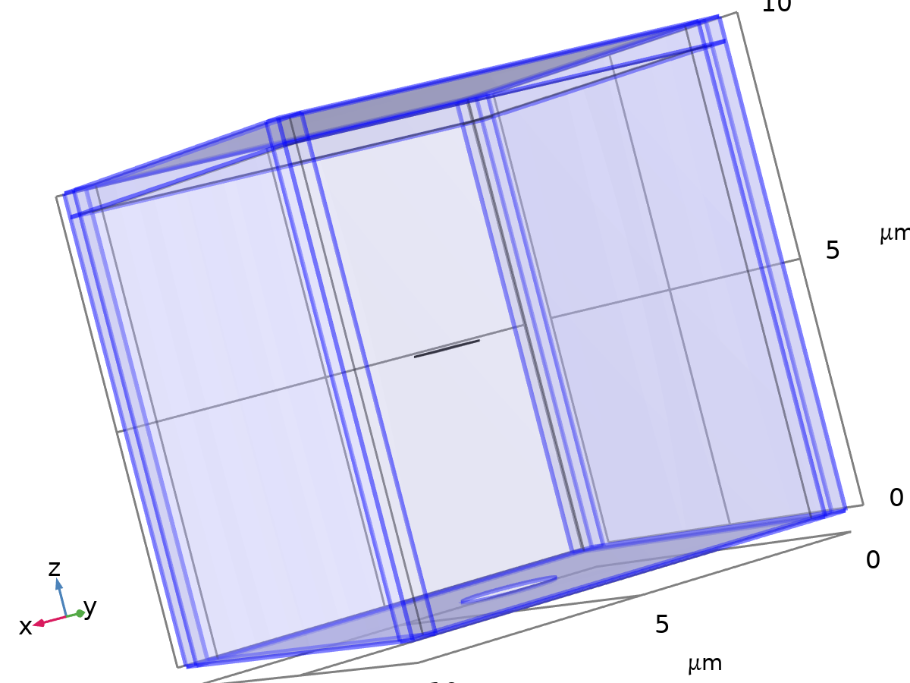
| 几何实体层 | 边界 |
| 选择 | 几何 geom1: 尺寸标注 2: 所有边界 |
| COMSOL Multiphysics |

| 几何实体层 | 域 |
| 选择 | 几何 geom1: 尺寸标注 3: 所有域 |
| Description | Value | Unit |
|---|---|---|
| 声压 | 0 | Pa |
| COMSOL Multiphysics |
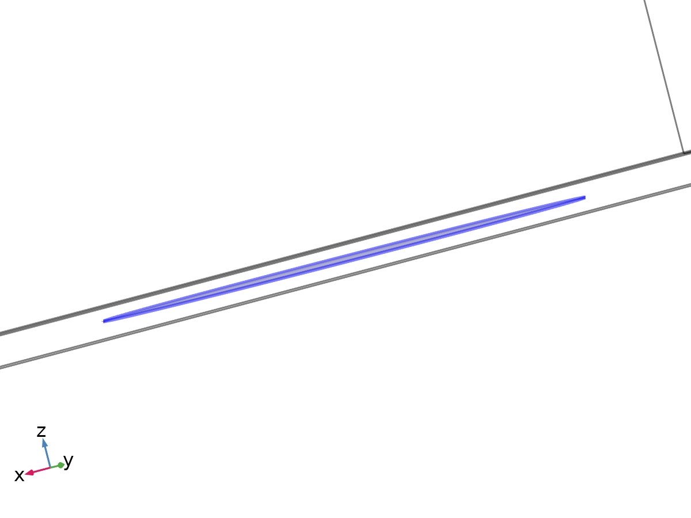
| 几何实体层 | 边界 |
| 选择 | 几何 geom1: 尺寸标注 2: 边界 47 |
| Description | Value | Unit |
|---|---|---|
| 类型 | 向内位移 | |
| 向内位移 | 1E-4 | m |
| 名称 | 表达式 | 单位 | 描述 | 选择 | 详细信息 |
|---|---|---|---|---|---|
| acpr.v_bndx | -treatasconst(acpr.nx)*acpr.ndisp1.ndisp*acpr.iomega | m/s | 驱动边界速度，x 分量 | 边界 47 | “+”操作 |
| acpr.v_bndy | -treatasconst(acpr.ny)*acpr.ndisp1.ndisp*acpr.iomega | m/s | 驱动边界速度，y 分量 | 边界 47 | “+”操作 |
| acpr.v_bndz | -treatasconst(acpr.nz)*acpr.ndisp1.ndisp*acpr.iomega | m/s | 驱动边界速度，z 分量 | 边界 47 | “+”操作 |
| acpr.nacc | acpr.iomega^2*acpr.ndisp1.ndisp | m/s² | 向内加速度（源） | 边界 47 | “+”操作 |
| acpr.ndisp1.ndisp | 1.0E-4 | m | 向内位移（源） | 边界 47 | |
| acpr.ndisp1.area | acpr.ndisp1.int(1) | m² | 表面积 | 边界 47 | Meta |
| acpr.Zn_ac | acpr.iomega*acpr.ndisp1.int(acpr.p_t)/(acpr.ndisp1.int(acpr.nacc)*acpr.ndisp1.area) | kg/(m⁴·s) | 法向声阻抗 | 边界 47 | |
| acpr.Zn | acpr.iomega*acpr.p_t/acpr.nacc | Pa·s/m | 法向比声阻抗 | 边界 47 |
| 弱表达式 | 积分阶次 | 积分坐标系 | 选择 |
|---|---|---|---|
| acpr.iomega^2*acpr.ndisp1.ndisp*test(p)*acpr.delta | 4 | 空间 | 边界 47 |
| 声学模块 |
| COMSOL Multiphysics |

| 几何实体层 | 域 |
| 选择 | 几何 geom1: 尺寸标注 3: 域 13 |
| Description | Value |
|---|---|
| 启用物理符号 | 关 |
| Description | Value |
|---|---|
| 位移场 | 二次巧凑边点单元 |
| Description | Value |
|---|---|
| 结构瞬态特性 | 包含惯性项 |
| Description | Value |
|---|---|
| Description | 对这些设置所作的更改仅在生成默认求解器时才生效。 |
| 要求解的最大频率 | 关 |
| Description | Value | Unit |
|---|---|---|
| 完美匹配层的典型波速 | solid.cp | m/s |
| Description | Value |
|---|---|
| 端口扫描设置 | 无端口扫描 |
| 名称 | 表达式 | 单位 | 描述 | 选择 | 详细信息 |
|---|---|---|---|---|---|
| solid.X | X | m | 材料坐标，X 分量 | 域 13 | |
| solid.Y | Y | m | 材料坐标，Y 分量 | 域 13 | |
| solid.Z | Z | m | 材料坐标，Z 分量 | 域 13 | |
| solid.X | X | m | 材料坐标，X 分量 | 边界 48–53 | |
| solid.Y | Y | m | 材料坐标，Y 分量 | 边界 48–53 | |
| solid.Z | Z | m | 材料坐标，Z 分量 | 边界 48–53 | |
| solid.x | x | m | 空间坐标，x 分量 | 域 13 | |
| solid.y | y | m | 空间坐标，y 分量 | 域 13 | |
| solid.z | z | m | 空间坐标，z 分量 | 域 13 | |
| solid.x | x | m | 空间坐标，x 分量 | 边界 48–53 | |
| solid.y | y | m | 空间坐标，y 分量 | 边界 48–53 | |
| solid.z | z | m | 空间坐标，z 分量 | 边界 48–53 | |
| solid.uf | u | m | 位移场，X 分量 | 域 13 | |
| solid.vf | v | m | 位移场，Y 分量 | 域 13 | |
| solid.wf | w | m | 位移场，Z 分量 | 域 13 | |
| solid.uf | u | m | 位移场，X 分量 | 边界 48–53 | |
| solid.vf | v | m | 位移场，Y 分量 | 边界 48–53 | |
| solid.wf | w | m | 位移场，Z 分量 | 边界 48–53 | |
| solid.nX | dnX | 1 | 法矢，X 分量 | 边界 48–53 | |
| solid.nY | dnY | 1 | 法矢，Y 分量 | 边界 48–53 | |
| solid.nZ | dnZ | 1 | 法矢，Z 分量 | 边界 48–53 | |
| solid.nx | dnx | 1 | 法矢，x 分量 | 边界 48–53 | |
| solid.ny | dny | 1 | 法矢，y 分量 | 边界 48–53 | |
| solid.nz | dnz | 1 | 法矢，z 分量 | 边界 48–53 | |
| solid.nXmesh | dnXmesh | 1 | 法矢（网格），X 分量 | 边界 48–53 | |
| solid.nYmesh | dnYmesh | 1 | 法矢（网格），Y 分量 | 边界 48–53 | |
| solid.nZmesh | dnZmesh | 1 | 法矢（网格），Z 分量 | 边界 48–53 | |
| solid.nxmesh | dnxmesh | 1 | 法矢（网格），x 分量 | 边界 48–53 | |
| solid.nymesh | dnymesh | 1 | 法矢（网格），y 分量 | 边界 48–53 | |
| solid.nzmesh | dnzmesh | 1 | 法矢（网格），z 分量 | 边界 48–53 | |
| solid.Q_freq | 2*solid.omega*solid.Wh_tot/if(solid.Qh_tot==0,eps,solid.Qh_tot) | 1 | 频率品质因子 | 全局 | |
| solid.cref | solid.cp | m/s | 完美匹配层的典型波速 | 域 13 | |
| solid.isGeomNon | 0 | 1 | 几何非线性变量 | 全局 | |
| solid.Wh_tot | 0 | J | 总储能 | 全局 | “+”操作 |
| solid.Wl_tot | 0 | J | 外加载荷的总势能 | 全局 | “+”操作 |
| solid.W_tot | solid.Wh_tot+solid.Wl_tot | J | 总势能 | 全局 | “+”操作 |
| solid.freq | freq | Hz | 频率 | 全局 | |
| solid.omega | 2*pi*solid.freq | rad/s | 角频率 | 全局 | |
| solid.activation_multiplier | 1 | 1 | 激活乘数 | 域 13 | |
| solid.geomsize | 1.7320508075688774E-5 | m | 边框 | 全局 | |
| solid.timestep | 0 | s | 时步 | 全局 | |
| solid.RFtotalx | solid.sumreaction(solid.RFx)+solid.RFfsx+solid.RFfdx | N | 总反作用力，x 分量 | 全局 | “+”操作 |
| solid.RFtotaly | solid.sumreaction(solid.RFy)+solid.RFfsy+solid.RFfdy | N | 总反作用力，y 分量 | 全局 | “+”操作 |
| solid.RFtotalz | solid.sumreaction(solid.RFz)+solid.RFfsz+solid.RFfdz | N | 总反作用力，z 分量 | 全局 | “+”操作 |
| solid.RMtotalx | solid.sumreaction(solid.RMx)+solid.RMmsx+solid.RMmdx | N·m | 总反作用力矩，x 分量 | 全局 | “+”操作 |
| solid.RMtotaly | solid.sumreaction(solid.RMy)+solid.RMmsy+solid.RMmdy | N·m | 总反作用力矩，y 分量 | 全局 | “+”操作 |
| solid.RMtotalz | solid.sumreaction(solid.RMz)+solid.RMmsz+solid.RMmdz | N·m | 总反作用力矩，z 分量 | 全局 | “+”操作 |
| solid.beta_dK | 0 | s | 刚度阻尼参数 | 域 13 | “+”操作 |
| xt | d(x,TIME) | m/s | 网格速度，x 分量 | 全局 | |
| yt | d(y,TIME) | m/s | 网格速度，y 分量 | 全局 | |
| zt | d(z,TIME) | m/s | 网格速度，z 分量 | 全局 | |
| solid.iomega | solid.omega*i | rad/s | 复角频率 | 全局 |

| 几何实体层 | 域 |
| 选择 | 几何 geom1: 尺寸标注 3: 所有域 |
| Description | Value |
|---|---|
| 材料对称性 | 各向同性 |
| 指定 | 杨氏模量和泊松比 |
| 杨氏模量 | 来自材料 |
| 泊松比 | 来自材料 |
| 密度 | 来自材料 |
| 使用混合公式 | 无 |
| Description | Value |
|---|---|
| 公式 | 来自研究步骤 |
| 应变分解 | 自动 |
| Description | Value |
|---|---|
| 减缩积分 | 关 |
| Description | Value |
|---|---|
| 坐标系 | 全局坐标系 |
| COMSOL Multiphysics |
| 属性 | 材料 | 属性组 |
|---|---|---|
| 杨氏模量 | PDMS - Polydimethylsiloxane | Young's modulus and Poisson's ratio |
| 泊松比 | PDMS - Polydimethylsiloxane | Young's modulus and Poisson's ratio |
| 密度 | PDMS - Polydimethylsiloxane | Basic |
| 名称 | 表达式 | 单位 | 描述 | 选择 | 详细信息 |
|---|---|---|---|---|---|
| solid.disp | sqrteps(real(u)^2+real(v)^2+real(w)^2) | m | 位移大小 | 域 13 | |
| solid.disp_rms | sqrt(0.5*(realdot(u,u)+realdot(v,v)+realdot(w,w))) | m | 位移均方根 | 域 13 | |
| solid.curlUX | solid.gradUzY-solid.gradUyZ | 1 | 位移旋度，X 分量 | 域 13 | |
| solid.curlUY | solid.gradUxZ-solid.gradUzX | 1 | 位移旋度，Y 分量 | 域 13 | |
| solid.curlUZ | solid.gradUyX-solid.gradUxY | 1 | 位移旋度，Z 分量 | 域 13 | |
| solid.gradUxX | uX | 1 | 位移梯度，xX 分量 | 域 13 | |
| solid.gradUyX | vX | 1 | 位移梯度，yX 分量 | 域 13 | |
| solid.gradUzX | wX | 1 | 位移梯度，zX 分量 | 域 13 | |
| solid.gradUxY | uY | 1 | 位移梯度，xY 分量 | 域 13 | |
| solid.gradUyY | vY | 1 | 位移梯度，yY 分量 | 域 13 | |
| solid.gradUzY | wY | 1 | 位移梯度，zY 分量 | 域 13 | |
| solid.gradUxZ | uZ | 1 | 位移梯度，xZ 分量 | 域 13 | |
| solid.gradUyZ | vZ | 1 | 位移梯度，yZ 分量 | 域 13 | |
| solid.gradUzZ | wZ | 1 | 位移梯度，zZ 分量 | 域 13 | |
| solid.FdxX | 1+solid.gradUxX | 1 | 变形梯度，xX 分量 | 域 13 | |
| solid.FdyX | solid.gradUyX | 1 | 变形梯度，yX 分量 | 域 13 | |
| solid.FdzX | solid.gradUzX | 1 | 变形梯度，zX 分量 | 域 13 | |
| solid.FdxY | solid.gradUxY | 1 | 变形梯度，xY 分量 | 域 13 | |
| solid.FdyY | 1+solid.gradUyY | 1 | 变形梯度，yY 分量 | 域 13 | |
| solid.FdzY | solid.gradUzY | 1 | 变形梯度，zY 分量 | 域 13 | |
| solid.FdxZ | solid.gradUxZ | 1 | 变形梯度，xZ 分量 | 域 13 | |
| solid.FdyZ | solid.gradUyZ | 1 | 变形梯度，yZ 分量 | 域 13 | |
| solid.FdzZ | 1+solid.gradUzZ | 1 | 变形梯度，zZ 分量 | 域 13 | |
| solid.FdiXx | (solid.FdyY*solid.FdzZ-solid.FdyZ*solid.FdzY)/solid.J | 1 | 变形梯度逆，Xx 分量 | 域 13 | |
| solid.FdiYx | (solid.FdyZ*solid.FdzX-solid.FdyX*solid.FdzZ)/solid.J | 1 | 变形梯度逆，Yx 分量 | 域 13 | |
| solid.FdiZx | (solid.FdyX*solid.FdzY-solid.FdyY*solid.FdzX)/solid.J | 1 | 变形梯度逆，Zx 分量 | 域 13 | |
| solid.FdiXy | (solid.FdxZ*solid.FdzY-solid.FdxY*solid.FdzZ)/solid.J | 1 | 变形梯度逆，Xy 分量 | 域 13 | |
| solid.FdiYy | (solid.FdxX*solid.FdzZ-solid.FdxZ*solid.FdzX)/solid.J | 1 | 变形梯度逆，Yy 分量 | 域 13 | |
| solid.FdiZy | (solid.FdxY*solid.FdzX-solid.FdxX*solid.FdzY)/solid.J | 1 | 变形梯度逆，Zy 分量 | 域 13 | |
| solid.FdiXz | (solid.FdxY*solid.FdyZ-solid.FdxZ*solid.FdyY)/solid.J | 1 | 变形梯度逆，Xz 分量 | 域 13 | |
| solid.FdiYz | (solid.FdxZ*solid.FdyX-solid.FdxX*solid.FdyZ)/solid.J | 1 | 变形梯度逆，Yz 分量 | 域 13 | |
| solid.FdiZz | (solid.FdxX*solid.FdyY-solid.FdxY*solid.FdyX)/solid.J | 1 | 变形梯度逆，Zz 分量 | 域 13 | |
| solid.J | solid.FdxX*solid.FdyY*solid.FdzZ+solid.FdxY*solid.FdyZ*solid.FdzX+solid.FdxZ*solid.FdyX*solid.FdzY-solid.FdxX*solid.FdyZ*solid.FdzY-solid.FdxY*solid.FdyX*solid.FdzZ-solid.FdxZ*solid.FdyY*solid.FdzX | 1 | 体积比 | 域 13 | |
| solid.detF | solid.FdxX*solid.FdyY*solid.FdzZ+solid.FdxY*solid.FdyZ*solid.FdzX+solid.FdxZ*solid.FdyX*solid.FdzY-solid.FdxX*solid.FdyZ*solid.FdzY-solid.FdxY*solid.FdyX*solid.FdzZ-solid.FdxZ*solid.FdyY*solid.FdzX | 1 | 体积比 | 域 13 | |
| solid.Fdlx1 | solid.FdxX | 1 | 变形梯度，局部，x1 分量 | 域 13 | |
| solid.Fdly1 | solid.FdyX | 1 | 变形梯度，局部，y1 分量 | 域 13 | |
| solid.Fdlz1 | solid.FdzX | 1 | 变形梯度，局部，z1 分量 | 域 13 | |
| solid.Fdlx2 | solid.FdxY | 1 | 变形梯度，局部，x2 分量 | 域 13 | |
| solid.Fdly2 | solid.FdyY | 1 | 变形梯度，局部，y2 分量 | 域 13 | |
| solid.Fdlz2 | solid.FdzY | 1 | 变形梯度，局部，z2 分量 | 域 13 | |
| solid.Fdlx3 | solid.FdxZ | 1 | 变形梯度，局部，x3 分量 | 域 13 | |
| solid.Fdly3 | solid.FdyZ | 1 | 变形梯度，局部，y3 分量 | 域 13 | |
| solid.Fdlz3 | solid.FdzZ | 1 | 变形梯度，局部，z3 分量 | 域 13 | |
| solid.Fdil1x | (solid.Fdly2*solid.Fdlz3-solid.Fdly3*solid.Fdlz2)/solid.J | 1 | 变形梯度逆，局部坐标系，1x 分量 | 域 13 | |
| solid.Fdil2x | (solid.Fdly3*solid.Fdlz1-solid.Fdly1*solid.Fdlz3)/solid.J | 1 | 变形梯度逆，局部坐标系，2x 分量 | 域 13 | |
| solid.Fdil3x | (solid.Fdly1*solid.Fdlz2-solid.Fdly2*solid.Fdlz1)/solid.J | 1 | 变形梯度逆，局部坐标系，3x 分量 | 域 13 | |
| solid.Fdil1y | (solid.Fdlx3*solid.Fdlz2-solid.Fdlx2*solid.Fdlz3)/solid.J | 1 | 变形梯度逆，局部坐标系，1y 分量 | 域 13 | |
| solid.Fdil2y | (solid.Fdlx1*solid.Fdlz3-solid.Fdlx3*solid.Fdlz1)/solid.J | 1 | 变形梯度逆，局部坐标系，2y 分量 | 域 13 | |
| solid.Fdil3y | (solid.Fdlx2*solid.Fdlz1-solid.Fdlx1*solid.Fdlz2)/solid.J | 1 | 变形梯度逆，局部坐标系，3y 分量 | 域 13 | |
| solid.Fdil1z | (solid.Fdlx2*solid.Fdly3-solid.Fdlx3*solid.Fdly2)/solid.J | 1 | 变形梯度逆，局部坐标系，1z 分量 | 域 13 | |
| solid.Fdil2z | (solid.Fdlx3*solid.Fdly1-solid.Fdlx1*solid.Fdly3)/solid.J | 1 | 变形梯度逆，局部坐标系，2z 分量 | 域 13 | |
| solid.Fdil3z | (solid.Fdlx1*solid.Fdly2-solid.Fdlx2*solid.Fdly1)/solid.J | 1 | 变形梯度逆，局部坐标系，3z 分量 | 域 13 | |
| solid.Ji | 1/(solid.Fiil11*solid.Fiil22*solid.Fiil33+solid.Fiil12*solid.Fiil23*solid.Fiil31+solid.Fiil13*solid.Fiil21*solid.Fiil32-solid.Fiil11*solid.Fiil23*solid.Fiil32-solid.Fiil12*solid.Fiil21*solid.Fiil33-solid.Fiil13*solid.Fiil22*solid.Fiil31) | 1 | 非弹性体积比 | 域 13 | |
| solid.Fil11 | (solid.Fiil22*solid.Fiil33-solid.Fiil23*solid.Fiil32)*solid.Ji | 1 | 非弹性变形梯度，局部坐标系，11 分量 | 域 13 | 矩阵乘法 |
| solid.Fil21 | (solid.Fiil23*solid.Fiil31-solid.Fiil21*solid.Fiil33)*solid.Ji | 1 | 非弹性变形梯度，局部坐标系，21 分量 | 域 13 | 矩阵乘法 |
| solid.Fil31 | (solid.Fiil21*solid.Fiil32-solid.Fiil22*solid.Fiil31)*solid.Ji | 1 | 非弹性变形梯度，局部坐标系，31 分量 | 域 13 | 矩阵乘法 |
| solid.Fil12 | (solid.Fiil13*solid.Fiil32-solid.Fiil12*solid.Fiil33)*solid.Ji | 1 | 非弹性变形梯度，局部坐标系，12 分量 | 域 13 | 矩阵乘法 |
| solid.Fil22 | (solid.Fiil11*solid.Fiil33-solid.Fiil13*solid.Fiil31)*solid.Ji | 1 | 非弹性变形梯度，局部坐标系，22 分量 | 域 13 | 矩阵乘法 |
| solid.Fil32 | (solid.Fiil12*solid.Fiil31-solid.Fiil11*solid.Fiil32)*solid.Ji | 1 | 非弹性变形梯度，局部坐标系，32 分量 | 域 13 | 矩阵乘法 |
| solid.Fil13 | (solid.Fiil12*solid.Fiil23-solid.Fiil13*solid.Fiil22)*solid.Ji | 1 | 非弹性变形梯度，局部坐标系，13 分量 | 域 13 | 矩阵乘法 |
| solid.Fil23 | (solid.Fiil13*solid.Fiil21-solid.Fiil11*solid.Fiil23)*solid.Ji | 1 | 非弹性变形梯度，局部坐标系，23 分量 | 域 13 | 矩阵乘法 |
| solid.Fil33 | (solid.Fiil11*solid.Fiil22-solid.Fiil12*solid.Fiil21)*solid.Ji | 1 | 非弹性变形梯度，局部坐标系，33 分量 | 域 13 | 矩阵乘法 |
| solid.Fiil11 | 1 | 1 | 非弹性变形梯度逆，局部坐标系，11 分量 | 域 13 | 矩阵乘法 |
| solid.Fiil21 | 0 | 1 | 非弹性变形梯度逆，局部坐标系，21 分量 | 域 13 | 矩阵乘法 |
| solid.Fiil31 | 0 | 1 | 非弹性变形梯度逆，局部坐标系，31 分量 | 域 13 | 矩阵乘法 |
| solid.Fiil12 | 0 | 1 | 非弹性变形梯度逆，局部坐标系，12 分量 | 域 13 | 矩阵乘法 |
| solid.Fiil22 | 1 | 1 | 非弹性变形梯度逆，局部坐标系，22 分量 | 域 13 | 矩阵乘法 |
| solid.Fiil32 | 0 | 1 | 非弹性变形梯度逆，局部坐标系，32 分量 | 域 13 | 矩阵乘法 |
| solid.Fiil13 | 0 | 1 | 非弹性变形梯度逆，局部坐标系，13 分量 | 域 13 | 矩阵乘法 |
| solid.Fiil23 | 0 | 1 | 非弹性变形梯度逆，局部坐标系，23 分量 | 域 13 | 矩阵乘法 |
| solid.Fiil33 | 1 | 1 | 非弹性变形梯度逆，局部坐标系，33 分量 | 域 13 | 矩阵乘法 |
| solid.Jel | sqrt(solid.Cel11*solid.Cel22*solid.Cel33+2*solid.Cel12*solid.Cel23*solid.Cel13-solid.Cel11*solid.Cel23^2-solid.Cel12^2*solid.Cel33-solid.Cel22*solid.Cel13^2) | 1 | 弹性体积比 | 域 13 | |
| solid.CXX | solid.FdxX^2+solid.FdyX^2+solid.FdzX^2 | 1 | 柯西-格林张量，XX 分量 | 域 13 | |
| solid.CXY | solid.FdxX*solid.FdxY+solid.FdyX*solid.FdyY+solid.FdzX*solid.FdzY | 1 | 柯西-格林张量，XY 分量 | 域 13 | |
| solid.CXZ | solid.FdxX*solid.FdxZ+solid.FdyX*solid.FdyZ+solid.FdzX*solid.FdzZ | 1 | 柯西-格林张量，XZ 分量 | 域 13 | |
| solid.CYY | solid.FdxY^2+solid.FdyY^2+solid.FdzY^2 | 1 | 柯西-格林张量，YY 分量 | 域 13 | |
| solid.CYZ | solid.FdxY*solid.FdxZ+solid.FdyY*solid.FdyZ+solid.FdzY*solid.FdzZ | 1 | 柯西-格林张量，YZ 分量 | 域 13 | |
| solid.CZZ | solid.FdxZ^2+solid.FdyZ^2+solid.FdzZ^2 | 1 | 柯西-格林张量，ZZ 分量 | 域 13 | |
| solid.Cl11 | 1+2*solid.el11 | 1 | 柯西-格林张量，局部坐标系，11 分量 | 域 13 | |
| solid.Cl12 | 2*solid.el12 | 1 | 柯西-格林张量，局部坐标系，12 分量 | 域 13 | |
| solid.Cl13 | 2*solid.el13 | 1 | 柯西-格林张量，局部坐标系，13 分量 | 域 13 | |
| solid.Cl22 | 1+2*solid.el22 | 1 | 柯西-格林张量，局部坐标系，22 分量 | 域 13 | |
| solid.Cl23 | 2*solid.el23 | 1 | 柯西-格林张量，局部坐标系，23 分量 | 域 13 | |
| solid.Cl33 | 1+2*solid.el33 | 1 | 柯西-格林张量，局部坐标系，33 分量 | 域 13 | |
| solid.Cel11 | solid.FiilCl11*solid.Fiil11+solid.FiilCl12*solid.Fiil21+solid.FiilCl13*solid.Fiil31 | 1 | 弹性柯西-格林张量，局部坐标系，11 分量 | 域 13 | |
| solid.Cel12 | solid.FiilCl11*solid.Fiil12+solid.FiilCl12*solid.Fiil22+solid.FiilCl13*solid.Fiil32 | 1 | 弹性柯西-格林张量，局部坐标系，12 分量 | 域 13 | |
| solid.Cel13 | solid.FiilCl11*solid.Fiil13+solid.FiilCl12*solid.Fiil23+solid.FiilCl13*solid.Fiil33 | 1 | 弹性柯西-格林张量，局部坐标系，13 分量 | 域 13 | |
| solid.Cel22 | solid.FiilCl21*solid.Fiil12+solid.FiilCl22*solid.Fiil22+solid.FiilCl23*solid.Fiil32 | 1 | 弹性柯西-格林张量，局部坐标系，22 分量 | 域 13 | |
| solid.Cel23 | solid.FiilCl21*solid.Fiil13+solid.FiilCl22*solid.Fiil23+solid.FiilCl23*solid.Fiil33 | 1 | 弹性柯西-格林张量，局部坐标系，23 分量 | 域 13 | |
| solid.Cel33 | solid.FiilCl31*solid.Fiil13+solid.FiilCl32*solid.Fiil23+solid.FiilCl33*solid.Fiil33 | 1 | 弹性柯西-格林张量，局部坐标系，33 分量 | 域 13 | |
| solid.Ceil11 | (solid.Cel22*solid.Cel33-solid.Cel23^2)/(solid.Cel11*solid.Cel22*solid.Cel33+2*solid.Cel12*solid.Cel23*solid.Cel13-solid.Cel11*solid.Cel23^2-solid.Cel12^2*solid.Cel33-solid.Cel22*solid.Cel13^2) | 1 | 弹性柯西-格林张量逆，局部坐标系，11 分量 | 域 13 | |
| solid.Ceil12 | (solid.Cel23*solid.Cel13-solid.Cel12*solid.Cel33)/(solid.Cel11*solid.Cel22*solid.Cel33+2*solid.Cel12*solid.Cel23*solid.Cel13-solid.Cel11*solid.Cel23^2-solid.Cel12^2*solid.Cel33-solid.Cel22*solid.Cel13^2) | 1 | 弹性柯西-格林张量逆，局部坐标系，12 分量 | 域 13 | |
| solid.Ceil13 | (solid.Cel12*solid.Cel23-solid.Cel22*solid.Cel13)/(solid.Cel11*solid.Cel22*solid.Cel33+2*solid.Cel12*solid.Cel23*solid.Cel13-solid.Cel11*solid.Cel23^2-solid.Cel12^2*solid.Cel33-solid.Cel22*solid.Cel13^2) | 1 | 弹性柯西-格林张量逆，局部坐标系，13 分量 | 域 13 | |
| solid.Ceil22 | (solid.Cel11*solid.Cel33-solid.Cel13^2)/(solid.Cel11*solid.Cel22*solid.Cel33+2*solid.Cel12*solid.Cel23*solid.Cel13-solid.Cel11*solid.Cel23^2-solid.Cel12^2*solid.Cel33-solid.Cel22*solid.Cel13^2) | 1 | 弹性柯西-格林张量逆，局部坐标系，22 分量 | 域 13 | |
| solid.Ceil23 | (solid.Cel12*solid.Cel13-solid.Cel11*solid.Cel23)/(solid.Cel11*solid.Cel22*solid.Cel33+2*solid.Cel12*solid.Cel23*solid.Cel13-solid.Cel11*solid.Cel23^2-solid.Cel12^2*solid.Cel33-solid.Cel22*solid.Cel13^2) | 1 | 弹性柯西-格林张量逆，局部坐标系，23 分量 | 域 13 | |
| solid.Ceil33 | (solid.Cel11*solid.Cel22-solid.Cel12^2)/(solid.Cel11*solid.Cel22*solid.Cel33+2*solid.Cel12*solid.Cel23*solid.Cel13-solid.Cel11*solid.Cel23^2-solid.Cel12^2*solid.Cel33-solid.Cel22*solid.Cel13^2) | 1 | 弹性柯西-格林张量逆，局部坐标系，33 分量 | 域 13 | |
| solid.eXX | solid.gradUxX | 1 | 应变张量，XX 分量 | 域 13 | “+”操作 |
| solid.eXY | 0.5*(solid.gradUxY+solid.gradUyX) | 1 | 应变张量，XY 分量 | 域 13 | “+”操作 |
| solid.eXZ | 0.5*(solid.gradUxZ+solid.gradUzX) | 1 | 应变张量，XZ 分量 | 域 13 | “+”操作 |
| solid.eYY | solid.gradUyY | 1 | 应变张量，YY 分量 | 域 13 | “+”操作 |
| solid.eYZ | 0.5*(solid.gradUyZ+solid.gradUzY) | 1 | 应变张量，YZ 分量 | 域 13 | “+”操作 |
| solid.eZZ | solid.gradUzZ | 1 | 应变张量，ZZ 分量 | 域 13 | “+”操作 |
| solid.el11 | solid.eXX | 1 | 应变张量，局部坐标系，11 分量 | 域 13 | “+”操作 |
| solid.el12 | solid.eXY | 1 | 应变张量，局部坐标系，12 分量 | 域 13 | “+”操作 |
| solid.el13 | solid.eXZ | 1 | 应变张量，局部坐标系，13 分量 | 域 13 | “+”操作 |
| solid.el22 | solid.eYY | 1 | 应变张量，局部坐标系，22 分量 | 域 13 | “+”操作 |
| solid.el23 | solid.eYZ | 1 | 应变张量，局部坐标系，23 分量 | 域 13 | “+”操作 |
| solid.el33 | solid.eZZ | 1 | 应变张量，局部坐标系，33 分量 | 域 13 | “+”操作 |
| solid.evol | solid.eXX+solid.eYY+solid.eZZ | 1 | 体积应变 | 域 13 | |
| solid.eldev11 | solid.el11-solid.evol/3 | 1 | 偏应变张量，局部坐标系，11 分量 | 域 13 | |
| solid.eldev12 | solid.el12 | 1 | 偏应变张量，局部坐标系，12 分量 | 域 13 | |
| solid.eldev13 | solid.el13 | 1 | 偏应变张量，局部坐标系，13 分量 | 域 13 | |
| solid.eldev22 | solid.el22-solid.evol/3 | 1 | 偏应变张量，局部坐标系，22 分量 | 域 13 | |
| solid.eldev23 | solid.el23 | 1 | 偏应变张量，局部坐标系，23 分量 | 域 13 | |
| solid.eldev33 | solid.el33-solid.evol/3 | 1 | 偏应变张量，局部坐标系，33 分量 | 域 13 | |
| solid.edeve | sqrt(2*(solid.eldev11^2+2*solid.eldev12^2+2*solid.eldev13^2+solid.eldev22^2+2*solid.eldev23^2+solid.eldev33^2)/3+eps^2) | 1 | 等效偏应变 | 域 13 | |
| solid.eeXX | solid.eel11 | 1 | 弹性应变张量，XX 分量 | 域 13 | |
| solid.eeXY | solid.eel12 | 1 | 弹性应变张量，XY 分量 | 域 13 | |
| solid.eeXZ | solid.eel13 | 1 | 弹性应变张量，XZ 分量 | 域 13 | |
| solid.eeYY | solid.eel22 | 1 | 弹性应变张量，YY 分量 | 域 13 | |
| solid.eeYZ | solid.eel23 | 1 | 弹性应变张量，YZ 分量 | 域 13 | |
| solid.eeZZ | solid.eel33 | 1 | 弹性应变张量，ZZ 分量 | 域 13 | |
| solid.eel11 | solid.el11-solid.eiel11 | 1 | 弹性应变张量，局部坐标系，11 分量 | 域 13 | |
| solid.eel12 | solid.el12-solid.eiel12 | 1 | 弹性应变张量，局部坐标系，12 分量 | 域 13 | |
| solid.eel13 | solid.el13-solid.eiel13 | 1 | 弹性应变张量，局部坐标系，13 分量 | 域 13 | |
| solid.eel22 | solid.el22-solid.eiel22 | 1 | 弹性应变张量，局部坐标系，22 分量 | 域 13 | |
| solid.eel23 | solid.el23-solid.eiel23 | 1 | 弹性应变张量，局部坐标系，23 分量 | 域 13 | |
| solid.eel33 | solid.el33-solid.eiel33 | 1 | 弹性应变张量，局部坐标系，33 分量 | 域 13 | |
| solid.eeldev11 | solid.eel11-(solid.eel11+solid.eel22+solid.eel33)/3 | 1 | 偏弹性应变张量，局部坐标系，11 分量 | 域 13 | |
| solid.eeldev12 | solid.eel12 | 1 | 偏弹性应变张量，局部坐标系，12 分量 | 域 13 | |
| solid.eeldev13 | solid.eel13 | 1 | 偏弹性应变张量，局部坐标系，13 分量 | 域 13 | |
| solid.eeldev22 | solid.eel22-(solid.eel11+solid.eel22+solid.eel33)/3 | 1 | 偏弹性应变张量，局部坐标系，22 分量 | 域 13 | |
| solid.eeldev23 | solid.eel23 | 1 | 偏弹性应变张量，局部坐标系，23 分量 | 域 13 | |
| solid.eeldev33 | solid.eel33-(solid.eel11+solid.eel22+solid.eel33)/3 | 1 | 偏弹性应变张量，局部坐标系，33 分量 | 域 13 | |
| solid.eelvol | solid.eel11+solid.eel22+solid.eel33 | 1 | 体积弹性应变 | 域 13 | |
| solid.eil11 | 0 | 1 | 初始应变张量，局部坐标系，11 分量 | 域 13 | “+”操作 |
| solid.eil12 | 0 | 1 | 初始应变张量，局部坐标系，12 分量 | 域 13 | “+”操作 |
| solid.eil13 | 0 | 1 | 初始应变张量，局部坐标系，13 分量 | 域 13 | “+”操作 |
| solid.eil22 | 0 | 1 | 初始应变张量，局部坐标系，22 分量 | 域 13 | “+”操作 |
| solid.eil23 | 0 | 1 | 初始应变张量，局部坐标系，23 分量 | 域 13 | “+”操作 |
| solid.eil33 | 0 | 1 | 初始应变张量，局部坐标系，33 分量 | 域 13 | “+”操作 |
| solid.eiel11 | 0 | 1 | 非弹性应变张量，局部坐标系，11 分量 | 域 13 | “+”操作 |
| solid.eiel12 | 0 | 1 | 非弹性应变张量，局部坐标系，12 分量 | 域 13 | “+”操作 |
| solid.eiel13 | 0 | 1 | 非弹性应变张量，局部坐标系，13 分量 | 域 13 | “+”操作 |
| solid.eiel22 | 0 | 1 | 非弹性应变张量，局部坐标系，22 分量 | 域 13 | “+”操作 |
| solid.eiel23 | 0 | 1 | 非弹性应变张量，局部坐标系，23 分量 | 域 13 | “+”操作 |
| solid.eiel33 | 0 | 1 | 非弹性应变张量，局部坐标系，33 分量 | 域 13 | “+”操作 |
| solid.II2eel | 0.5*(solid.eeldev11^2+2*solid.eeldev12^2+2*solid.eeldev13^2+solid.eeldev22^2+2*solid.eeldev23^2+solid.eeldev33^2) | 1 | 偏弹性应变张量的第二不变量 | 域 13 | |
| solid.eeGpXX | solid.gpeval(solid.eeXX) | 1 | 弹性应变张量，XX 分量 | 域 13 | |
| solid.eeGpXY | solid.gpeval(solid.eeXY) | 1 | 弹性应变张量，XY 分量 | 域 13 | |
| solid.eeGpXZ | solid.gpeval(solid.eeXZ) | 1 | 弹性应变张量，XZ 分量 | 域 13 | |
| solid.eeGpYY | solid.gpeval(solid.eeYY) | 1 | 弹性应变张量，YY 分量 | 域 13 | |
| solid.eeGpYZ | solid.gpeval(solid.eeYZ) | 1 | 弹性应变张量，YZ 分量 | 域 13 | |
| solid.eeGpZZ | solid.gpeval(solid.eeZZ) | 1 | 弹性应变张量，ZZ 分量 | 域 13 | |
| solid.eelGp11 | solid.gpeval(solid.eel11) | 1 | 弹性应变张量，局部坐标系，11 分量 | 域 13 | |
| solid.eelGp12 | solid.gpeval(solid.eel12) | 1 | 弹性应变张量，局部坐标系，12 分量 | 域 13 | |
| solid.eelGp13 | solid.gpeval(solid.eel13) | 1 | 弹性应变张量，局部坐标系，13 分量 | 域 13 | |
| solid.eelGp22 | solid.gpeval(solid.eel22) | 1 | 弹性应变张量，局部坐标系，22 分量 | 域 13 | |
| solid.eelGp23 | solid.gpeval(solid.eel23) | 1 | 弹性应变张量，局部坐标系，23 分量 | 域 13 | |
| solid.eelGp33 | solid.gpeval(solid.eel33) | 1 | 弹性应变张量，局部坐标系，33 分量 | 域 13 | |
| solid.eeldevGp11 | solid.gpeval(solid.eeldev11) | 1 | 偏弹性应变张量，局部坐标系，11 分量 | 域 13 | |
| solid.eeldevGp12 | solid.gpeval(solid.eeldev12) | 1 | 偏弹性应变张量，局部坐标系，12 分量 | 域 13 | |
| solid.eeldevGp13 | solid.gpeval(solid.eeldev13) | 1 | 偏弹性应变张量，局部坐标系，13 分量 | 域 13 | |
| solid.eeldevGp22 | solid.gpeval(solid.eeldev22) | 1 | 偏弹性应变张量，局部坐标系，22 分量 | 域 13 | |
| solid.eeldevGp23 | solid.gpeval(solid.eeldev23) | 1 | 偏弹性应变张量，局部坐标系，23 分量 | 域 13 | |
| solid.eeldevGp33 | solid.gpeval(solid.eeldev33) | 1 | 偏弹性应变张量，局部坐标系，33 分量 | 域 13 | |
| solid.eelvolGp | solid.gpeval(solid.eelvol) | 1 | 体积弹性应变 | 域 13 | |
| solid.eielGp11 | solid.gpeval(solid.eiel11) | 1 | 非弹性应变张量，局部坐标系，11 分量 | 域 13 | “+”操作 |
| solid.eielGp12 | solid.gpeval(solid.eiel12) | 1 | 非弹性应变张量，局部坐标系，12 分量 | 域 13 | “+”操作 |
| solid.eielGp13 | solid.gpeval(solid.eiel13) | 1 | 非弹性应变张量，局部坐标系，13 分量 | 域 13 | “+”操作 |
| solid.eielGp22 | solid.gpeval(solid.eiel22) | 1 | 非弹性应变张量，局部坐标系，22 分量 | 域 13 | “+”操作 |
| solid.eielGp23 | solid.gpeval(solid.eiel23) | 1 | 非弹性应变张量，局部坐标系，23 分量 | 域 13 | “+”操作 |
| solid.eielGp33 | solid.gpeval(solid.eiel33) | 1 | 非弹性应变张量，局部坐标系，33 分量 | 域 13 | “+”操作 |
| solid.II2eelGp | max(0,solid.gpeval(solid.II2eel)) | 1 | 偏弹性应变张量的第二不变量 | 域 13 | |
| solid.sxx | solid.SXX | N/m² | 应力张量，xx 分量 | 域 13 | |
| solid.sxy | solid.SXY | N/m² | 应力张量，xy 分量 | 域 13 | |
| solid.sxz | solid.SXZ | N/m² | 应力张量，xz 分量 | 域 13 | |
| solid.syy | solid.SYY | N/m² | 应力张量，yy 分量 | 域 13 | |
| solid.syz | solid.SYZ | N/m² | 应力张量，yz 分量 | 域 13 | |
| solid.szz | solid.SZZ | N/m² | 应力张量，zz 分量 | 域 13 | |
| solid.sl11 | solid.Sl11 | N/m² | 应力张量，局部坐标系，11 分量 | 域 13 | |
| solid.sl12 | solid.Sl12 | N/m² | 应力张量，局部坐标系，12 分量 | 域 13 | |
| solid.sl13 | solid.Sl13 | N/m² | 应力张量，局部坐标系，13 分量 | 域 13 | |
| solid.sl22 | solid.Sl22 | N/m² | 应力张量，局部坐标系，22 分量 | 域 13 | |
| solid.sl23 | solid.Sl23 | N/m² | 应力张量，局部坐标系，23 分量 | 域 13 | |
| solid.sl33 | solid.Sl33 | N/m² | 应力张量，局部坐标系，33 分量 | 域 13 | |
| solid.sdevxx | solid.sxx-(solid.sxx+solid.syy+solid.szz)/3 | N/m² | 偏应力张量，xx 分量 | 域 13 | |
| solid.sdevxy | solid.sxy | N/m² | 偏应力张量，xy 分量 | 域 13 | |
| solid.sdevxz | solid.sxz | N/m² | 偏应力张量，xz 分量 | 域 13 | |
| solid.sdevyy | solid.syy-(solid.sxx+solid.syy+solid.szz)/3 | N/m² | 偏应力张量，yy 分量 | 域 13 | |
| solid.sdevyz | solid.syz | N/m² | 偏应力张量，yz 分量 | 域 13 | |
| solid.sdevzz | solid.szz-(solid.sxx+solid.syy+solid.szz)/3 | N/m² | 偏应力张量，zz 分量 | 域 13 | |
| solid.sldev11 | solid.sl11-(solid.sl11+solid.sl22+solid.sl33)/3 | N/m² | 偏应力张量，局部坐标系，11 分量 | 域 13 | |
| solid.sldev12 | solid.sl12 | N/m² | 偏应力张量，局部坐标系，12 分量 | 域 13 | |
| solid.sldev13 | solid.sl13 | N/m² | 偏应力张量，局部坐标系，13 分量 | 域 13 | |
| solid.sldev22 | solid.sl22-(solid.sl11+solid.sl22+solid.sl33)/3 | N/m² | 偏应力张量，局部坐标系，22 分量 | 域 13 | |
| solid.sldev23 | solid.sl23 | N/m² | 偏应力张量，局部坐标系，23 分量 | 域 13 | |
| solid.sldev33 | solid.sl33-(solid.sl11+solid.sl22+solid.sl33)/3 | N/m² | 偏应力张量，局部坐标系，33 分量 | 域 13 | |
| solid.I1s | solid.sl11+solid.sl22+solid.sl33 | N/m² | 应力第一主不变量 | 域 13 | |
| solid.I2s | 0.5*(solid.I1s^2-solid.sl11^2-2*solid.sl12^2-2*solid.sl13^2-solid.sl22^2-2*solid.sl23^2-solid.sl33^2) | kg²/(m²·s⁴) | 应力第二主不变量 | 域 13 | |
| solid.I3s | solid.sl11*solid.sl22*solid.sl33+2*solid.sl12*solid.sl23*solid.sl13-solid.sl11*solid.sl23^2-solid.sl12^2*solid.sl33-solid.sl22*solid.sl13^2 | kg³/(m³·s⁶) | 应力第三主不变量 | 域 13 | |
| solid.II2s | 0.5*(real(solid.sldev11)^2+2*real(solid.sldev12)^2+2*real(solid.sldev13)^2+real(solid.sldev22)^2+2*real(solid.sldev23)^2+real(solid.sldev33)^2) | kg²/(m²·s⁴) | 应力偏量的第二不变量 | 域 13 | |
| solid.II3s | solid.sldev11*solid.sldev22*solid.sldev33+2*solid.sldev12*solid.sldev23*solid.sldev13-solid.sldev11*solid.sldev23^2-solid.sldev12^2*solid.sldev33-solid.sldev22*solid.sldev13^2 | kg³/(m³·s⁶) | 应力偏量的第三不变量 | 域 13 | |
| solid.svol | solid.I1s/3 | N/m² | 平均应力 | 域 13 | |
| solid.rdev | sqrt(2*solid.II2s+eps^2) | N/m² | 应力偏量的模 | 域 13 | |
| solid.thetaL | atan2(sqrt(max(0.14814814814814814*solid.II2s^3-solid.II3s^2,eps)),solid.II3s)/3 | rad | 洛德角 | 域 13 | |
| solid.Sel11 | solid.Seli11 | N/m² | 第二类皮奥拉-基尔霍夫弹性应力，局部坐标系，11 分量 | 域 13 | |
| solid.Sel12 | solid.Seli12 | N/m² | 第二类皮奥拉-基尔霍夫弹性应力，局部坐标系，12 分量 | 域 13 | |
| solid.Sel13 | solid.Seli13 | N/m² | 第二类皮奥拉-基尔霍夫弹性应力，局部坐标系，13 分量 | 域 13 | |
| solid.Sel22 | solid.Seli22 | N/m² | 第二类皮奥拉-基尔霍夫弹性应力，局部坐标系，22 分量 | 域 13 | |
| solid.Sel23 | solid.Seli23 | N/m² | 第二类皮奥拉-基尔霍夫弹性应力，局部坐标系，23 分量 | 域 13 | |
| solid.Sel33 | solid.Seli33 | N/m² | 第二类皮奥拉-基尔霍夫弹性应力，局部坐标系，33 分量 | 域 13 | |
| solid.Siel11 | 0 | N/m² | 第二类皮奥拉-基尔霍夫非弹性应力张量，局部坐标系，11 分量 | 域 13 | “+”操作 |
| solid.Siel12 | 0 | N/m² | 第二类皮奥拉-基尔霍夫非弹性应力张量，局部坐标系，12 分量 | 域 13 | “+”操作 |
| solid.Siel13 | 0 | N/m² | 第二类皮奥拉-基尔霍夫非弹性应力张量，局部坐标系，13 分量 | 域 13 | “+”操作 |
| solid.Siel22 | 0 | N/m² | 第二类皮奥拉-基尔霍夫非弹性应力张量，局部坐标系，22 分量 | 域 13 | “+”操作 |
| solid.Siel23 | 0 | N/m² | 第二类皮奥拉-基尔霍夫非弹性应力张量，局部坐标系，23 分量 | 域 13 | “+”操作 |
| solid.Siel33 | 0 | N/m² | 第二类皮奥拉-基尔霍夫非弹性应力张量，局部坐标系，33 分量 | 域 13 | “+”操作 |
| solid.SXX | solid.Sl11 | N/m² | 第二类皮奥拉-基尔霍夫应力，XX 分量 | 域 13 | |
| solid.SXY | solid.Sl12 | N/m² | 第二类皮奥拉-基尔霍夫应力，XY 分量 | 域 13 | |
| solid.SXZ | solid.Sl13 | N/m² | 第二类皮奥拉-基尔霍夫应力，XZ 分量 | 域 13 | |
| solid.SYY | solid.Sl22 | N/m² | 第二类皮奥拉-基尔霍夫应力，YY 分量 | 域 13 | |
| solid.SYZ | solid.Sl23 | N/m² | 第二类皮奥拉-基尔霍夫应力，YZ 分量 | 域 13 | |
| solid.SZZ | solid.Sl33 | N/m² | 第二类皮奥拉-基尔霍夫应力，ZZ 分量 | 域 13 | |
| solid.Sl11 | solid.Siel11+solid.Sel11 | N/m² | 第二类皮奥拉-基尔霍夫应力，局部坐标系，11 分量 | 域 13 | “+”操作 |
| solid.Sl12 | solid.Siel12+solid.Sel12 | N/m² | 第二类皮奥拉-基尔霍夫应力，局部坐标系，12 分量 | 域 13 | “+”操作 |
| solid.Sl13 | solid.Siel13+solid.Sel13 | N/m² | 第二类皮奥拉-基尔霍夫应力，局部坐标系，13 分量 | 域 13 | “+”操作 |
| solid.Sl22 | solid.Siel22+solid.Sel22 | N/m² | 第二类皮奥拉-基尔霍夫应力，局部坐标系，22 分量 | 域 13 | “+”操作 |
| solid.Sl23 | solid.Siel23+solid.Sel23 | N/m² | 第二类皮奥拉-基尔霍夫应力，局部坐标系，23 分量 | 域 13 | “+”操作 |
| solid.Sl33 | solid.Siel33+solid.Sel33 | N/m² | 第二类皮奥拉-基尔霍夫应力，局部坐标系，33 分量 | 域 13 | “+”操作 |
| solid.SdevXX | solid.SXX-(solid.SXX+solid.SYY+solid.SZZ)/3 | N/m² | 第二类皮奥拉-基尔霍夫偏应力，XX 分量 | 域 13 | |
| solid.SdevXY | solid.SXY | N/m² | 第二类皮奥拉-基尔霍夫偏应力，XY 分量 | 域 13 | |
| solid.SdevXZ | solid.SXZ | N/m² | 第二类皮奥拉-基尔霍夫偏应力，XZ 分量 | 域 13 | |
| solid.SdevYY | solid.SYY-(solid.SXX+solid.SYY+solid.SZZ)/3 | N/m² | 第二类皮奥拉-基尔霍夫偏应力，YY 分量 | 域 13 | |
| solid.SdevYZ | solid.SYZ | N/m² | 第二类皮奥拉-基尔霍夫偏应力，YZ 分量 | 域 13 | |
| solid.SdevZZ | solid.SZZ-(solid.SXX+solid.SYY+solid.SZZ)/3 | N/m² | 第二类皮奥拉-基尔霍夫偏应力，ZZ 分量 | 域 13 | |
| solid.Sldev11 | solid.Sl11-(solid.Sl11+solid.Sl22+solid.Sl33)/3 | N/m² | 第二类皮奥拉-基尔霍夫偏应力，局部坐标系，11 分量 | 域 13 | |
| solid.Sldev12 | solid.Sl12 | N/m² | 第二类皮奥拉-基尔霍夫偏应力，局部坐标系，12 分量 | 域 13 | |
| solid.Sldev13 | solid.Sl13 | N/m² | 第二类皮奥拉-基尔霍夫偏应力，局部坐标系，13 分量 | 域 13 | |
| solid.Sldev22 | solid.Sl22-(solid.Sl11+solid.Sl22+solid.Sl33)/3 | N/m² | 第二类皮奥拉-基尔霍夫偏应力，局部坐标系，22 分量 | 域 13 | |
| solid.Sldev23 | solid.Sl23 | N/m² | 第二类皮奥拉-基尔霍夫偏应力，局部坐标系，23 分量 | 域 13 | |
| solid.Sldev33 | solid.Sl33-(solid.Sl11+solid.Sl22+solid.Sl33)/3 | N/m² | 第二类皮奥拉-基尔霍夫偏应力，局部坐标系，33 分量 | 域 13 | |
| solid.PxX | solid.SXX | N/m² | 第一类皮奥拉-基尔霍夫应力，xX 分量 | 域 13 | |
| solid.PyX | solid.SXY | N/m² | 第一类皮奥拉-基尔霍夫应力，yX 分量 | 域 13 | |
| solid.PzX | solid.SXZ | N/m² | 第一类皮奥拉-基尔霍夫应力，zX 分量 | 域 13 | |
| solid.PxY | solid.SXY | N/m² | 第一类皮奥拉-基尔霍夫应力，xY 分量 | 域 13 | |
| solid.PyY | solid.SYY | N/m² | 第一类皮奥拉-基尔霍夫应力，yY 分量 | 域 13 | |
| solid.PzY | solid.SYZ | N/m² | 第一类皮奥拉-基尔霍夫应力，zY 分量 | 域 13 | |
| solid.PxZ | solid.SXZ | N/m² | 第一类皮奥拉-基尔霍夫应力，xZ 分量 | 域 13 | |
| solid.PyZ | solid.SYZ | N/m² | 第一类皮奥拉-基尔霍夫应力，yZ 分量 | 域 13 | |
| solid.PzZ | solid.SZZ | N/m² | 第一类皮奥拉-基尔霍夫应力，zZ 分量 | 域 13 | |
| solid.Sil11 | 0 | N/m² | 初始应力张量，局部坐标系，11 分量 | 域 13 | “+”操作 |
| solid.Sil12 | 0 | N/m² | 初始应力张量，局部坐标系，12 分量 | 域 13 | “+”操作 |
| solid.Sil13 | 0 | N/m² | 初始应力张量，局部坐标系，13 分量 | 域 13 | “+”操作 |
| solid.Sil22 | 0 | N/m² | 初始应力张量，局部坐标系，22 分量 | 域 13 | “+”操作 |
| solid.Sil23 | 0 | N/m² | 初始应力张量，局部坐标系，23 分量 | 域 13 | “+”操作 |
| solid.Sil33 | 0 | N/m² | 初始应力张量，局部坐标系，33 分量 | 域 13 | “+”操作 |
| solid.mises_peak | sqrteps(solid.lemm1.cvector1+solid.lemm1.cvector2+solid.lemm1.cvector3+solid.lemm1.cvector4+solid.lemm1.cvector5+solid.lemm1.cvector6+solid.lemm1.cvector7+solid.lemm1.cvector8+solid.lemm1.cvector9+sqrteps(solid.lemm1.avector1^2+solid.lemm1.avector1*solid.lemm1.avector2*cos(solid.lemm1.bvector1-solid.lemm1.bvector2)+solid.lemm1.avector1*solid.lemm1.avector3*cos(solid.lemm1.bvector1-solid.lemm1.bvector3)+solid.lemm1.avector1*solid.lemm1.avector4*cos(solid.lemm1.bvector1-solid.lemm1.bvector4)+solid.lemm1.avector1*solid.lemm1.avector5*cos(solid.lemm1.bvector1-solid.lemm1.bvector5)+solid.lemm1.avector1*solid.lemm1.avector6*cos(solid.lemm1.bvector1-solid.lemm1.bvector6)+solid.lemm1.avector1*solid.lemm1.avector7*cos(solid.lemm1.bvector1-solid.lemm1.bvector7)+solid.lemm1.avector1*solid.lemm1.avector8*cos(solid.lemm1.bvector1-solid.lemm1.bvector8)+solid.lemm1.avector1*solid.lemm1.avector9*cos(solid.lemm1.bvector1-solid.lemm1.bvector9)+solid.lemm1.avector2*solid.lemm1.avector1*cos(solid.lemm1.bvector2-solid.lemm1.bvector1)+solid.lemm1.avector2^2+solid.lemm1.avector2*solid.lemm1.avector3*cos(solid.lemm1.bvector2-solid.lemm1.bvector3)+solid.lemm1.avector2*solid.lemm1.avector4*cos(solid.lemm1.bvector2-solid.lemm1.bvector4)+solid.lemm1.avector2*solid.lemm1.avector5*cos(solid.lemm1.bvector2-solid.lemm1.bvector5)+solid.lemm1.avector2*solid.lemm1.avector6*cos(solid.lemm1.bvector2-solid.lemm1.bvector6)+solid.lemm1.avector2*solid.lemm1.avector7*cos(solid.lemm1.bvector2-solid.lemm1.bvector7)+solid.lemm1.avector2*solid.lemm1.avector8*cos(solid.lemm1.bvector2-solid.lemm1.bvector8)+solid.lemm1.avector2*solid.lemm1.avector9*cos(solid.lemm1.bvector2-solid.lemm1.bvector9)+solid.lemm1.avector3*solid.lemm1.avector1*cos(solid.lemm1.bvector3-solid.lemm1.bvector1)+solid.lemm1.avector3*solid.lemm1.avector2*cos(solid.lemm1.bvector3-solid.lemm1.bvector2)+solid.lemm1.avector3^2+solid.lemm1.avector3*solid.lemm1.avector4*cos(solid.lemm1.bvector3-solid.lemm1.bvector4)+solid.lemm1.avector3*solid.lemm1.avector5*cos(solid.lemm1.bvector3-solid.lemm1.bvector5)+solid.lemm1.avector3*solid.lemm1.avector6*cos(solid.lemm1.bvector3-solid.lemm1.bvector6)+solid.lemm1.avector3*solid.lemm1.avector7*cos(solid.lemm1.bvector3-solid.lemm1.bvector7)+solid.lemm1.avector3*solid.lemm1.avector8*cos(solid.lemm1.bvector3-solid.lemm1.bvector8)+solid.lemm1.avector3*solid.lemm1.avector9*cos(solid.lemm1.bvector3-solid.lemm1.bvector9)+solid.lemm1.avector4*solid.lemm1.avector1*cos(solid.lemm1.bvector4-solid.lemm1.bvector1)+solid.lemm1.avector4*solid.lemm1.avector2*cos(solid.lemm1.bvector4-solid.lemm1.bvector2)+solid.lemm1.avector4*solid.lemm1.avector3*cos(solid.lemm1.bvector4-solid.lemm1.bvector3)+solid.lemm1.avector4^2+solid.lemm1.avector4*solid.lemm1.avector5*cos(solid.lemm1.bvector4-solid.lemm1.bvector5)+solid.lemm1.avector4*solid.lemm1.avector6*cos(solid.lemm1.bvector4-solid.lemm1.bvector6)+solid.lemm1.avector4*solid.lemm1.avector7*cos(solid.lemm1.bvector4-solid.lemm1.bvector7)+solid.lemm1.avector4*solid.lemm1.avector8*cos(solid.lemm1.bvector4-solid.lemm1.bvector8)+solid.lemm1.avector4*solid.lemm1.avector9*cos(solid.lemm1.bvector4-solid.lemm1.bvector9)+solid.lemm1.avector5*solid.lemm1.avector1*cos(solid.lemm1.bvector5-solid.lemm1.bvector1)+solid.lemm1.avector5*solid.lemm1.avector2*cos(solid.lemm1.bvector5-solid.lemm1.bvector2)+solid.lemm1.avector5*solid.lemm1.avector3*cos(solid.lemm1.bvector5-solid.lemm1.bvector3)+solid.lemm1.avector5*solid.lemm1.avector4*cos(solid.lemm1.bvector5-solid.lemm1.bvector4)+solid.lemm1.avector5^2+solid.lemm1.avector5*solid.lemm1.avector6*cos(solid.lemm1.bvector5-solid.lemm1.bvector6)+solid.lemm1.avector5*solid.lemm1.avector7*cos(solid.lemm1.bvector5-solid.lemm1.bvector7)+solid.lemm1.avector5*solid.lemm1.avector8*cos(solid.lemm1.bvector5-solid.lemm1.bvector8)+solid.lemm1.avector5*solid.lemm1.avector9*cos(solid.lemm1.bvector5-solid.lemm1.bvector9)+solid.lemm1.avector6*solid.lemm1.avector1*cos(solid.lemm1.bvector6-solid.lemm1.bvector1)+solid.lemm1.avector6*solid.lemm1.avector2*cos(solid.lemm1.bvector6-solid.lemm1.bvector2)+solid.lemm1.avector6*solid.lemm1.avector3*cos(solid.lemm1.bvector6-solid.lemm1.bvector3)+solid.lemm1.avector6*solid.lemm1.avector4*cos(solid.lemm1.bvector6-solid.lemm1.bvector4)+solid.lemm1.avector6*solid.lemm1.avector5*cos(solid.lemm1.bvector6-solid.lemm1.bvector5)+solid.lemm1.avector6^2+solid.lemm1.avector6*solid.lemm1.avector7*cos(solid.lemm1.bvector6-solid.lemm1.bvector7)+solid.lemm1.avector6*solid.lemm1.avector8*cos(solid.lemm1.bvector6-solid.lemm1.bvector8)+solid.lemm1.avector6*solid.lemm1.avector9*cos(solid.lemm1.bvector6-solid.lemm1.bvector9)+solid.lemm1.avector7*solid.lemm1.avector1*cos(solid.lemm1.bvector7-solid.lemm1.bvector1)+solid.lemm1.avector7*solid.lemm1.avector2*cos(solid.lemm1.bvector7-solid.lemm1.bvector2)+solid.lemm1.avector7*solid.lemm1.avector3*cos(solid.lemm1.bvector7-solid.lemm1.bvector3)+solid.lemm1.avector7*solid.lemm1.avector4*cos(solid.lemm1.bvector7-solid.lemm1.bvector4)+solid.lemm1.avector7*solid.lemm1.avector5*cos(solid.lemm1.bvector7-solid.lemm1.bvector5)+solid.lemm1.avector7*solid.lemm1.avector6*cos(solid.lemm1.bvector7-solid.lemm1.bvector6)+solid.lemm1.avector7^2+solid.lemm1.avector7*solid.lemm1.avector8*cos(solid.lemm1.bvector7-solid.lemm1.bvector8)+solid.lemm1.avector7*solid.lemm1.avector9*cos(solid.lemm1.bvector7-solid.lemm1.bvector9)+solid.lemm1.avector8*solid.lemm1.avector1*cos(solid.lemm1.bvector8-solid.lemm1.bvector1)+solid.lemm1.avector8*solid.lemm1.avector2*cos(solid.lemm1.bvector8-solid.lemm1.bvector2)+solid.lemm1.avector8*solid.lemm1.avector3*cos(solid.lemm1.bvector8-solid.lemm1.bvector3)+solid.lemm1.avector8*solid.lemm1.avector4*cos(solid.lemm1.bvector8-solid.lemm1.bvector4)+solid.lemm1.avector8*solid.lemm1.avector5*cos(solid.lemm1.bvector8-solid.lemm1.bvector5)+solid.lemm1.avector8*solid.lemm1.avector6*cos(solid.lemm1.bvector8-solid.lemm1.bvector6)+solid.lemm1.avector8*solid.lemm1.avector7*cos(solid.lemm1.bvector8-solid.lemm1.bvector7)+solid.lemm1.avector8^2+solid.lemm1.avector8*solid.lemm1.avector9*cos(solid.lemm1.bvector8-solid.lemm1.bvector9)+solid.lemm1.avector9*solid.lemm1.avector1*cos(solid.lemm1.bvector9-solid.lemm1.bvector1)+solid.lemm1.avector9*solid.lemm1.avector2*cos(solid.lemm1.bvector9-solid.lemm1.bvector2)+solid.lemm1.avector9*solid.lemm1.avector3*cos(solid.lemm1.bvector9-solid.lemm1.bvector3)+solid.lemm1.avector9*solid.lemm1.avector4*cos(solid.lemm1.bvector9-solid.lemm1.bvector4)+solid.lemm1.avector9*solid.lemm1.avector5*cos(solid.lemm1.bvector9-solid.lemm1.bvector5)+solid.lemm1.avector9*solid.lemm1.avector6*cos(solid.lemm1.bvector9-solid.lemm1.bvector6)+solid.lemm1.avector9*solid.lemm1.avector7*cos(solid.lemm1.bvector9-solid.lemm1.bvector7)+solid.lemm1.avector9*solid.lemm1.avector8*cos(solid.lemm1.bvector9-solid.lemm1.bvector8)+solid.lemm1.avector9^2)) | N/m² | Von Mises 应力，峰值 | 域 13 | |
| solid.tresca | max(max(abs(solid.sp1-solid.sp2),abs(solid.sp1-solid.sp3)),abs(solid.sp2-solid.sp3)) | N/m² | Tresca 应力 | 域 13 | |
| solid.mises | sqrteps(3*solid.II2s) | N/m² | von Mises 应力 | 域 13 | |
| solid.pm | -(solid.sl11+solid.sl22+solid.sl33)/3 | N/m² | 压力 | 域 13 | |
| solid.Seli11 | solid.D11*solid.eel11+solid.D12*solid.eel22+solid.D13*solid.eel33+2*solid.D14*solid.eel12+2*solid.D15*solid.eel23+2*solid.D16*solid.eel13 | N/m² | 第二类皮奥拉-基尔霍夫弹性应力，中间构型，11 分量 | 域 13 | “+”操作 |
| solid.Seli12 | solid.D14*solid.eel11+solid.D24*solid.eel22+solid.D34*solid.eel33+2*solid.D44*solid.eel12+2*solid.D45*solid.eel23+2*solid.D46*solid.eel13 | N/m² | 第二类皮奥拉-基尔霍夫弹性应力，中间构型，12 分量 | 域 13 | “+”操作 |
| solid.Seli13 | solid.D16*solid.eel11+solid.D26*solid.eel22+solid.D36*solid.eel33+2*solid.D46*solid.eel12+2*solid.D56*solid.eel23+2*solid.D66*solid.eel13 | N/m² | 第二类皮奥拉-基尔霍夫弹性应力，中间构型，13 分量 | 域 13 | “+”操作 |
| solid.Seli22 | solid.D12*solid.eel11+solid.D22*solid.eel22+solid.D23*solid.eel33+2*solid.D24*solid.eel12+2*solid.D25*solid.eel23+2*solid.D26*solid.eel13 | N/m² | 第二类皮奥拉-基尔霍夫弹性应力，中间构型，22 分量 | 域 13 | “+”操作 |
| solid.Seli23 | solid.D15*solid.eel11+solid.D25*solid.eel22+solid.D35*solid.eel33+2*solid.D45*solid.eel12+2*solid.D55*solid.eel23+2*solid.D56*solid.eel13 | N/m² | 第二类皮奥拉-基尔霍夫弹性应力，中间构型，23 分量 | 域 13 | “+”操作 |
| solid.Seli33 | solid.D13*solid.eel11+solid.D23*solid.eel22+solid.D33*solid.eel33+2*solid.D34*solid.eel12+2*solid.D35*solid.eel23+2*solid.D36*solid.eel13 | N/m² | 第二类皮奥拉-基尔霍夫弹性应力，中间构型，33 分量 | 域 13 | “+”操作 |
| solid.Sieli11 | solid.Siel11 | N/m² | 第二类皮奥拉-基尔霍夫非弹性应力张量，中间构型，11 分量 | 域 13 | |
| solid.Sieli12 | solid.Siel12 | N/m² | 第二类皮奥拉-基尔霍夫非弹性应力张量，中间构型，12 分量 | 域 13 | |
| solid.Sieli13 | solid.Siel13 | N/m² | 第二类皮奥拉-基尔霍夫非弹性应力张量，中间构型，13 分量 | 域 13 | |
| solid.Sieli22 | solid.Siel22 | N/m² | 第二类皮奥拉-基尔霍夫非弹性应力张量，中间构型，22 分量 | 域 13 | |
| solid.Sieli23 | solid.Siel23 | N/m² | 第二类皮奥拉-基尔霍夫非弹性应力张量，中间构型，23 分量 | 域 13 | |
| solid.Sieli33 | solid.Siel33 | N/m² | 第二类皮奥拉-基尔霍夫非弹性应力张量，中间构型，33 分量 | 域 13 | |
| solid.Mandel11 | solid.Sel11 | N/m² | Mandel 应力，中间构型，11 分量 | 域 13 | |
| solid.Mandel21 | solid.Sel12 | N/m² | Mandel 应力，中间构型，21 分量 | 域 13 | |
| solid.Mandel31 | solid.Sel13 | N/m² | Mandel 应力，中间构型，31 分量 | 域 13 | |
| solid.Mandel12 | solid.Sel12 | N/m² | Mandel 应力，中间构型，12 分量 | 域 13 | |
| solid.Mandel22 | solid.Sel22 | N/m² | Mandel 应力，中间构型，22 分量 | 域 13 | |
| solid.Mandel32 | solid.Sel23 | N/m² | Mandel 应力，中间构型，32 分量 | 域 13 | |
| solid.Mandel13 | solid.Sel13 | N/m² | Mandel 应力，中间构型，13 分量 | 域 13 | |
| solid.Mandel23 | solid.Sel23 | N/m² | Mandel 应力，中间构型，23 分量 | 域 13 | |
| solid.Mandel33 | solid.Sel33 | N/m² | Mandel 应力，中间构型，33 分量 | 域 13 | |
| solid.sGpxx | solid.gpeval(solid.sxx) | N/m² | 应力张量，xx 分量 | 域 13 | |
| solid.sGpxy | solid.gpeval(solid.sxy) | N/m² | 应力张量，xy 分量 | 域 13 | |
| solid.sGpxz | solid.gpeval(solid.sxz) | N/m² | 应力张量，xz 分量 | 域 13 | |
| solid.sGpyy | solid.gpeval(solid.syy) | N/m² | 应力张量，yy 分量 | 域 13 | |
| solid.sGpyz | solid.gpeval(solid.syz) | N/m² | 应力张量，yz 分量 | 域 13 | |
| solid.sGpzz | solid.gpeval(solid.szz) | N/m² | 应力张量，zz 分量 | 域 13 | |
| solid.slGp11 | solid.gpeval(solid.sl11) | N/m² | 应力张量，局部坐标系，11 分量 | 域 13 | |
| solid.slGp12 | solid.gpeval(solid.sl12) | N/m² | 应力张量，局部坐标系，12 分量 | 域 13 | |
| solid.slGp13 | solid.gpeval(solid.sl13) | N/m² | 应力张量，局部坐标系，13 分量 | 域 13 | |
| solid.slGp22 | solid.gpeval(solid.sl22) | N/m² | 应力张量，局部坐标系，22 分量 | 域 13 | |
| solid.slGp23 | solid.gpeval(solid.sl23) | N/m² | 应力张量，局部坐标系，23 分量 | 域 13 | |
| solid.slGp33 | solid.gpeval(solid.sl33) | N/m² | 应力张量，局部坐标系，33 分量 | 域 13 | |
| solid.sdevGpxx | solid.gpeval(solid.sdevxx) | N/m² | 偏应力张量，xx 分量 | 域 13 | |
| solid.sdevGpxy | solid.gpeval(solid.sdevxy) | N/m² | 偏应力张量，xy 分量 | 域 13 | |
| solid.sdevGpxz | solid.gpeval(solid.sdevxz) | N/m² | 偏应力张量，xz 分量 | 域 13 | |
| solid.sdevGpyy | solid.gpeval(solid.sdevyy) | N/m² | 偏应力张量，yy 分量 | 域 13 | |
| solid.sdevGpyz | solid.gpeval(solid.sdevyz) | N/m² | 偏应力张量，yz 分量 | 域 13 | |
| solid.sdevGpzz | solid.gpeval(solid.sdevzz) | N/m² | 偏应力张量，zz 分量 | 域 13 | |
| solid.sldevGp11 | solid.gpeval(solid.sldev11) | N/m² | 偏应力张量，11 分量 | 域 13 | |
| solid.sldevGp12 | solid.gpeval(solid.sldev12) | N/m² | 偏应力张量，12 分量 | 域 13 | |
| solid.sldevGp13 | solid.gpeval(solid.sldev13) | N/m² | 偏应力张量，13 分量 | 域 13 | |
| solid.sldevGp22 | solid.gpeval(solid.sldev22) | N/m² | 偏应力张量，22 分量 | 域 13 | |
| solid.sldevGp23 | solid.gpeval(solid.sldev23) | N/m² | 偏应力张量，23 分量 | 域 13 | |
| solid.sldevGp33 | solid.gpeval(solid.sldev33) | N/m² | 偏应力张量，33 分量 | 域 13 | |
| solid.I1sGp | solid.gpeval(solid.I1s) | N/m² | 应力第一主不变量 | 域 13 | |
| solid.I2sGp | max(0,solid.gpeval(solid.I2s)) | kg²/(m²·s⁴) | 应力第二主不变量 | 域 13 | |
| solid.I3sGp | solid.gpeval(solid.I3s) | kg³/(m³·s⁶) | 应力第三主不变量 | 域 13 | |
| solid.II2sGp | max(0,solid.gpeval(solid.II2s)) | kg²/(m²·s⁴) | 应力偏量的第二不变量 | 域 13 | |
| solid.II3sGp | solid.gpeval(solid.II3s) | kg³/(m³·s⁶) | 应力偏量的第三不变量 | 域 13 | |
| solid.svolGp | solid.gpeval(solid.svol) | N/m² | 流体静应力 | 域 13 | |
| solid.rdevGp | max(0,solid.gpeval(solid.rdev)) | N/m² | 应力偏量的模 | 域 13 | |
| solid.thetaLGp | solid.gpeval(solid.thetaL) | rad | 洛德角 | 域 13 | |
| solid.SGpXX | solid.gpeval(solid.SXX) | N/m² | 第二类皮奥拉-基尔霍夫应力，XX 分量 | 域 13 | |
| solid.SGpXY | solid.gpeval(solid.SXY) | N/m² | 第二类皮奥拉-基尔霍夫应力，XY 分量 | 域 13 | |
| solid.SGpXZ | solid.gpeval(solid.SXZ) | N/m² | 第二类皮奥拉-基尔霍夫应力，XZ 分量 | 域 13 | |
| solid.SGpYY | solid.gpeval(solid.SYY) | N/m² | 第二类皮奥拉-基尔霍夫应力，YY 分量 | 域 13 | |
| solid.SGpYZ | solid.gpeval(solid.SYZ) | N/m² | 第二类皮奥拉-基尔霍夫应力，YZ 分量 | 域 13 | |
| solid.SGpZZ | solid.gpeval(solid.SZZ) | N/m² | 第二类皮奥拉-基尔霍夫应力，ZZ 分量 | 域 13 | |
| solid.SlGp11 | solid.gpeval(solid.Sl11) | N/m² | 第二类皮奥拉-基尔霍夫应力，局部坐标系，11 分量 | 域 13 | |
| solid.SlGp12 | solid.gpeval(solid.Sl12) | N/m² | 第二类皮奥拉-基尔霍夫应力，局部坐标系，12 分量 | 域 13 | |
| solid.SlGp13 | solid.gpeval(solid.Sl13) | N/m² | 第二类皮奥拉-基尔霍夫应力，局部坐标系，13 分量 | 域 13 | |
| solid.SlGp22 | solid.gpeval(solid.Sl22) | N/m² | 第二类皮奥拉-基尔霍夫应力，局部坐标系，22 分量 | 域 13 | |
| solid.SlGp23 | solid.gpeval(solid.Sl23) | N/m² | 第二类皮奥拉-基尔霍夫应力，局部坐标系，23 分量 | 域 13 | |
| solid.SlGp33 | solid.gpeval(solid.Sl33) | N/m² | 第二类皮奥拉-基尔霍夫应力，局部坐标系，33 分量 | 域 13 | |
| solid.SdevGpXX | solid.gpeval(solid.SdevXX) | N/m² | 第二类皮奥拉-基尔霍夫偏应力，XX 分量 | 域 13 | |
| solid.SdevGpXY | solid.gpeval(solid.SdevXY) | N/m² | 第二类皮奥拉-基尔霍夫偏应力，XY 分量 | 域 13 | |
| solid.SdevGpXZ | solid.gpeval(solid.SdevXZ) | N/m² | 第二类皮奥拉-基尔霍夫偏应力，XZ 分量 | 域 13 | |
| solid.SdevGpYY | solid.gpeval(solid.SdevYY) | N/m² | 第二类皮奥拉-基尔霍夫偏应力，YY 分量 | 域 13 | |
| solid.SdevGpYZ | solid.gpeval(solid.SdevYZ) | N/m² | 第二类皮奥拉-基尔霍夫偏应力，YZ 分量 | 域 13 | |
| solid.SdevGpZZ | solid.gpeval(solid.SdevZZ) | N/m² | 第二类皮奥拉-基尔霍夫偏应力，ZZ 分量 | 域 13 | |
| solid.SldevGp11 | solid.gpeval(solid.Sldev11) | N/m² | 第二类皮奥拉-基尔霍夫偏应力，局部坐标系，11 分量 | 域 13 | |
| solid.SldevGp12 | solid.gpeval(solid.Sldev12) | N/m² | 第二类皮奥拉-基尔霍夫偏应力，局部坐标系，12 分量 | 域 13 | |
| solid.SldevGp13 | solid.gpeval(solid.Sldev13) | N/m² | 第二类皮奥拉-基尔霍夫偏应力，局部坐标系，13 分量 | 域 13 | |
| solid.SldevGp22 | solid.gpeval(solid.Sldev22) | N/m² | 第二类皮奥拉-基尔霍夫偏应力，局部坐标系，22 分量 | 域 13 | |
| solid.SldevGp23 | solid.gpeval(solid.Sldev23) | N/m² | 第二类皮奥拉-基尔霍夫偏应力，局部坐标系，23 分量 | 域 13 | |
| solid.SldevGp33 | solid.gpeval(solid.Sldev33) | N/m² | 第二类皮奥拉-基尔霍夫偏应力，局部坐标系，33 分量 | 域 13 | |
| solid.PGpxX | solid.gpeval(solid.PxX) | N/m² | 第一类皮奥拉-基尔霍夫应力，xX 分量 | 域 13 | |
| solid.PGpyX | solid.gpeval(solid.PyX) | N/m² | 第一类皮奥拉-基尔霍夫应力，yX 分量 | 域 13 | |
| solid.PGpzX | solid.gpeval(solid.PzX) | N/m² | 第一类皮奥拉-基尔霍夫应力，zX 分量 | 域 13 | |
| solid.PGpxY | solid.gpeval(solid.PxY) | N/m² | 第一类皮奥拉-基尔霍夫应力，xY 分量 | 域 13 | |
| solid.PGpyY | solid.gpeval(solid.PyY) | N/m² | 第一类皮奥拉-基尔霍夫应力，yY 分量 | 域 13 | |
| solid.PGpzY | solid.gpeval(solid.PzY) | N/m² | 第一类皮奥拉-基尔霍夫应力，zY 分量 | 域 13 | |
| solid.PGpxZ | solid.gpeval(solid.PxZ) | N/m² | 第一类皮奥拉-基尔霍夫应力，xZ 分量 | 域 13 | |
| solid.PGpyZ | solid.gpeval(solid.PyZ) | N/m² | 第一类皮奥拉-基尔霍夫应力，yZ 分量 | 域 13 | |
| solid.PGpzZ | solid.gpeval(solid.PzZ) | N/m² | 第一类皮奥拉-基尔霍夫应力，zZ 分量 | 域 13 | |
| solid.PlGpx1 | solid.gpeval(solid.Plx1) | N/m² | 第一类皮奥拉-基尔霍夫应力，局部坐标系，x1 分量 | 域 13 | |
| solid.PlGpy1 | solid.gpeval(solid.Ply1) | N/m² | 第一类皮奥拉-基尔霍夫应力，局部坐标系，y1 分量 | 域 13 | |
| solid.PlGpz1 | solid.gpeval(solid.Plz1) | N/m² | 第一类皮奥拉-基尔霍夫应力，局部坐标系，z1 分量 | 域 13 | |
| solid.PlGpx2 | solid.gpeval(solid.Plx2) | N/m² | 第一类皮奥拉-基尔霍夫应力，局部坐标系，x2 分量 | 域 13 | |
| solid.PlGpy2 | solid.gpeval(solid.Ply2) | N/m² | 第一类皮奥拉-基尔霍夫应力，局部坐标系，y2 分量 | 域 13 | |
| solid.PlGpz2 | solid.gpeval(solid.Plz2) | N/m² | 第一类皮奥拉-基尔霍夫应力，局部坐标系，z2 分量 | 域 13 | |
| solid.PlGpx3 | solid.gpeval(solid.Plx3) | N/m² | 第一类皮奥拉-基尔霍夫应力，局部坐标系，x3 分量 | 域 13 | |
| solid.PlGpy3 | solid.gpeval(solid.Ply3) | N/m² | 第一类皮奥拉-基尔霍夫应力，局部坐标系，y3 分量 | 域 13 | |
| solid.PlGpz3 | solid.gpeval(solid.Plz3) | N/m² | 第一类皮奥拉-基尔霍夫应力，局部坐标系，z3 分量 | 域 13 | |
| solid.misesGp | max(0,solid.gpeval(solid.mises)) | N/m² | von Mises 应力 | 域 13 | |
| solid.misesGp_peak | max(0,solid.gpeval(solid.mises_peak)) | N/m² | Von Mises 应力，峰值 | 域 13 | |
| solid.trescaGp | max(0,solid.gpeval(solid.tresca)) | N/m² | Tresca 应力 | 域 13 | |
| solid.pmGp | solid.gpeval(solid.pm) | N/m² | 压力 | 域 13 | |
| solid.Ws | 0.5*solid.Ji*(solid.Seli11*solid.eel11+2*solid.Seli12*solid.eel12+2*solid.Seli13*solid.eel13+solid.Seli22*solid.eel22+2*solid.Seli23*solid.eel23+solid.Seli33*solid.eel33) | J/m³ | 弹性应变能密度 | 域 13 | “+”操作 |
| solid.WsGp | max(0,solid.gpeval(solid.Ws)) | J/m³ | 弹性应变能密度 | 域 13 | |
| solid.Ws_tot | solid.lemm1.intDom(solid.Ws*solid.lemm1.integrand*solid.lemm1.gsv) | J | 总弹性应变能 | 全局 | “+”操作 |
| solid.Ws_current | 0.5*solid.Ji*(real(solid.Seli11)*real(solid.eel11)+2*real(solid.Seli12)*real(solid.eel12)+2*real(solid.Seli13)*real(solid.eel13)+real(solid.Seli22)*real(solid.eel22)+2*real(solid.Seli23)*real(solid.eel23)+real(solid.Seli33)*real(solid.eel33)) | J/m³ | 弹性应变能密度，当前相 | 域 13 | “+”操作 |
| solid.Wh | 0.25*solid.Ji*real(solid.eel11*conj(solid.Sel11)+2*solid.eel12*conj(solid.Sel12)+2*solid.eel13*conj(solid.Sel13)+solid.eel22*conj(solid.Sel22)+2*solid.eel23*conj(solid.Sel23)+solid.eel33*conj(solid.Sel33))*!isPML | J/m³ | 储能密度 | 域 13 | “+”操作 |
| solid.WhGp | max(0,solid.gpeval(solid.Wh)) | J/m³ | 储能密度 | 域 13 | |
| solid.Wh_tot | solid.lemm1.intDom(solid.Wh*solid.lemm1.integrand*solid.lemm1.gsv) | J | 总储能 | 全局 | “+”操作 |
| solid.Wk | 0.25*solid.rho*(realdot(u*solid.iomega,u*solid.iomega)+realdot(v*solid.iomega,v*solid.iomega)+realdot(w*solid.iomega,w*solid.iomega))*!isPML | J/m³ | 动能密度 | 域 13 | “+”操作 |
| solid.Wk_tot | solid.lemm1.intDomFull(solid.Wk*solid.lemm1.integrand*solid.lemm1.gsv) | J | 总动能 | 全局 | “+”操作 |
| solid.Eequ | solid.E | Pa | 等效杨氏模量 | 域 13 | |
| solid.nuequ | solid.nu | 1 | 等效泊松比 | 域 13 | |
| solid.Gequ | solid.G | N/m² | 等效剪切模量 | 域 13 | |
| solid.Kequ | solid.Eequ*solid.Gequ/(3*(3*solid.Gequ-solid.Eequ)) | N/m² | 等效体积模量 | 域 13 | |
| solid.Eequtot | solid.Eequ | Pa | 总等效杨氏模量 | 域 13 | “+”操作 |
| solid.Gequtot | solid.Gequ | N/m² | 总等效剪切模量 | 域 13 | “+”操作 |
| solid.Kequtot | solid.Kequ | N/m² | 总等效体积模量 | 域 13 | “+”操作 |
| solid.K | solid.E/(3*(1-2*solid.nu)) | N/m² | 体积模量 | 域 13 | “*”操作 |
| solid.D11 | solid.E*(1-solid.nu)/((1+solid.nu)*(1-2*solid.nu)) | Pa | 弹性矩阵，11 分量 | 域 13 | “*”操作 |
| solid.D12 | solid.E*solid.nu/((1+solid.nu)*(1-2*solid.nu)) | Pa | 弹性矩阵，12 分量 | 域 13 | “*”操作 |
| solid.D13 | solid.E*solid.nu/((1+solid.nu)*(1-2*solid.nu)) | Pa | 弹性矩阵，13 分量 | 域 13 | “*”操作 |
| solid.D14 | 0 | Pa | 弹性矩阵，14 分量 | 域 13 | “*”操作 |
| solid.D15 | 0 | Pa | 弹性矩阵，15 分量 | 域 13 | “*”操作 |
| solid.D16 | 0 | Pa | 弹性矩阵，16 分量 | 域 13 | “*”操作 |
| solid.D22 | solid.E*(1-solid.nu)/((1+solid.nu)*(1-2*solid.nu)) | Pa | 弹性矩阵，22 分量 | 域 13 | “*”操作 |
| solid.D23 | solid.E*solid.nu/((1+solid.nu)*(1-2*solid.nu)) | Pa | 弹性矩阵，23 分量 | 域 13 | “*”操作 |
| solid.D24 | 0 | Pa | 弹性矩阵，24 分量 | 域 13 | “*”操作 |
| solid.D25 | 0 | Pa | 弹性矩阵，25 分量 | 域 13 | “*”操作 |
| solid.D26 | 0 | Pa | 弹性矩阵，26 分量 | 域 13 | “*”操作 |
| solid.D33 | solid.E*(1-solid.nu)/((1+solid.nu)*(1-2*solid.nu)) | Pa | 弹性矩阵，33 分量 | 域 13 | “*”操作 |
| solid.D34 | 0 | Pa | 弹性矩阵，34 分量 | 域 13 | “*”操作 |
| solid.D35 | 0 | Pa | 弹性矩阵，35 分量 | 域 13 | “*”操作 |
| solid.D36 | 0 | Pa | 弹性矩阵，36 分量 | 域 13 | “*”操作 |
| solid.D44 | 0.5*solid.E/(1+solid.nu) | Pa | 弹性矩阵，44 分量 | 域 13 | “*”操作 |
| solid.D45 | 0 | Pa | 弹性矩阵，45 分量 | 域 13 | “*”操作 |
| solid.D46 | 0 | Pa | 弹性矩阵，46 分量 | 域 13 | “*”操作 |
| solid.D55 | 0.5*solid.E/(1+solid.nu) | Pa | 弹性矩阵，55 分量 | 域 13 | “*”操作 |
| solid.D56 | 0 | Pa | 弹性矩阵，56 分量 | 域 13 | “*”操作 |
| solid.D66 | 0.5*solid.E/(1+solid.nu) | Pa | 弹性矩阵，66 分量 | 域 13 | “*”操作 |
| solid.DVo11 | solid.D11 | Pa | 弹性矩阵，Voigt 标记，11 分量 | 域 13 | |
| solid.DVo12 | solid.D12 | Pa | 弹性矩阵，Voigt 标记，12 分量 | 域 13 | |
| solid.DVo13 | solid.D13 | Pa | 弹性矩阵，Voigt 标记，13 分量 | 域 13 | |
| solid.DVo14 | solid.D15 | Pa | 弹性矩阵，Voigt 标记，14 分量 | 域 13 | |
| solid.DVo15 | solid.D16 | Pa | 弹性矩阵，Voigt 标记，15 分量 | 域 13 | |
| solid.DVo16 | solid.D14 | Pa | 弹性矩阵，Voigt 标记，16 分量 | 域 13 | |
| solid.DVo22 | solid.D22 | Pa | 弹性矩阵，Voigt 标记，22 分量 | 域 13 | |
| solid.DVo23 | solid.D23 | Pa | 弹性矩阵，Voigt 标记，23 分量 | 域 13 | |
| solid.DVo24 | solid.D25 | Pa | 弹性矩阵，Voigt 标记，24 分量 | 域 13 | |
| solid.DVo25 | solid.D26 | Pa | 弹性矩阵，Voigt 标记，25 分量 | 域 13 | |
| solid.DVo26 | solid.D24 | Pa | 弹性矩阵，Voigt 标记，26 分量 | 域 13 | |
| solid.DVo33 | solid.D33 | Pa | 弹性矩阵，Voigt 标记，33 分量 | 域 13 | |
| solid.DVo34 | solid.D35 | Pa | 弹性矩阵，Voigt 标记，34 分量 | 域 13 | |
| solid.DVo35 | solid.D36 | Pa | 弹性矩阵，Voigt 标记，35 分量 | 域 13 | |
| solid.DVo36 | solid.D34 | Pa | 弹性矩阵，Voigt 标记，36 分量 | 域 13 | |
| solid.DVo44 | solid.D55 | Pa | 弹性矩阵，Voigt 标记，44 分量 | 域 13 | |
| solid.DVo45 | solid.D56 | Pa | 弹性矩阵，Voigt 标记，45 分量 | 域 13 | |
| solid.DVo46 | solid.D45 | Pa | 弹性矩阵，Voigt 标记，46 分量 | 域 13 | |
| solid.DVo55 | solid.D66 | Pa | 弹性矩阵，Voigt 标记，55 分量 | 域 13 | |
| solid.DVo56 | solid.D46 | Pa | 弹性矩阵，Voigt 标记，56 分量 | 域 13 | |
| solid.DVo66 | solid.D44 | Pa | 弹性矩阵，Voigt 标记，66 分量 | 域 13 | |
| solid.Dg11 | solid.D11 | Pa | 弹性矩阵（全局），11 分量 | 域 13 | |
| solid.Dg12 | solid.D12 | Pa | 弹性矩阵（全局），12 分量 | 域 13 | |
| solid.Dg13 | solid.D13 | Pa | 弹性矩阵（全局），13 分量 | 域 13 | |
| solid.Dg14 | solid.D14 | Pa | 弹性矩阵（全局），14 分量 | 域 13 | |
| solid.Dg15 | solid.D15 | Pa | 弹性矩阵（全局），15 分量 | 域 13 | |
| solid.Dg16 | solid.D16 | Pa | 弹性矩阵（全局），16 分量 | 域 13 | |
| solid.Dg22 | solid.D22 | Pa | 弹性矩阵（全局），22 分量 | 域 13 | |
| solid.Dg23 | solid.D23 | Pa | 弹性矩阵（全局），23 分量 | 域 13 | |
| solid.Dg24 | solid.D24 | Pa | 弹性矩阵（全局），24 分量 | 域 13 | |
| solid.Dg25 | solid.D25 | Pa | 弹性矩阵（全局），25 分量 | 域 13 | |
| solid.Dg26 | solid.D26 | Pa | 弹性矩阵（全局），26 分量 | 域 13 | |
| solid.Dg33 | solid.D33 | Pa | 弹性矩阵（全局），33 分量 | 域 13 | |
| solid.Dg34 | solid.D34 | Pa | 弹性矩阵（全局），34 分量 | 域 13 | |
| solid.Dg35 | solid.D35 | Pa | 弹性矩阵（全局），35 分量 | 域 13 | |
| solid.Dg36 | solid.D36 | Pa | 弹性矩阵（全局），36 分量 | 域 13 | |
| solid.Dg44 | solid.D44 | Pa | 弹性矩阵（全局），44 分量 | 域 13 | |
| solid.Dg45 | solid.D45 | Pa | 弹性矩阵（全局），45 分量 | 域 13 | |
| solid.Dg46 | solid.D46 | Pa | 弹性矩阵（全局），46 分量 | 域 13 | |
| solid.Dg55 | solid.D55 | Pa | 弹性矩阵（全局），55 分量 | 域 13 | |
| solid.Dg56 | solid.D56 | Pa | 弹性矩阵（全局），56 分量 | 域 13 | |
| solid.Dg66 | solid.D66 | Pa | 弹性矩阵（全局），66 分量 | 域 13 | |
| solid.DVog11 | solid.DVo11 | Pa | 弹性矩阵，Voigt 标记（全局），11 分量 | 域 13 | |
| solid.DVog12 | solid.DVo12 | Pa | 弹性矩阵，Voigt 标记（全局），12 分量 | 域 13 | |
| solid.DVog13 | solid.DVo13 | Pa | 弹性矩阵，Voigt 标记（全局），13 分量 | 域 13 | |
| solid.DVog14 | solid.DVo14 | Pa | 弹性矩阵，Voigt 标记（全局），14 分量 | 域 13 | |
| solid.DVog15 | solid.DVo15 | Pa | 弹性矩阵，Voigt 标记（全局），15 分量 | 域 13 | |
| solid.DVog16 | solid.DVo16 | Pa | 弹性矩阵，Voigt 标记（全局），16 分量 | 域 13 | |
| solid.DVog22 | solid.DVo22 | Pa | 弹性矩阵，Voigt 标记（全局），22 分量 | 域 13 | |
| solid.DVog23 | solid.DVo23 | Pa | 弹性矩阵，Voigt 标记（全局），23 分量 | 域 13 | |
| solid.DVog24 | solid.DVo24 | Pa | 弹性矩阵，Voigt 标记（全局），24 分量 | 域 13 | |
| solid.DVog25 | solid.DVo25 | Pa | 弹性矩阵，Voigt 标记（全局），25 分量 | 域 13 | |
| solid.DVog26 | solid.DVo26 | Pa | 弹性矩阵，Voigt 标记（全局），26 分量 | 域 13 | |
| solid.DVog33 | solid.DVo33 | Pa | 弹性矩阵，Voigt 标记（全局），33 分量 | 域 13 | |
| solid.DVog34 | solid.DVo34 | Pa | 弹性矩阵，Voigt 标记（全局），34 分量 | 域 13 | |
| solid.DVog35 | solid.DVo35 | Pa | 弹性矩阵，Voigt 标记（全局），35 分量 | 域 13 | |
| solid.DVog36 | solid.DVo36 | Pa | 弹性矩阵，Voigt 标记（全局），36 分量 | 域 13 | |
| solid.DVog44 | solid.DVo44 | Pa | 弹性矩阵，Voigt 标记（全局），44 分量 | 域 13 | |
| solid.DVog45 | solid.DVo45 | Pa | 弹性矩阵，Voigt 标记（全局），45 分量 | 域 13 | |
| solid.DVog46 | solid.DVo46 | Pa | 弹性矩阵，Voigt 标记（全局），46 分量 | 域 13 | |
| solid.DVog55 | solid.DVo55 | Pa | 弹性矩阵，Voigt 标记（全局），55 分量 | 域 13 | |
| solid.DVog56 | solid.DVo56 | Pa | 弹性矩阵，Voigt 标记（全局），56 分量 | 域 13 | |
| solid.DVog66 | solid.DVo66 | Pa | 弹性矩阵，Voigt 标记（全局），66 分量 | 域 13 | |
| solid.Kpar0 | 0 | 瞬时体积模量 | 域 13 | “+”操作 | |
| solid.Qser0 | 0 | 1/Pa | 瞬时体积柔量 | 域 13 | “+”操作 |
| solid.Jser0 | 0 | 1/Pa | 瞬时剪切柔量 | 域 13 | “+”操作 |
| solid.Gpar0 | 0 | 瞬时剪切模量 | 域 13 | “+”操作 | |
| solid.K0 | 1/(1/(solid.Kequ+solid.Kpar0)+solid.Qser0) | N/m² | 瞬时体积模量 | 域 13 | |
| solid.G0 | 1/(1/(solid.Gequ+solid.Gpar0)+solid.Jser0) | N/m² | 瞬时剪切模量 | 域 13 | |
| solid.Qh | 0.5*solid.omega*real((imag(solid.D11)*solid.eel11+imag(solid.D12)*solid.eel22+imag(solid.D13)*solid.eel33+2*imag(solid.D14)*solid.eel12+2*imag(solid.D15)*solid.eel23+2*imag(solid.D16)*solid.eel13)*conj(solid.eel11)+2*(imag(solid.D14)*solid.eel11+imag(solid.D24)*solid.eel22+imag(solid.D34)*solid.eel33+2*imag(solid.D44)*solid.eel12+2*imag(solid.D45)*solid.eel23+2*imag(solid.D46)*solid.eel13)*conj(solid.eel12)+2*(imag(solid.D16)*solid.eel11+imag(solid.D26)*solid.eel22+imag(solid.D36)*solid.eel33+2*imag(solid.D46)*solid.eel12+2*imag(solid.D56)*solid.eel23+2*imag(solid.D66)*solid.eel13)*conj(solid.eel13)+(imag(solid.D12)*solid.eel11+imag(solid.D22)*solid.eel22+imag(solid.D23)*solid.eel33+2*imag(solid.D24)*solid.eel12+2*imag(solid.D25)*solid.eel23+2*imag(solid.D26)*solid.eel13)*conj(solid.eel22)+2*(imag(solid.D15)*solid.eel11+imag(solid.D25)*solid.eel22+imag(solid.D35)*solid.eel33+2*imag(solid.D45)*solid.eel12+2*imag(solid.D55)*solid.eel23+2*imag(solid.D56)*solid.eel13)*conj(solid.eel23)+(imag(solid.D13)*solid.eel11+imag(solid.D23)*solid.eel22+imag(solid.D33)*solid.eel33+2*imag(solid.D34)*solid.eel12+2*imag(solid.D35)*solid.eel23+2*imag(solid.D36)*solid.eel13)*conj(solid.eel33))*!isPML | W/m³ | 总功耗密度 | 域 13 | “+”操作 |
| solid.rho | material.rho | kg/m³ | 密度 | 域 13 | Meta, “*”操作 |
| solid.lemm1.integrand | 1 | 中间变量 | 域 13 | Meta | |
| solid.lemm1.gsv | 1 | 几何比例因子（体积） | 域 13 | ||
| solid.cp | sqrt((solid.K+4*solid.G/3)/solid.rho) | m/s | 压力波速 | 域 13 | |
| solid.cs | sqrt(solid.G/solid.rho) | m/s | 剪切波速 | 域 13 | |
| solid.E | material.E | Pa | 杨氏模量 | 域 13 | Meta, “*”操作 |
| solid.nu | material.nu | 1 | 泊松比 | 域 13 | Meta |
| solid.G | 0.5*solid.E/(1+solid.nu) | N/m² | 剪切模量 | 域 13 | “*”操作 |
| solid.lambLame | solid.E*solid.nu/((1+solid.nu)*(1-2*solid.nu)) | N/m² | Lamé 参数 λ | 域 13 | “*”操作 |
| solid.muLame | 0.5*solid.E/(1+solid.nu) | N/m² | Lamé 参数 μ | 域 13 | “*”操作 |
| solid.Cgl11 | solid.D11+solid.D12+solid.D13 | Pa | C:g 张量，局部坐标系，11 分量 | 域 13 | |
| solid.Cgl12 | solid.D14+solid.D24+solid.D34 | Pa | C:g 张量，局部坐标系，12 分量 | 域 13 | |
| solid.Cgl13 | solid.D16+solid.D26+solid.D36 | Pa | C:g 张量，局部坐标系，13 分量 | 域 13 | |
| solid.Cgl22 | solid.D12+solid.D22+solid.D23 | Pa | C:g 张量，局部坐标系，22 分量 | 域 13 | |
| solid.Cgl23 | solid.D15+solid.D25+solid.D35 | Pa | C:g 张量，局部坐标系，23 分量 | 域 13 | |
| solid.Cgl33 | solid.D13+solid.D23+solid.D33 | Pa | C:g 张量，局部坐标系，33 分量 | 域 13 | |
| solid.elogxx | log(solid.stchp1)*solid.LW11^2+log(solid.stchp2)*solid.LW12^2+log(solid.stchp3)*solid.LW13^2 | 1 | 对数应变张量，xx 分量 | 域 13 | |
| solid.elogxy | log(solid.stchp1)*solid.LW11*solid.LW21+log(solid.stchp2)*solid.LW12*solid.LW22+log(solid.stchp3)*solid.LW13*solid.LW23 | 1 | 对数应变张量，xy 分量 | 域 13 | |
| solid.elogxz | log(solid.stchp1)*solid.LW11*solid.LW31+log(solid.stchp2)*solid.LW12*solid.LW32+log(solid.stchp3)*solid.LW13*solid.LW33 | 1 | 对数应变张量，xz 分量 | 域 13 | |
| solid.elogyy | log(solid.stchp1)*solid.LW21^2+log(solid.stchp2)*solid.LW22^2+log(solid.stchp3)*solid.LW23^2 | 1 | 对数应变张量，yy 分量 | 域 13 | |
| solid.elogyz | log(solid.stchp1)*solid.LW21*solid.LW31+log(solid.stchp2)*solid.LW22*solid.LW32+log(solid.stchp3)*solid.LW23*solid.LW33 | 1 | 对数应变张量，yz 分量 | 域 13 | |
| solid.elogzz | log(solid.stchp1)*solid.LW31^2+log(solid.stchp2)*solid.LW32^2+log(solid.stchp3)*solid.LW33^2 | 1 | 对数应变张量，zz 分量 | 域 13 | |
| solid.ellog11 | (solid.sysT11*solid.elogxx+solid.sysT12*solid.elogxy+solid.sysT13*solid.elogxz)*solid.sysT11+(solid.sysT11*solid.elogxy+solid.sysT12*solid.elogyy+solid.sysT13*solid.elogyz)*solid.sysT12+(solid.sysT11*solid.elogxz+solid.sysT12*solid.elogyz+solid.sysT13*solid.elogzz)*solid.sysT13 | 1 | 对数应变张量，局部坐标系，11 分量 | 域 13 | |
| solid.ellog12 | (solid.sysT11*solid.elogxx+solid.sysT12*solid.elogxy+solid.sysT13*solid.elogxz)*solid.sysT21+(solid.sysT11*solid.elogxy+solid.sysT12*solid.elogyy+solid.sysT13*solid.elogyz)*solid.sysT22+(solid.sysT11*solid.elogxz+solid.sysT12*solid.elogyz+solid.sysT13*solid.elogzz)*solid.sysT23 | 1 | 对数应变张量，局部坐标系，12 分量 | 域 13 | |
| solid.ellog13 | (solid.sysT11*solid.elogxx+solid.sysT12*solid.elogxy+solid.sysT13*solid.elogxz)*solid.sysT31+(solid.sysT11*solid.elogxy+solid.sysT12*solid.elogyy+solid.sysT13*solid.elogyz)*solid.sysT32+(solid.sysT11*solid.elogxz+solid.sysT12*solid.elogyz+solid.sysT13*solid.elogzz)*solid.sysT33 | 1 | 对数应变张量，局部坐标系，13 分量 | 域 13 | |
| solid.ellog22 | (solid.sysT21*solid.elogxx+solid.sysT22*solid.elogxy+solid.sysT23*solid.elogxz)*solid.sysT21+(solid.sysT21*solid.elogxy+solid.sysT22*solid.elogyy+solid.sysT23*solid.elogyz)*solid.sysT22+(solid.sysT21*solid.elogxz+solid.sysT22*solid.elogyz+solid.sysT23*solid.elogzz)*solid.sysT23 | 1 | 对数应变张量，局部坐标系，22 分量 | 域 13 | |
| solid.ellog23 | (solid.sysT21*solid.elogxx+solid.sysT22*solid.elogxy+solid.sysT23*solid.elogxz)*solid.sysT31+(solid.sysT21*solid.elogxy+solid.sysT22*solid.elogyy+solid.sysT23*solid.elogyz)*solid.sysT32+(solid.sysT21*solid.elogxz+solid.sysT22*solid.elogyz+solid.sysT23*solid.elogzz)*solid.sysT33 | 1 | 对数应变张量，局部坐标系，23 分量 | 域 13 | |
| solid.ellog33 | (solid.sysT31*solid.elogxx+solid.sysT32*solid.elogxy+solid.sysT33*solid.elogxz)*solid.sysT31+(solid.sysT31*solid.elogxy+solid.sysT32*solid.elogyy+solid.sysT33*solid.elogyz)*solid.sysT32+(solid.sysT31*solid.elogxz+solid.sysT32*solid.elogyz+solid.sysT33*solid.elogzz)*solid.sysT33 | 1 | 对数应变张量，局部坐标系，33 分量 | 域 13 | |
| solid.disp_rv | sqrt(u^2+v^2+w^2+eps) | m | 位移大小 | 域 13 | |
| solid.vel_rv | 2*solid.disp_rv*pi*solid.freq | m/s | 速度大小 | 域 13 | |
| solid.utt_rv | solid.disp_rv*(2*pi*solid.freq)^2 | m/s² | 加速度大小 | 域 13 | |
| solid.mises_rv | sqrt(3*solid.II2s+eps) | N/m² | von Mises 应力 | 域 13 | |
| solid.u_tt_rvX | -(2*pi*solid.freq)^2*u | m/s² | 加速度，X 分量 | 域 13 | |
| solid.u_tt_rvY | -(2*pi*solid.freq)^2*v | m/s² | 加速度，Y 分量 | 域 13 | |
| solid.u_tt_rvZ | -(2*pi*solid.freq)^2*w | m/s² | 加速度，Z 分量 | 域 13 | |
| solid.u_ttX | material.dt(material.dt(u)) | m/s² | 加速度，X 分量 | 域 13 | |
| solid.u_ttY | material.dt(material.dt(v)) | m/s² | 加速度，Y 分量 | 域 13 | |
| solid.u_ttZ | material.dt(material.dt(w)) | m/s² | 加速度，Z 分量 | 域 13 | |
| solid.u_tX | material.dt(u) | m/s | 速度，X 分量 | 域 13 | |
| solid.u_tY | material.dt(v) | m/s | 速度，Y 分量 | 域 13 | |
| solid.u_tZ | material.dt(w) | m/s | 速度，Z 分量 | 域 13 | |
| solid.vel_rms | sqrt(0.5*(realdot(solid.u_tX,solid.u_tX)+realdot(solid.u_tY,solid.u_tY)+realdot(solid.u_tZ,solid.u_tZ))) | m/s | 速度大小均方根 | 域 13 | |
| solid.acc_rms | sqrt(0.5*(realdot(solid.u_ttX,solid.u_ttX)+realdot(solid.u_ttY,solid.u_ttY)+realdot(solid.u_ttZ,solid.u_ttZ))) | m/s² | 加速度大小均方根 | 域 13 | |
| solid.uAmpX | abs(u) | m | 位移大小，X 分量 | 域 13 | |
| solid.uAmpY | abs(v) | m | 位移大小，Y 分量 | 域 13 | |
| solid.uAmpZ | abs(w) | m | 位移大小，Z 分量 | 域 13 | |
| solid.uAmp_tX | solid.uAmpX*abs(solid.omega) | m/s | 速度幅值，X 分量 | 域 13 | |
| solid.uAmp_tY | solid.uAmpY*abs(solid.omega) | m/s | 速度幅值，Y 分量 | 域 13 | |
| solid.uAmp_tZ | solid.uAmpZ*abs(solid.omega) | m/s | 速度幅值，Z 分量 | 域 13 | |
| solid.uAmp_ttX | solid.uAmpX*solid.omega^2 | m/s² | 加速度幅值，X 分量 | 域 13 | |
| solid.uAmp_ttY | solid.uAmpY*solid.omega^2 | m/s² | 加速度幅值，Y 分量 | 域 13 | |
| solid.uAmp_ttZ | solid.uAmpZ*solid.omega^2 | m/s² | 加速度幅值，Z 分量 | 域 13 | |
| solid.uPhaseX | mod(arg(u),2*pi) | rad | 位移相位，X 分量 | 域 13 | |
| solid.uPhaseY | mod(arg(v),2*pi) | rad | 位移相位，Y 分量 | 域 13 | |
| solid.uPhaseZ | mod(arg(w),2*pi) | rad | 位移相位，Z 分量 | 域 13 | |
| solid.uPhase_tX | mod(0.5*pi+solid.uPhaseX,2*pi) | rad | 速度相位，X 分量 | 域 13 | |
| solid.uPhase_tY | mod(0.5*pi+solid.uPhaseY,2*pi) | rad | 速度相位，Y 分量 | 域 13 | |
| solid.uPhase_tZ | mod(0.5*pi+solid.uPhaseZ,2*pi) | rad | 速度相位，Z 分量 | 域 13 | |
| solid.uPhase_ttX | mod(pi+solid.uPhaseX,2*pi) | rad | 加速度相位，X 分量 | 域 13 | |
| solid.uPhase_ttY | mod(pi+solid.uPhaseY,2*pi) | rad | 加速度相位，Y 分量 | 域 13 | |
| solid.uPhase_ttZ | mod(pi+solid.uPhaseZ,2*pi) | rad | 加速度相位，Z 分量 | 域 13 | |
| solid.disp_peak | sqrteps(0.5*(solid.uAmpX^2+solid.uAmpY^2+solid.uAmpZ^2+sqrteps(solid.uAmpX^2*(solid.uAmpX^2+cos(2*(solid.uPhaseX-solid.uPhaseY))*solid.uAmpY^2+cos(2*(solid.uPhaseX-solid.uPhaseZ))*solid.uAmpZ^2)+solid.uAmpY^2*(cos(2*(solid.uPhaseX-solid.uPhaseY))*solid.uAmpX^2+solid.uAmpY^2+cos(2*(solid.uPhaseY-solid.uPhaseZ))*solid.uAmpZ^2)+solid.uAmpZ^2*(cos(2*(solid.uPhaseX-solid.uPhaseZ))*solid.uAmpX^2+cos(2*(solid.uPhaseY-solid.uPhaseZ))*solid.uAmpY^2+solid.uAmpZ^2)))) | m | 位移大小，峰值 | 域 13 | |
| solid.vel_peak | sqrteps(0.5*(solid.uAmp_tX^2+solid.uAmp_tY^2+solid.uAmp_tZ^2+sqrteps(solid.uAmp_tX^2*(solid.uAmp_tX^2+cos(2*(solid.uPhase_tX-solid.uPhase_tY))*solid.uAmp_tY^2+cos(2*(solid.uPhase_tX-solid.uPhase_tZ))*solid.uAmp_tZ^2)+solid.uAmp_tY^2*(cos(2*(solid.uPhase_tX-solid.uPhase_tY))*solid.uAmp_tX^2+solid.uAmp_tY^2+cos(2*(solid.uPhase_tY-solid.uPhase_tZ))*solid.uAmp_tZ^2)+solid.uAmp_tZ^2*(cos(2*(solid.uPhase_tX-solid.uPhase_tZ))*solid.uAmp_tX^2+cos(2*(solid.uPhase_tY-solid.uPhase_tZ))*solid.uAmp_tY^2+solid.uAmp_tZ^2)))) | m/s | 速度大小，峰值 | 域 13 | |
| solid.u_tt_peak | sqrteps(0.5*(solid.uAmp_ttX^2+solid.uAmp_ttY^2+solid.uAmp_ttZ^2+sqrteps(solid.uAmp_ttX^2*(solid.uAmp_ttX^2+cos(2*(solid.uPhase_ttX-solid.uPhase_ttY))*solid.uAmp_ttY^2+cos(2*(solid.uPhase_ttX-solid.uPhase_ttZ))*solid.uAmp_ttZ^2)+solid.uAmp_ttY^2*(cos(2*(solid.uPhase_ttX-solid.uPhase_ttY))*solid.uAmp_ttX^2+solid.uAmp_ttY^2+cos(2*(solid.uPhase_ttY-solid.uPhase_ttZ))*solid.uAmp_ttZ^2)+solid.uAmp_ttZ^2*(cos(2*(solid.uPhase_ttX-solid.uPhase_ttZ))*solid.uAmp_ttX^2+cos(2*(solid.uPhase_ttY-solid.uPhase_ttZ))*solid.uAmp_ttY^2+solid.uAmp_ttZ^2)))) | m/s² | 加速度大小，峰值 | 域 13 | |
| solid.afX | 0 | m/s² | 坐标系加速度，X 分量 | 域 13 | “+”操作 |
| solid.afY | 0 | m/s² | 坐标系加速度，Y 分量 | 域 13 | “+”操作 |
| solid.afZ | 0 | m/s² | 坐标系加速度，Z 分量 | 域 13 | “+”操作 |
| solid.accX | solid.u_ttX | m/s² | 有效加速度，X 分量 | 域 13 | “+”操作 |
| solid.accY | solid.u_ttY | m/s² | 有效加速度，Y 分量 | 域 13 | “+”操作 |
| solid.accZ | solid.u_ttZ | m/s² | 有效加速度，Z 分量 | 域 13 | “+”操作 |
| solid.vel | sqrteps(real(solid.u_tX)^2+real(solid.u_tY)^2+real(solid.u_tZ)^2) | m/s | 速度大小 | 域 13 | |
| solid.acc | sqrteps(real(solid.accX)^2+real(solid.accY)^2+real(solid.accZ)^2) | m/s² | 有效加速度大小 | 域 13 | |
| solid.u_tt | sqrteps(real(solid.u_ttX)^2+real(solid.u_ttY)^2+real(solid.u_ttZ)^2) | m/s² | 加速度大小 | 域 13 | |
| solid.Tax | mean(solid.sxx)*solid.nx+mean(solid.sxy)*solid.ny+mean(solid.sxz)*solid.nz | N/m² | 牵引力（力/面积），x 分量 | 边界 48–53 | |
| solid.Tay | mean(solid.sxy)*solid.nx+mean(solid.syy)*solid.ny+mean(solid.syz)*solid.nz | N/m² | 牵引力（力/面积），y 分量 | 边界 48–53 | |
| solid.Taz | mean(solid.sxz)*solid.nx+mean(solid.syz)*solid.ny+mean(solid.szz)*solid.nz | N/m² | 牵引力（力/面积），z 分量 | 边界 48–53 | |
| solid.stn | solid.Tax*solid.nx+solid.Tay*solid.ny+solid.Taz*solid.nz | N/m² | 正应力 | 边界 48–53 | |
| solid.Tanx | solid.stn*solid.nx | N/m² | 牵引力的法向分量，x 分量 | 边界 48–53 | |
| solid.Tany | solid.stn*solid.ny | N/m² | 牵引力的法向分量，y 分量 | 边界 48–53 | |
| solid.Tanz | solid.stn*solid.nz | N/m² | 牵引力的法向分量，z 分量 | 边界 48–53 | |
| solid.Tatx | solid.Tax-solid.Tanx | N/m² | 牵引力的剪切分量，x 分量 | 边界 48–53 | |
| solid.Taty | solid.Tay-solid.Tany | N/m² | 牵引力的剪切分量，y 分量 | 边界 48–53 | |
| solid.Tatz | solid.Taz-solid.Tanz | N/m² | 牵引力的剪切分量，z 分量 | 边界 48–53 | |
| solid.stt | sqrt(solid.Tatx^2+solid.Taty^2+solid.Tatz^2) | N/m² | 剪切应力 | 边界 48–53 | |
| solid.sysT11 | 1 | 1 | 变换到全局坐标系，11 分量 | 域 13 | |
| solid.sysT21 | 0 | 1 | 变换到全局坐标系，21 分量 | 域 13 | |
| solid.sysT31 | 0 | 1 | 变换到全局坐标系，31 分量 | 域 13 | |
| solid.sysT12 | 0 | 1 | 变换到全局坐标系，12 分量 | 域 13 | |
| solid.sysT22 | 1 | 1 | 变换到全局坐标系，22 分量 | 域 13 | |
| solid.sysT32 | 0 | 1 | 变换到全局坐标系，32 分量 | 域 13 | |
| solid.sysT13 | 0 | 1 | 变换到全局坐标系，13 分量 | 域 13 | |
| solid.sysT23 | 0 | 1 | 变换到全局坐标系，23 分量 | 域 13 | |
| solid.sysT33 | 1 | 1 | 变换到全局坐标系，33 分量 | 域 13 | |
| uTXt | d(uTX,TIME) | 1/s | “u”的切向梯度 X 分量，一阶时间导数 | 边界 48–53 | |
| uTYt | d(uTY,TIME) | 1/s | “u”的切向梯度 Y 分量，一阶时间导数 | 边界 48–53 | |
| uTZt | d(uTZ,TIME) | 1/s | “u”的切向梯度 Z 分量，一阶时间导数 | 边界 48–53 | |
| uTXtt | d(d(uTX,TIME),TIME) | 1/s² | “u”的切向梯度 X 分量，二阶时间导数 | 边界 48–53 | |
| uTYtt | d(d(uTY,TIME),TIME) | 1/s² | “u”的切向梯度 Y 分量，二阶时间导数 | 边界 48–53 | |
| uTZtt | d(d(uTZ,TIME),TIME) | 1/s² | “u”的切向梯度 Z 分量，二阶时间导数 | 边界 48–53 | |
| uXt | d(uX,TIME) | 1/s | “u”的梯度，X 分量，一阶时间导数 | 域 13 | |
| uYt | d(uY,TIME) | 1/s | “u”的梯度，Y 分量，一阶时间导数 | 域 13 | |
| uZt | d(uZ,TIME) | 1/s | “u”的梯度，Z 分量，一阶时间导数 | 域 13 | |
| uXtt | d(d(uX,TIME),TIME) | 1/s² | “u”的梯度，X 分量，二阶时间导数 | 域 13 | |
| uYtt | d(d(uY,TIME),TIME) | 1/s² | “u”的梯度，Y 分量，二阶时间导数 | 域 13 | |
| uZtt | d(d(uZ,TIME),TIME) | 1/s² | “u”的梯度，Z 分量，二阶时间导数 | 域 13 | |
| vTXt | d(vTX,TIME) | 1/s | “v”的切向梯度 X 分量，一阶时间导数 | 边界 48–53 | |
| vTYt | d(vTY,TIME) | 1/s | “v”的切向梯度 Y 分量，一阶时间导数 | 边界 48–53 | |
| vTZt | d(vTZ,TIME) | 1/s | “v”的切向梯度 Z 分量，一阶时间导数 | 边界 48–53 | |
| vTXtt | d(d(vTX,TIME),TIME) | 1/s² | “v”的切向梯度 X 分量，二阶时间导数 | 边界 48–53 | |
| vTYtt | d(d(vTY,TIME),TIME) | 1/s² | “v”的切向梯度 Y 分量，二阶时间导数 | 边界 48–53 | |
| vTZtt | d(d(vTZ,TIME),TIME) | 1/s² | “v”的切向梯度 Z 分量，二阶时间导数 | 边界 48–53 | |
| vXt | d(vX,TIME) | 1/s | “v”的梯度，X 分量，一阶时间导数 | 域 13 | |
| vYt | d(vY,TIME) | 1/s | “v”的梯度，Y 分量，一阶时间导数 | 域 13 | |
| vZt | d(vZ,TIME) | 1/s | “v”的梯度，Z 分量，一阶时间导数 | 域 13 | |
| vXtt | d(d(vX,TIME),TIME) | 1/s² | “v”的梯度，X 分量，二阶时间导数 | 域 13 | |
| vYtt | d(d(vY,TIME),TIME) | 1/s² | “v”的梯度，Y 分量，二阶时间导数 | 域 13 | |
| vZtt | d(d(vZ,TIME),TIME) | 1/s² | “v”的梯度，Z 分量，二阶时间导数 | 域 13 | |
| wTXt | d(wTX,TIME) | 1/s | “w”的切向梯度 X 分量，一阶时间导数 | 边界 48–53 | |
| wTYt | d(wTY,TIME) | 1/s | “w”的切向梯度 Y 分量，一阶时间导数 | 边界 48–53 | |
| wTZt | d(wTZ,TIME) | 1/s | “w”的切向梯度 Z 分量，一阶时间导数 | 边界 48–53 | |
| wTXtt | d(d(wTX,TIME),TIME) | 1/s² | “w”的切向梯度 X 分量，二阶时间导数 | 边界 48–53 | |
| wTYtt | d(d(wTY,TIME),TIME) | 1/s² | “w”的切向梯度 Y 分量，二阶时间导数 | 边界 48–53 | |
| wTZtt | d(d(wTZ,TIME),TIME) | 1/s² | “w”的切向梯度 Z 分量，二阶时间导数 | 边界 48–53 | |
| wXt | d(wX,TIME) | 1/s | “w”的梯度，X 分量，一阶时间导数 | 域 13 | |
| wYt | d(wY,TIME) | 1/s | “w”的梯度，Y 分量，一阶时间导数 | 域 13 | |
| wZt | d(wZ,TIME) | 1/s | “w”的梯度，Z 分量，一阶时间导数 | 域 13 | |
| wXtt | d(d(wX,TIME),TIME) | 1/s² | “w”的梯度，X 分量，二阶时间导数 | 域 13 | |
| wYtt | d(d(wY,TIME),TIME) | 1/s² | “w”的梯度，Y 分量，二阶时间导数 | 域 13 | |
| wZtt | d(d(wZ,TIME),TIME) | 1/s² | “w”的梯度，Z 分量，二阶时间导数 | 域 13 | |
| ut | d(u,TIME) | m/s | 结构速度场，X 分量 | 域 13 | |
| vt | d(v,TIME) | m/s | 结构速度场，Y 分量 | 域 13 | |
| wt | d(w,TIME) | m/s | 结构速度场，Z 分量 | 域 13 | |
| utt | d(d(u,TIME),TIME) | m/s² | 加速度场，X 分量 | 域 13 | |
| vtt | d(d(v,TIME),TIME) | m/s² | 加速度场，Y 分量 | 域 13 | |
| wtt | d(d(w,TIME),TIME) | m/s² | 加速度场，Z 分量 | 域 13 | |
| solid.Ldx | solid.gradUxX*solid.iomega | 1/s | 应变率张量，x 分量 | 域 13 | |
| solid.Ldxy | 0.5*solid.iomega*(solid.gradUxY+solid.gradUyX) | 1/s | 应变率张量，xy 分量 | 域 13 | |
| solid.Ldxz | 0.5*solid.iomega*(solid.gradUxZ+solid.gradUzX) | 1/s | 应变率张量，xz 分量 | 域 13 | |
| solid.Ldy | solid.gradUyY*solid.iomega | 1/s | 应变率张量，y 分量 | 域 13 | |
| solid.Ldyz | 0.5*solid.iomega*(solid.gradUyZ+solid.gradUzY) | 1/s | 应变率张量，yz 分量 | 域 13 | |
| solid.Ldz | solid.gradUzZ*solid.iomega | 1/s | 应变率张量，z 分量 | 域 13 | |
| solid.Lwx | 0 | 1/s | 自旋张量，x 分量 | 域 13 | |
| solid.Lwxy | 0.5*solid.iomega*(solid.gradUxY-solid.gradUyX) | 1/s | 自旋张量，xy 分量 | 域 13 | |
| solid.Lwxz | 0.5*solid.iomega*(solid.gradUxZ-solid.gradUzX) | 1/s | 自旋张量，xz 分量 | 域 13 | |
| solid.Lwy | 0 | 1/s | 自旋张量，y 分量 | 域 13 | |
| solid.Lwyz | 0.5*solid.iomega*(solid.gradUyZ-solid.gradUzY) | 1/s | 自旋张量，yz 分量 | 域 13 | |
| solid.Lwz | 0 | 1/s | 自旋张量，z 分量 | 域 13 | |
| solid.sp1Gp | solid.gpeval(solid.sp1) | N/m² | 第一主应力 | 域 13 | |
| solid.sp2Gp | solid.gpeval(solid.sp2) | N/m² | 第二主应力 | 域 13 | |
| solid.sp3Gp | solid.gpeval(solid.sp3) | N/m² | 第三主应力 | 域 13 | |
| solid.RFx | reacf(u) | N | 反作用力，x 分量 | 域 13 | |
| solid.RFy | reacf(v) | N | 反作用力，y 分量 | 域 13 | |
| solid.RFz | reacf(w) | N | 反作用力，z 分量 | 域 13 | |
| solid.RMx | solid.RFz*(y-solid.refpnty)-solid.RFy*(z-solid.refpntz) | N·m | 反作用力矩，x 分量 | 域 13 | |
| solid.RMy | -solid.RFz*(x-solid.refpntx)+solid.RFx*(z-solid.refpntz) | N·m | 反作用力矩，y 分量 | 域 13 | |
| solid.RMz | solid.RFy*(x-solid.refpntx)-solid.RFx*(y-solid.refpnty) | N·m | 反作用力矩，z 分量 | 域 13 | |
| solid.Qh_tot | solid.lemm1.int1(solid.Qh) | W | 总功耗 | 全局 | “+”操作 |
| solid.IX | 0.5*real(-solid.SX*conj(solid.u_tX)-solid.SXY*conj(solid.u_tY)-solid.SXZ*conj(solid.u_tZ)) | W/m² | 机械能流，X 分量 | 域 13 | |
| solid.IY | 0.5*real(-solid.SXY*conj(solid.u_tX)-solid.SY*conj(solid.u_tY)-solid.SYZ*conj(solid.u_tZ)) | W/m² | 机械能流，Y 分量 | 域 13 | |
| solid.IZ | 0.5*real(-solid.SXZ*conj(solid.u_tX)-solid.SYZ*conj(solid.u_tY)-solid.SZ*conj(solid.u_tZ)) | W/m² | 机械能流，Z 分量 | 域 13 | |
| solid.IcomplexX | -solid.SX*conj(solid.u_tX)-solid.SXY*conj(solid.u_tY)-solid.SXZ*conj(solid.u_tZ) | W/m² | 复机械能流，X 分量 | 域 13 | |
| solid.IcomplexY | -solid.SXY*conj(solid.u_tX)-solid.SY*conj(solid.u_tY)-solid.SYZ*conj(solid.u_tZ) | W/m² | 复机械能流，Y 分量 | 域 13 | |
| solid.IcomplexZ | -solid.SXZ*conj(solid.u_tX)-solid.SYZ*conj(solid.u_tY)-solid.SZ*conj(solid.u_tZ) | W/m² | 复机械能流，Z 分量 | 域 13 | |
| solid.nI | nX*solid.IX+nY*solid.IY+nZ*solid.IZ | W/m² | 向外机械能流 | 边界 48–53 | Meta |
| solid.nIcomplex | nX*solid.IcomplexX+nY*solid.IcomplexY+nZ*solid.IcomplexZ | W/m² | 向外复机械能流 | 边界 48–53 | Meta |
| solid.lemm1.nI | nX*solid.IX+nY*solid.IY+nZ*solid.IZ | W/m² | 向外机械能流 | 边界 48–53 | Meta |
| solid.lemm1.nIcomplex | nX*solid.IcomplexX+nY*solid.IcomplexY+nZ*solid.IcomplexZ | W/m² | 向外复机械能流 | 边界 48–53 | Meta |
| 名称 | 形函数 | 单位 | 描述 | 形函数坐标系 | 选择 |
|---|---|---|---|---|---|
| u | 节点巧凑边点 (二次) | m | 位移场，X 分量 | 材料 | 域 13 |
| v | 节点巧凑边点 (二次) | m | 位移场，Y 分量 | 材料 | 域 13 |
| w | 节点巧凑边点 (二次) | m | 位移场，Z 分量 | 材料 | 域 13 |
| 弱表达式 | 积分阶次 | 积分坐标系 | 选择 |
|---|---|---|---|
| -solid.Sl11*test(solid.el11)-2*solid.Sl12*test(solid.el12)-2*solid.Sl13*test(solid.el13)-solid.Sl22*test(solid.el22)-2*solid.Sl23*test(solid.el23)-solid.Sl33*test(solid.el33) | 4 | 材料 | 域 13 |
| solid.rho*solid.iomega^2*(-u*test(u)-v*test(v)-w*test(w)) | 4 | 材料 | 域 13 |
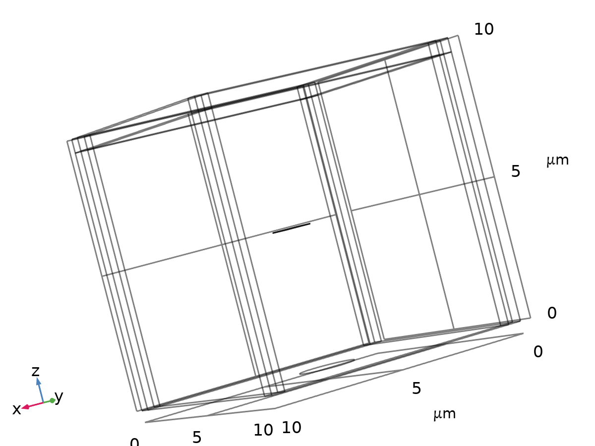
| 几何实体层 | 边界 |
| 选择 | 几何 geom1: 尺寸标注 2: 所有边界 |
| COMSOL Multiphysics |

| 几何实体层 | 域 |
| 选择 | 几何 geom1: 尺寸标注 3: 所有域 |
| Description | Value | Unit |
|---|---|---|
| 位移场，X 分量 | 0 | m |
| 位移场，Y 分量 | 0 | m |
| 位移场，Z 分量 | 0 | m |
| 结构速度场，X 分量 | 0 | m/s |
| 结构速度场，Y 分量 | 0 | m/s |
| 结构速度场，Z 分量 | 0 | m/s |
| Description | Value |
|---|---|
| 坐标系 | 全局坐标系 |
| COMSOL Multiphysics |
| 名称 | 表达式 | 单位 | 描述 | 选择 |
|---|---|---|---|---|
| solid.init1.u1 | 0 | m | 位移初始值，1 分量 | 域 13 |
| solid.init1.u2 | 0 | m | 位移初始值，2 分量 | 域 13 |
| solid.init1.u3 | 0 | m | 位移初始值，3 分量 | 域 13 |
| solid.init1.ut1 | 0 | m/s | 结构速度初始值，1 分量 | 域 13 |
| solid.init1.ut2 | 0 | m/s | 结构速度初始值，2 分量 | 域 13 |
| solid.init1.ut3 | 0 | m/s | 结构速度初始值，3 分量 | 域 13 |
| solid.uInitx | solid.init1.u1 | m | 位移初始值，x 分量 | 域 13 |
| solid.uInity | solid.init1.u2 | m | 位移初始值，y 分量 | 域 13 |
| solid.uInitz | solid.init1.u3 | m | 位移初始值，z 分量 | 域 13 |
| solid.utInitx | solid.init1.ut1 | m/s | 结构速度初始值，x 分量 | 域 13 |
| solid.utInity | solid.init1.ut2 | m/s | 结构速度初始值，y 分量 | 域 13 |
| solid.utInitz | solid.init1.ut3 | m/s | 结构速度初始值，z 分量 | 域 13 |
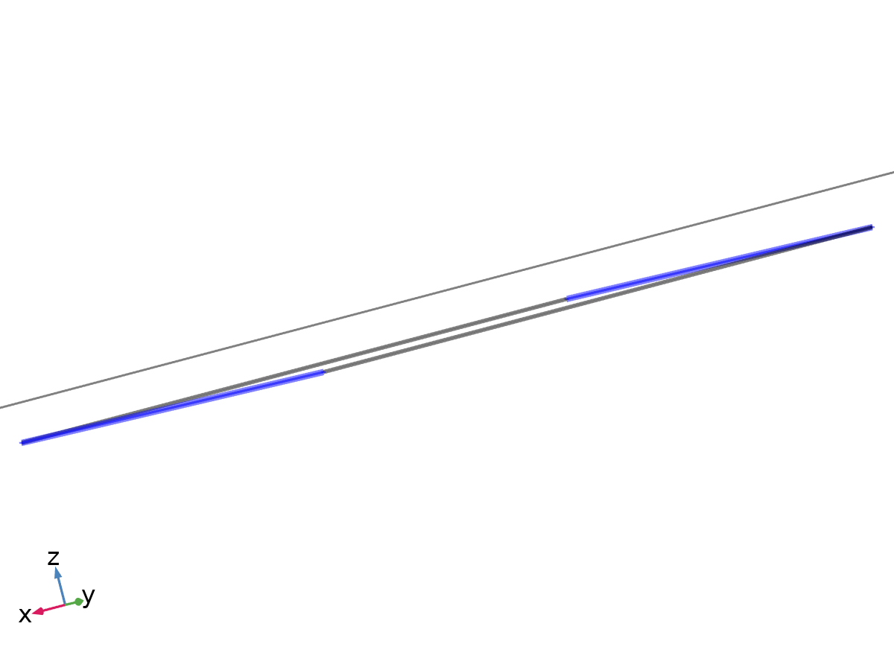
| 几何实体层 | 边界 |
| 选择 | 几何 geom1: 尺寸标注 2: 边界 48, 53 |
| COMSOL Multiphysics |
| 名称 | 表达式 | 单位 | 描述 | 选择 | 详细信息 |
|---|---|---|---|---|---|
| solid.fix1.usx | u | m | 位移，空间坐标系，x 分量 | 边界 48, 53 | “+”操作 |
| solid.fix1.usy | v | m | 位移，空间坐标系，y 分量 | 边界 48, 53 | “+”操作 |
| solid.fix1.usz | w | m | 位移，空间坐标系，z 分量 | 边界 48, 53 | “+”操作 |
| 约束 | 约束力 | 形函数 | 选择 | 详细信息 |
|---|---|---|---|---|
| -solid.fix1.usx | test(-solid.fix1.usx) | 节点巧凑边点 (二次) | 边界 48, 53 | 节点 |
| -solid.fix1.usy | test(-solid.fix1.usy) | 节点巧凑边点 (二次) | 边界 48, 53 | 节点 |
| -solid.fix1.usz | test(-solid.fix1.usz) | 节点巧凑边点 (二次) | 边界 48, 53 | 节点 |
| 声学模块 |
| COMSOL Multiphysics |

| 几何实体层 | 边界 |
| 选择 | 几何 geom1: 尺寸标注 2: 所有边界 |
| Description | Value |
|---|---|
| 声学 | 压力声学，频域 (acpr) |
| 结构 | 固体力学 (solid) |
| 名称 | 表达式 | 单位 | 描述 | 选择 | 详细信息 |
|---|---|---|---|---|---|
| acpr.v_bndx | asb1.u_ttx/acpr.iomega | m/s | 驱动边界速度，x 分量 | 边界 48–53 | “+”操作 |
| acpr.v_bndy | asb1.u_tty/acpr.iomega | m/s | 驱动边界速度，y 分量 | 边界 48–53 | “+”操作 |
| acpr.v_bndz | asb1.u_ttz/acpr.iomega | m/s | 驱动边界速度，z 分量 | 边界 48–53 | “+”操作 |
| asb1.ux | u | m | 位移，x 分量 | 边界 48–53 | |
| asb1.uy | v | m | 位移，y 分量 | 边界 48–53 | |
| asb1.uz | w | m | 位移，z 分量 | 边界 48–53 | |
| asb1.u_ttx | solid.u_ttX | m/s² | 加速度，x 分量 | 边界 48–53 | |
| asb1.u_tty | solid.u_ttY | m/s² | 加速度，y 分量 | 边界 48–53 | |
| asb1.u_ttz | solid.u_ttZ | m/s² | 加速度，z 分量 | 边界 48–53 |
| 名称 | 形函数 | 单位 | 描述 | 形函数坐标系 | 选择 | 详细信息 |
|---|---|---|---|---|---|---|
| p | 拉格朗日 (二次) | Pa | 声压 | 空间 | 无边界 | 狭缝 |
| 弱表达式 | 积分阶次 | 积分坐标系 | 选择 |
|---|---|---|---|
| (-treatasconst(acpr.nx)*asb1.u_ttx-treatasconst(acpr.ny)*asb1.u_tty-treatasconst(acpr.nz)*asb1.u_ttz)*test(p)*acpr.delta | 4 | 空间 | 边界 48–53 |
| acpr.FAcoPerAreax*test(asb1.ux)+acpr.FAcoPerAreay*test(asb1.uy)+acpr.FAcoPerAreaz*test(asb1.uz) | 4 | 空间 | 边界 48–53 |
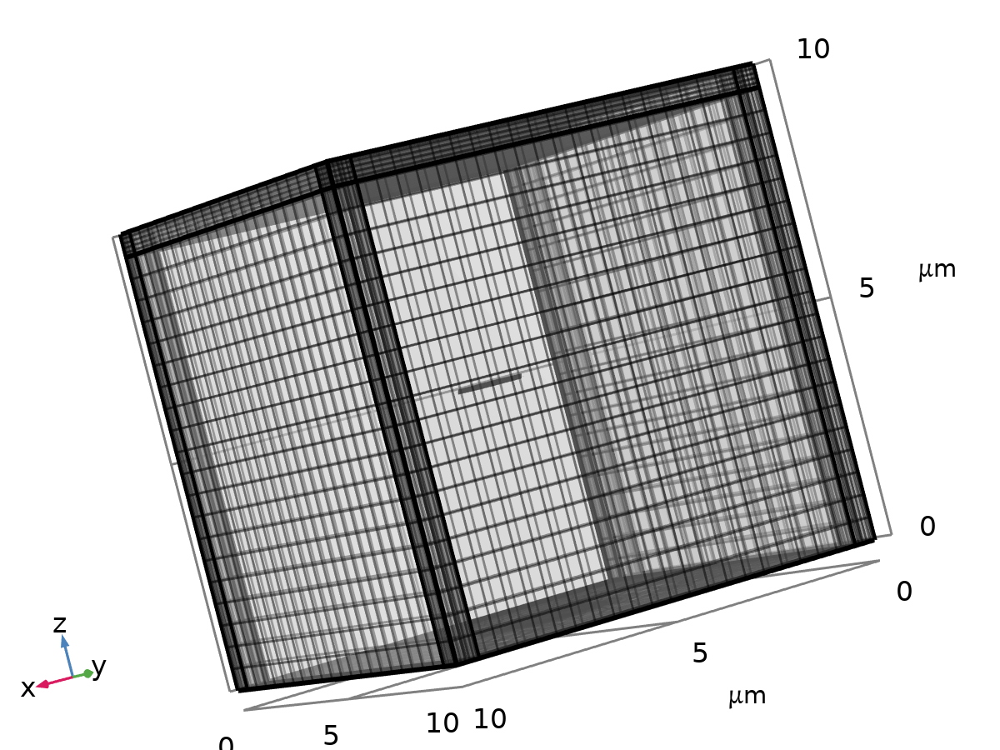
| 描述 | 值 |
|---|---|
| 状态 | 完整网格 |
| 网格顶点 | 42625 |
| 四面体 | 129913 |
| 金字塔 | 4160 |
| 六面体 | 17200 |
| 三角形 | 980 |
| 四边形 | 10460 |
| 边单元 | 1396 |
| 顶点单元 | 60 |
| 单元数 | 151273 |
| 最小单元质量 | 0.02305 |
| 平均单元质量 | 0.693 |
| 单元体积比 | 6.4414E-8 |
| 网格体积 | 1000 µm³ |
| 描述 | 值 |
|---|---|
| 最小单元大小 | 0.18 |
| 曲率因子 | 0.6 |
| 狭窄区域分辨率 | 0.5 |
| 最大单元增长率 | 1.5 |
| 几何实体层 | 边界 |
| 名称 | 映射 |
| 选择 | 命名 sel2: 几何 geom1: 尺寸标注 2: 边界 1–2, 4–5, 7–8, 11, 14–15, 18, 21–23, 25, 28, 30, 37, 44–46, 55, 58, 67, 74–82 |
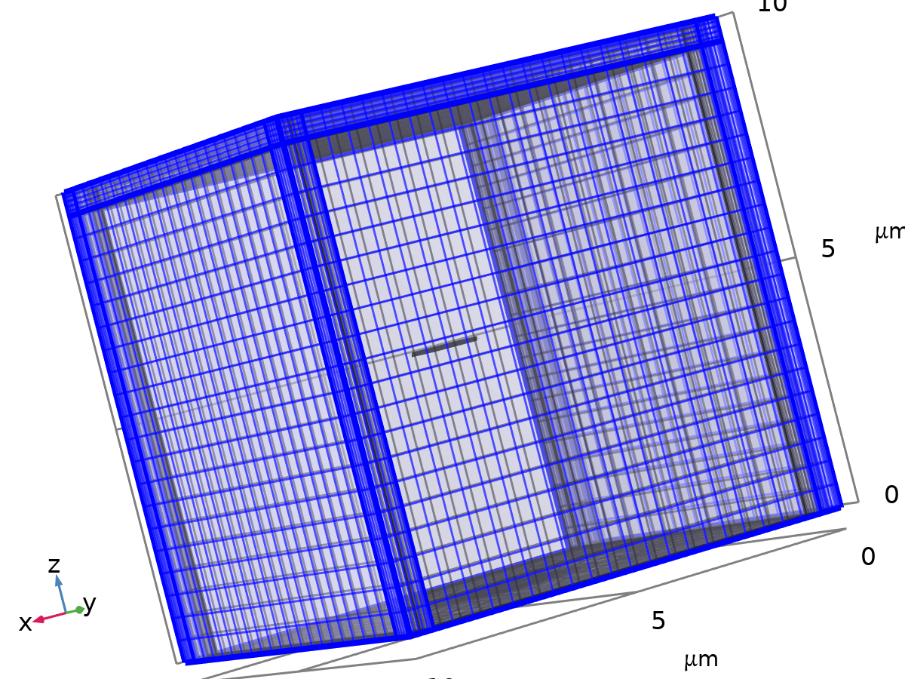
| 描述 | 值 |
|---|---|
| 上次构建时间 | < 1 秒 |
| 构建方式 | COMSOL 6.3.0.290 (win64), May 28, 2026, 4:18:55 PM |
| 几何实体层 | 边 |
| 选择 | 几何 geom1: 尺寸标注 1: 边 7–8, 23, 27, 29, 82, 103, 106, 108, 118 |
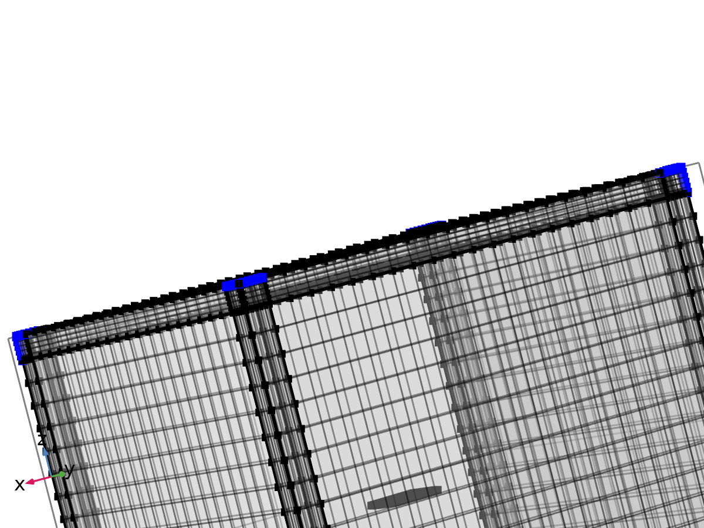
| 几何实体层 | 边 |
| 选择 | 几何 geom1: 尺寸标注 1: 边 9, 13, 17, 30, 35, 54, 57, 112 |
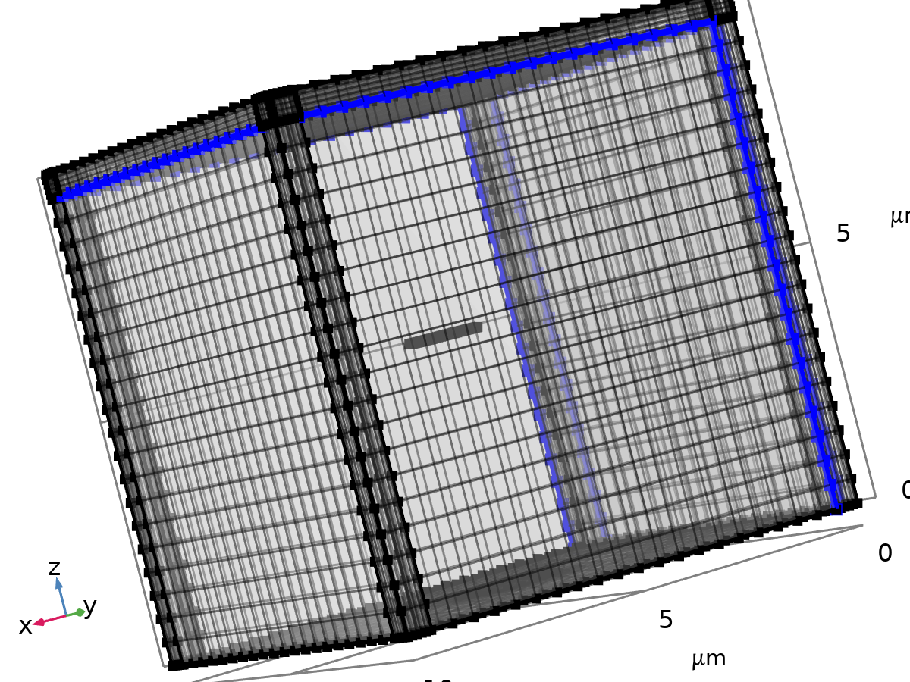
| 描述 | 值 |
|---|---|
| 单元数 | 20 |
| 几何实体层 | 域 |
| 选择 | 几何 geom1: 尺寸标注 3: 域 1–8, 10–12, 14–19 |
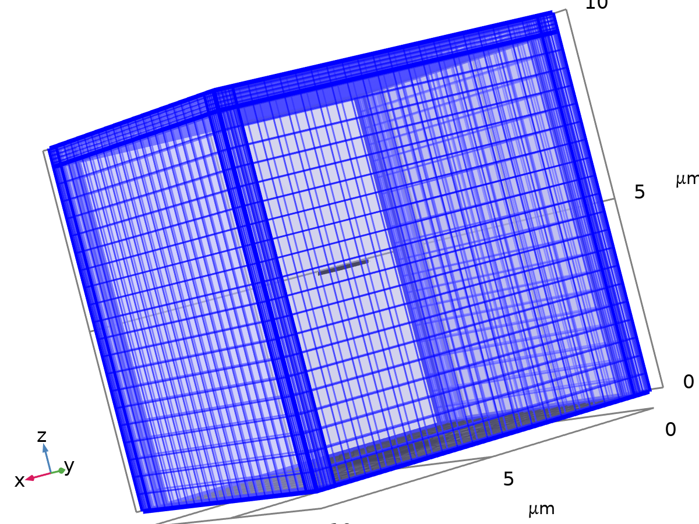
| 描述 | 值 |
|---|---|
| 上次构建时间 | < 1 秒 |
| 构建方式 | COMSOL 6.3.0.290 (win64), May 28, 2026, 4:18:55 PM |
| 几何实体层 | 边界 |
| 选择 | 几何 geom1: 尺寸标注 2: 边界 48–53 |

| 描述 | 值 |
|---|---|
| 上次构建时间 | < 1 秒 |
| 构建方式 | COMSOL 6.3.0.290 (win64), May 28, 2026, 4:18:55 PM |
| 几何实体层 | 边 |
| 选择 | 几何 geom1: 尺寸标注 1: 边 61, 66, 71, 74 |
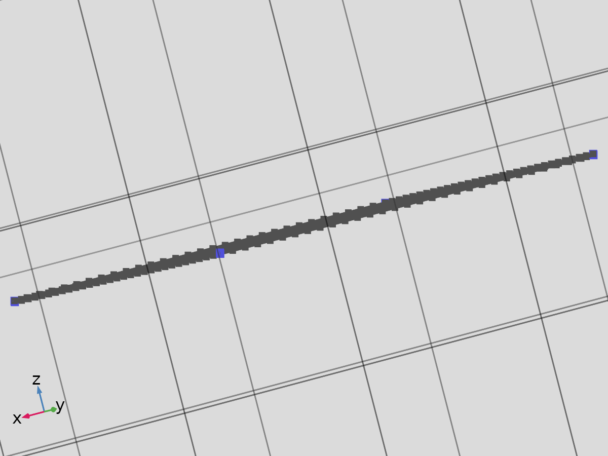
| 描述 | 值 |
|---|---|
| 单元数 | 3 |
| 几何实体层 | 边 |
| 选择 | 几何 geom1: 尺寸标注 1: 边 64–65 |
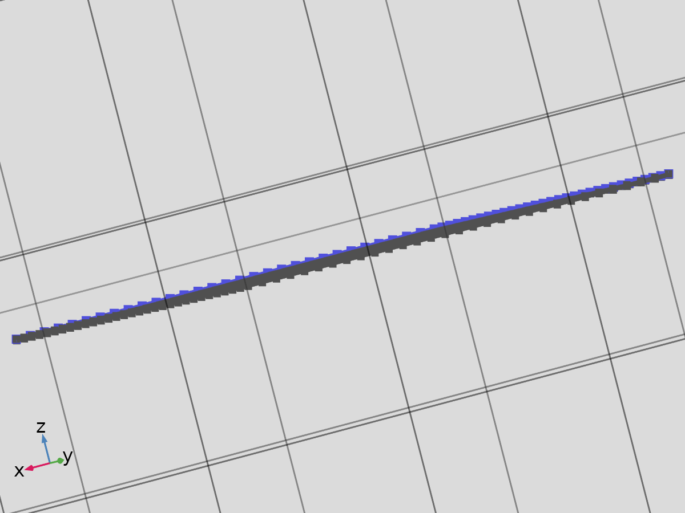
| 描述 | 值 |
|---|---|
| 单元数 | 30 |
| 几何实体层 | 域 |
| 选择 | 几何 geom1: 尺寸标注 3: 域 13 |
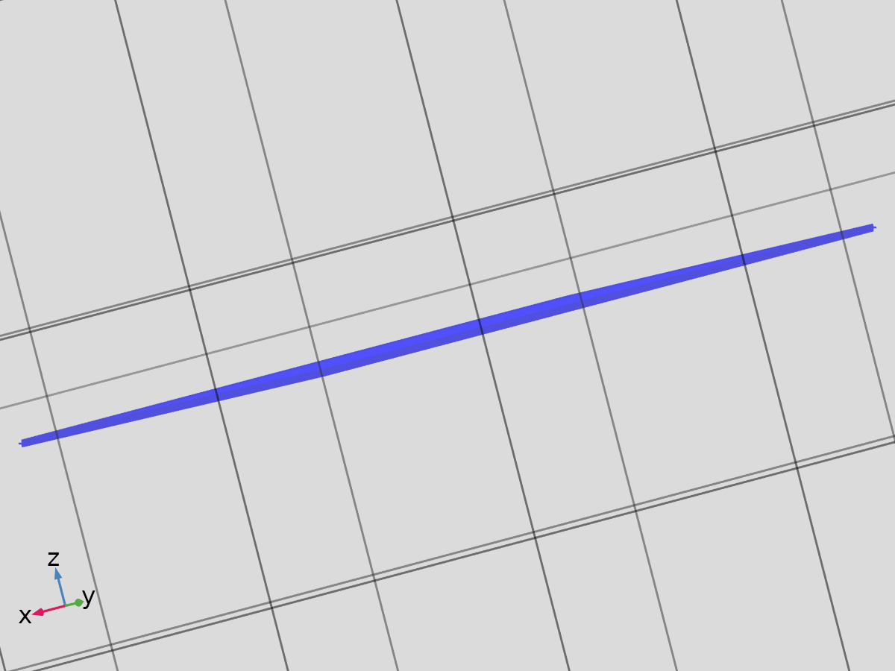
| 描述 | 值 |
|---|---|
| 上次构建时间 | < 1 秒 |
| 构建方式 | COMSOL 6.3.0.290 (win64), May 28, 2026, 4:18:55 PM |
| 几何实体层 | 边界 |
| 选择 | 几何 geom1: 尺寸标注 2: 边界 47 |

| 描述 | 值 |
|---|---|
| 上次构建时间 | < 1 秒 |
| 构建方式 | COMSOL 6.3.0.290 (win64), May 28, 2026, 4:18:55 PM |
| 几何实体层 | 边界 |
| 选择 | 几何 geom1: 尺寸标注 2: 边界 47 |
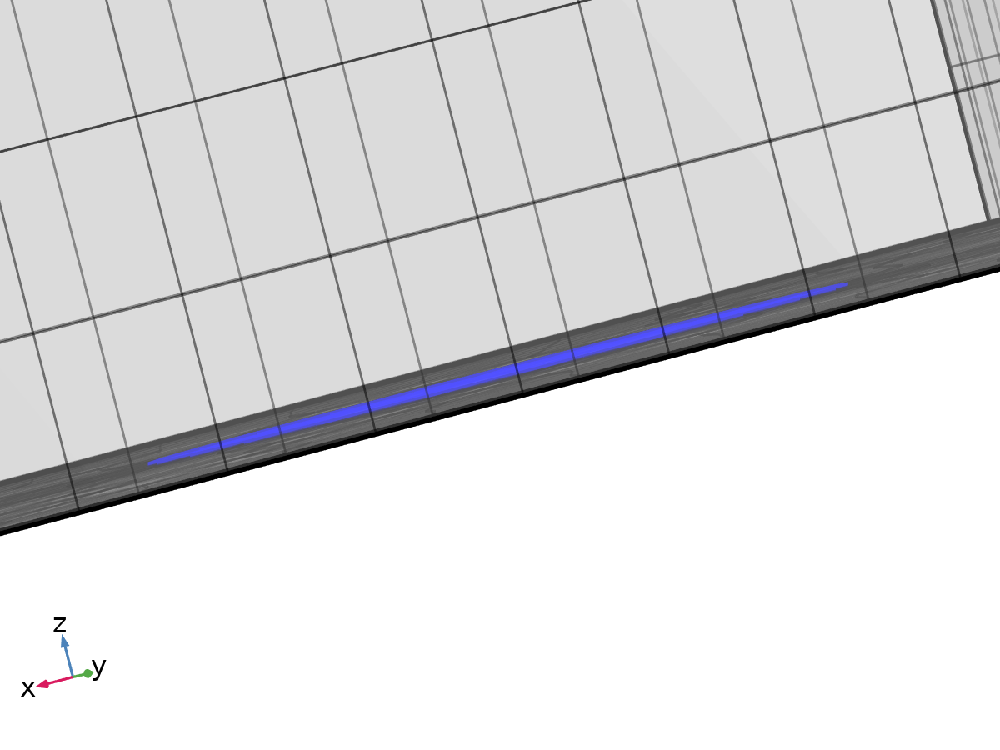
| 描述 | 值 |
|---|---|
| 最大单元大小 | 0.35 |
| 最小单元大小 | 0.015 |
| 曲率因子 | 0.3 |
| 狭窄区域分辨率 | 0.85 |
| 最大单元增长率 | 1.35 |
| 预定义大小 | 超细 |
| 几何实体层 | 域 |
| 选择 | 剩余部分 |
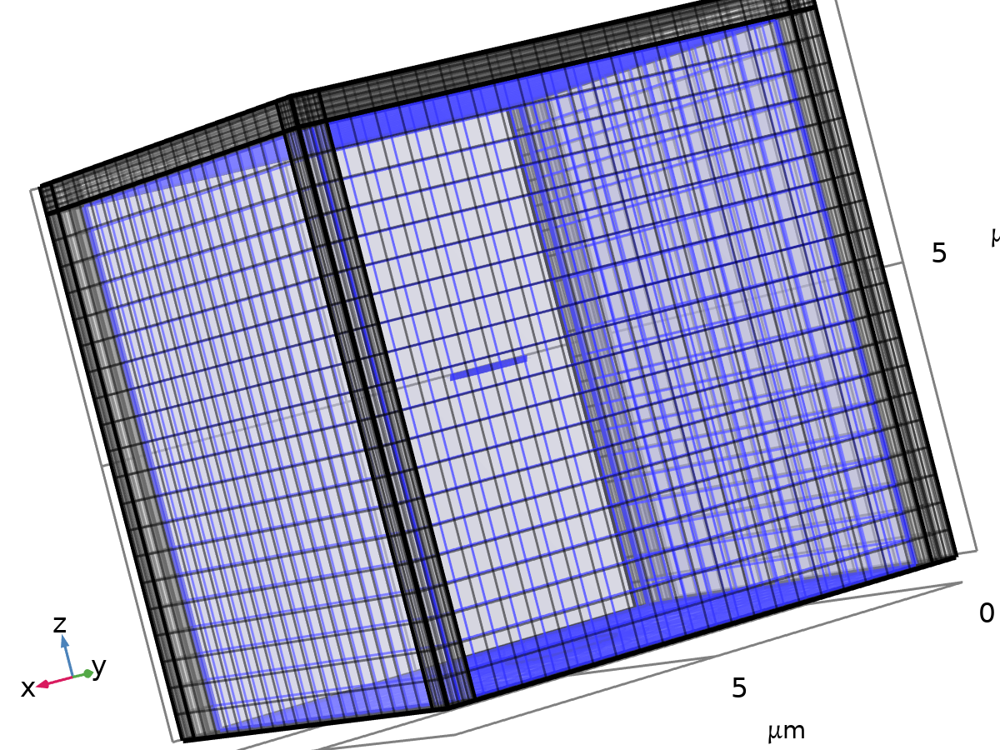
| 描述 | 值 |
|---|---|
| 避免反转的弯曲单元 | 开 |
| 描述 | 值 |
|---|---|
| 上次构建时间 | 12 秒 |
| 构建方式 | COMSOL 6.3.0.290 (win64), May 28, 2026, 4:19:08 PM |
| 几何实体层 | 域 |
| 选择 | 几何 geom1 |
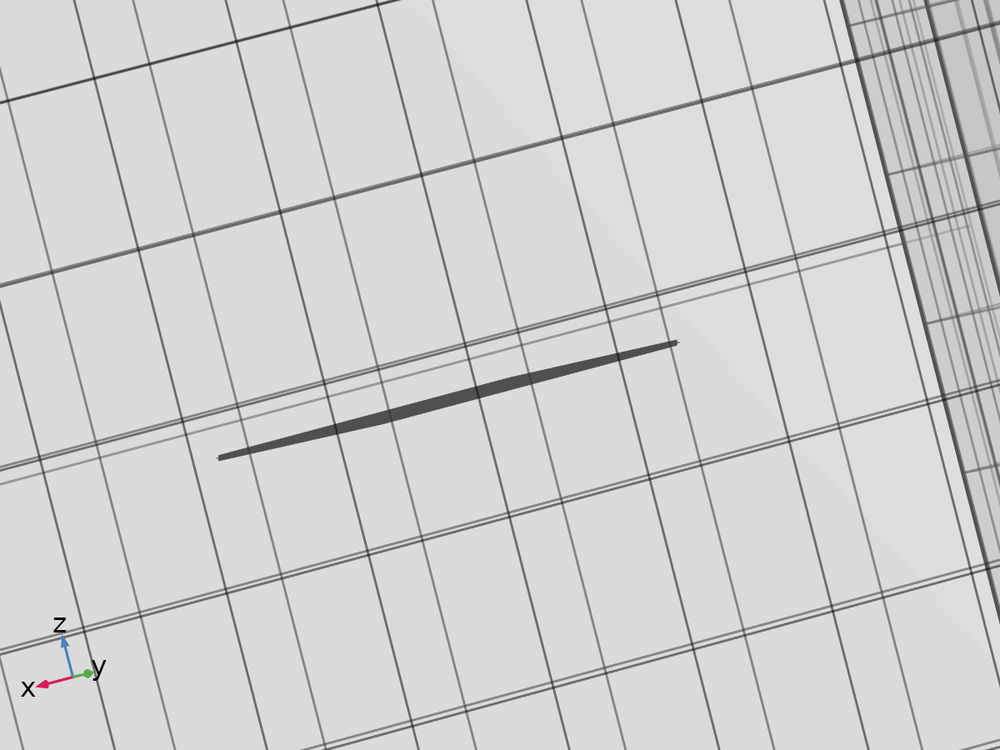
| 描述 | 值 |
|---|---|
| 最大单元大小 | 0.55 |
| 最小单元大小 | 0.04 |
| 曲率因子 | 0.4 |
| 狭窄区域分辨率 | 0.7 |
| 最大单元增长率 | 1.4 |
| 预定义大小 | 更细 |
| 计算时间 | 6 min 15 s |
| 参数名称 | 参数值列表 |
|---|---|
| 描述 | 值 |
|---|---|
| 扫描类型 | 指定组合 |
| 参数名称 | {} |
| 单位 | {} |
| 参数名称 | 参数值列表 | 参数单位 |
|---|---|---|
| 频率 (kHz) |
|---|
| 70 range(40,30,100) |
| 描述 | 值 |
|---|---|
| 包含几何非线性 | 关 |
| 描述 | 值 |
|---|---|
| 频率单位 | kHz |
| 描述 | 值 |
|---|---|
| 频率 | {70, 40, 70, 100} |
| 键 | 求解 |
|---|---|
| 压力声学，频域 (acpr) | 开 |
| 固体力学 (solid) | 开 |
| 特征 | 求解 |
|---|---|
| 声-结构边界 1 (asb1) | 开 |
| 接口 | 输出 | 选择 |
|---|---|---|
| 压力声学，频域 (acpr) | 物理场控制 | |
| 固体力学 (solid) | 物理场控制 | |
| 声-结构边界 1 (asb1) |
| 组件 | 网格 |
|---|---|
| 组件 1 | 网格 1 |
| 描述 | 值 |
|---|---|
| 使用研究 | 研究 1 |
| 使用研究步骤 | 频域 |
| 描述 | 值 |
|---|---|
| 由研究步骤定义 | 步骤 1: 频域 |
| 常数名称 | 初始值源 |
|---|---|
| freq | 70[kHz] range(40,30,100)[kHz] |
| 描述 | 值 |
|---|---|
| 场分量 | comp1.p |
| 描述 | 值 |
|---|---|
| 场分量 | {comp1.u, comp1.v, comp1.w} |
| 描述 | 值 |
|---|---|
| 由研究步骤定义 | 步骤 1: 频域 |
| 描述 | 值 |
|---|---|
| 探针 | 无 |
| 描述 | 值 |
|---|---|
| 重用稀疏模式 | 开 |
| 允许实数输入的函数得到复值输出 | 开 |
| 描述 | 值 |
|---|---|
| 由研究步骤定义 | 步骤 1: 频域 |
| 运行继续运算 | 无参数 |
| 参数名称 | 参数值列表 | 参数单位 |
|---|---|---|
| freq | 70 range(40,30,100) | kHz |
| 描述 | 值 |
|---|---|
| 线性求解器 | Suggested Direct Solver (asb1) (已合并) |
| 描述 | 值 |
|---|---|
| 解 | 解 1 (sol1) |
| 组件 | 组件 1 (comp1) |
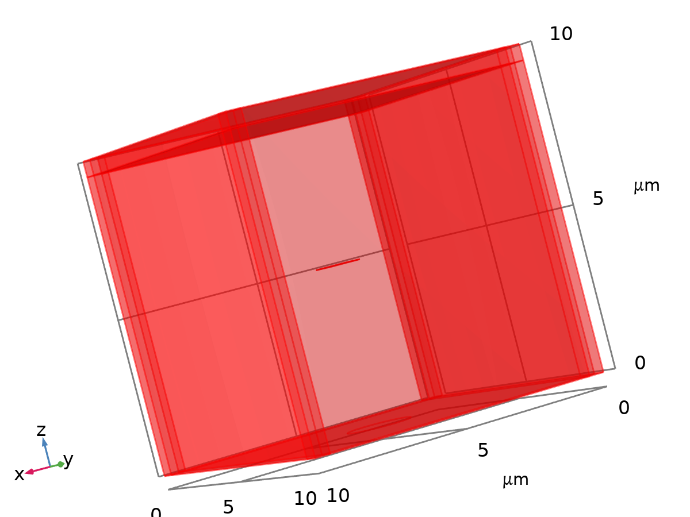
| 描述 | 值 |
|---|---|
| 解 | 参数化解 1 (sol2) |
| 组件 | 组件 1 (comp1) |
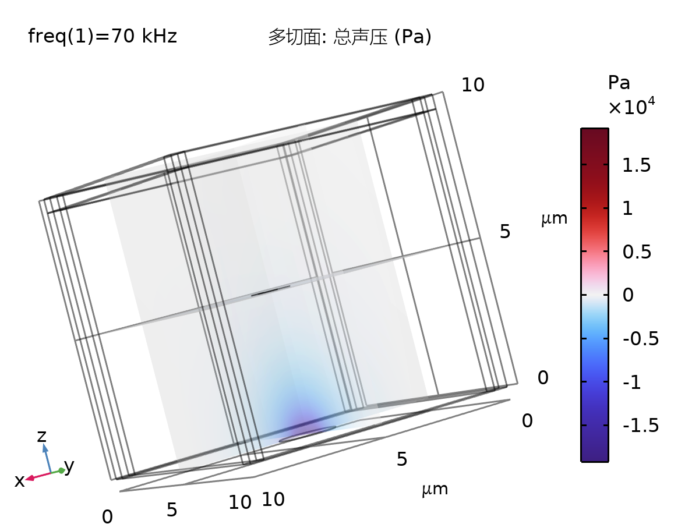
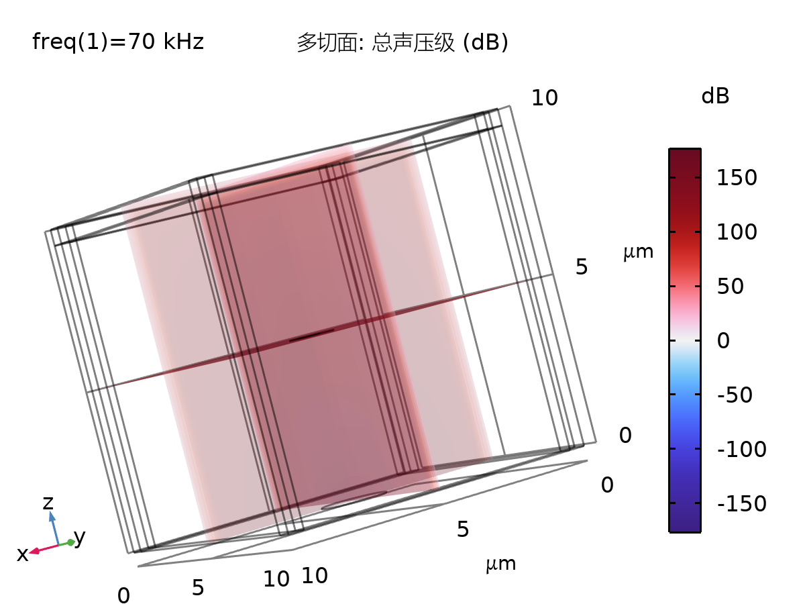
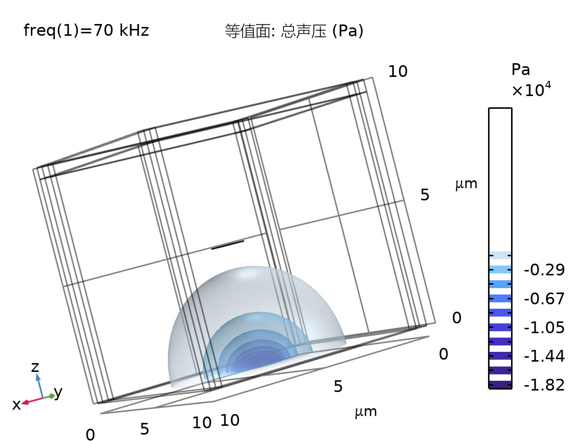
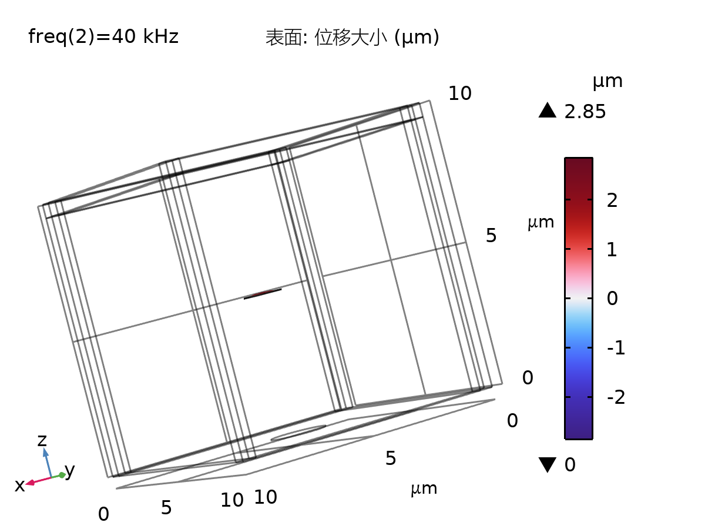